Doing Business in Brazil
2014 Country Commercial Guide for U.S. Companies
INTERNATIONAL COPYRIGHT, U.S. & FOREIGN COMMERCIAL SERVICE AND U.S. DEPARTMENT OF STATE, 2010. ALL RIGHTS RESERVED OUTSIDE OF THE UNITED STATES.
Chapter 1: Doing Business In Brazil
Chapter 2: Political and Economic Environment
Chapter 3: Selling U.S. Products and Services
Chapter 4: Leading Sectors for U.S. Export and Investment
Chapter 5: Trade Regulations, Customs and Standards
Chapter 6: Investment Climate
Chapter 7: Trade and Project Financing
Chapter 8: Business Travel
Chapter 9: Contacts, Market Research and Trade Events
Chapter 10: Guide to Our Services Return to table of contents
Return to table of contents
Chapter 1: Doing Business in Brazil
Market Overview
Market Challenges
Market Opportunities
Market Entry Strategy
Market Overview
Return to top
The Federative Republic of Brazil is Latin America's largest economy. With 3,290,000 square miles, bordering 10 other countries and with 4,650 miles of coastline, Brazil is the largest country in Latin America and fifth largest in the world. Its population of 202 million makes Brazil the world’s sixth-most populous nation. With a Gross Domestic Product (GDP) in 2013 of US$2.3 trillion, Brazil is the world’s seventh-largest economy, spurred by a 2.5% annual growth during 2013. Growth slowed during last year due to reduced demand for Brazilian exports in Europe and Asia and modest consumer demand from Brazil’s large middle class. By 2020, Brazil is projected to be the fifth-largest consumer market in the world, ahead of France and the United Kingdom.
During the past decade, the country has maintained macroeconomic policies that control inflation and promote economic growth. Inflation was 6.3% in April 2014. Urban unemployment was at 4.9% in April 2014, dropping from 6% in mid-2013; wages continue to increase. Interest rates are high by international standards: Brazil’s Central Bank benchmark rate was at a historic low of 7.25% in October 2012, but as of May 2014 had climbed to 11%, which is still low by Brazilian standards.
In 2013, the U.S. was Brazil’s second largest source of imports, accounting for 15% of total imported goods; behind China and followed by Argentina, Germany, and Nigeria. In 2013, Brazil imported over US$239 billion of total goods, including US$44 billion from the U.S. – a modest 0.7% increase over 2012. Brazil was the United States' seventh-largest export market for goods in 2013. Brazil is also a large market for U.S. services, accounting for an additional $24 billion in exports in 2012 (latest available data). The trade balance with Brazil for U.S. services has continually increased since 2003, reaching a surplus for the U.S. of $17 billion as of 2012.
Market Challenges
Return to top
Brazil has a large and diversified economy that offers U.S. companies many opportunities to partner and to export their goods and services, and U.S. exports are increasing rapidly. Doing business in Brazil requires intimate knowledge of the local environment, including both the direct as well as the indirect costs of doing business in Brazil (referred to as “Custo Brasil”). Such costs are often related to distribution, government procedures, employee benefits, environmental laws, and a complex tax structure. Logistics pose a particular challenge, given the lack of sufficient infrastructure to keep up with nearly a decade of economic expansion. In addition to tariffs, U.S. companies will find a complex customs and legal system. The Government of Brazil (GOB) is the nation’s largest buyer of goods and services. However, winning contracts with the government can be challenging. U.S. exporters may find themselves at a competitive disadvantage if they do not have a significant in-country presence – whether via established partnerships with Brazilian entities or some type of company subsidiary -- as well as the patience and financial resources to respond to legal challenges and bureaucratic delays.
Market Opportunities
Return to top
Brazil’s infrastructure sector will receive an estimated US$800 billion in investments from 2013 through 2017. The sum will be divided between the energy and infrastructure sectors, with a larger amount allocated for infrastructure development such as roads, rail, ports and airports.
Brazil is experiencing major growth in the construction sector. The country has captured global attention as its major cities undergo a construction boom related to the 2014 World Cup and, specifically for Rio de Janeiro, the Summer Olympic Games in 2016.
The Government of the State of Rio de Janeiro estimates that investments in the State between 2010 and 2016 will reach US$ 50 billion, in sectors including infrastructure, construction, transportation and others. Most of these investments will be done under Brazil’s Public-Private Partnerships (PPPs).
The first-ever Olympic Games in South America will generate numerous business opportunities for U.S. companies in several sectors. The main projects include logistics upgrades at seaports, airport modernization, mass transit build-out, and water sanitation.
Funding for projects will be accomplished with a significant appropriation by the GOB under its “Plan for Growth Acceleration” (PAC). This program encompasses infrastructure investment in logistics, energy, and social services and urban mobility infrastructure.
The Rio de Janeiro Olympic Organizing Committee began their procurement process related to the Olympic Games in early 2014. For further information or to pre-register as a supplier, please visit http://portaldesuprimentos.rio2016.com/en/ . Companies that are pre-registered through the portal will receive information as specific bids are announced.
Other promising areas for U.S. exports and investment include oil and gas, agricultural equipment, building and construction, aerospace and aviation, safety and security devices, IT, medical equipment, sporting goods, environmental technologies, retail, and transportation.
The Brazilian national oil company Petrobras' expansion plans may represent one of the world’s largest business opportunities in the oil and gas sector until at least 2020. Despite Brazil’s government-mandated local content requirements, industry contacts have been speculating about possible flexibility or compensation mechanisms that they can propose to the Brazilian oil regulator to deal with limited availability of domestic supplies. Petrobras, in fact, may increase purchase of specific foreign goods and services to speed up their projects. In February 2014, Petrobras announced that it would invest US$220.6 billion (approximately US$44 billion/year) from 2014 through 2018, with 70% of this investment being destined for exploration and production (E&P). Brazil accounted for 63% of all deep water oil discoveries in the world from 2005 to 2010. Once these oil fields are developed, Brazil will post the largest oil production growth among non-OPEC countries, sometime in the late 2020s.
Market Entry Strategy
Return to top
Success in Brazil’s business culture relies heavily upon the development of strong personal relationships, the keystone of productive business partnerships. In most cases, U.S. firms need a local presence and thus should invest time in developing relationships through frequent visits to Brazil. The U.S. Commercial Service encourages U.S. companies visiting Brazil to meet one-on-one with potential partners, and offers a slate of services such as our Gold Key Service (GKS), through which companies can meet with pre-screened potential clients or partners in personal meetings. We also lead delegations of Brazilian buyers to connect with U.S. businesses at more than 30 International Buyer Program trade shows in the U.S.
It is essential to work through a qualified representative or distributor when developing new business in the Brazilian market. Some firms may need to establish an office or joint venture in Brazil. It is difficult for U.S. companies to get involved in public sector procurement at the federal or state levels without a Brazilian partner, or a physical presence in Brazil.
Return to table of contents
Chapter 2: Political and Economic Environment
For background information on the political and economic environment of the country, please click on the link below to the U.S. Department of State Background Notes.
http://www.state.gov/r/pa/ei/bgn/35640.htm
Return to table of contents
Chapter 3: Selling U.S. Products and Services
Using an Agent or Distributor
Establishing an Office
Direct Marketing
Joint Ventures/Licensing
Selling Financial Services
Selling Franchises
Selling Professional Services
Selling Retail Concepts
Selling to the Government
Distribution and Sales Channels
Selling Factors/Techniques
Electronic Commerce
Trade Promotion and Advertising
Pricing
Sales Service/Customer Support
Protecting Your Intellectual Property
Performing Due Diligence
Using Local Professional Services
Web Resources
Using an Agent or Distributor
Return to top
Although some companies import directly from foreign manufacturers without local representation, in most cases the presence of a local agent or distributor is essential. As in other countries, the selection of an agent requires careful consideration. Because of regional economic disparities, varying states of infrastructure, complex inter-state trade and taxation rules, and a host of other issues, it is often difficult to find one distributor that has complete national coverage.
The U.S. Commercial Service strongly recommends that exporters and representatives consult with a Brazilian legal representative before writing or signing an agreement. This will help exporters abide by Brazilian laws, particularly to limit liabilities, protect trademarks, better ensure payments, and define warranty terms. Clauses related to exclusivity, promotional obligations, service and support duties, localization and performance targets, among others, may be included within the agreement.
Establishing an Office
Return to top
Investment options in Brazil include either setting up a company in Brazil or acquiring an existing entity. Setting up new companies has become increasingly easier, as the Ministry of Development, Industry, and Foreign Trade (MDIC) has signaled a desire to simplify the process. According to MDIC, Brazilian authorities have significantly reduced the amount of time required to grant various licenses and registrations over the past few years.
The Central Bank monitors acquisitions of existing companies. Corporations (“sociedades anônimas”) and limited liability companies (“limitadas ”) are relatively easy to form. Brazilian law requires that foreign capital be registered with the Central Bank. Failure to comply may cause serious foreign exchange losses, as well as problems with capital repatriation or profit remittance. More information for potential investors can be found in our Investment Climate section (see #Chapter 6), or through Brazil’s Ministry of External Relations’ web resources.
Web Resources:
Agência Brasileira de Desenvolvimento Industrial (ABDI) http://www.abdi.com.br/
Agência Brasileira de Promoção de Exportações e Investimentos (APEX Brasil) http://www2.apexbrasil.com.br/en
Brasil Global Net http://www.brasilglobalnet.gov.br/
Portal Brasileiro de Comércio Exterior http://www.comexbrasil.gov.br/
Direct Marketing
Return to top
According to Acton International, a U.S.-based international direct marketing services provider, the Brazilian consumer receives an estimated 9.3 pieces of direct mail every month. Its research has shown that 74% of Brazilian consumers like receiving direct mail. With increased expendable income in the growing middle class, direct marketing is an effective option to include in a company’s marketing communications strategy for Brazil.
Brazil continues to lead Latin America in direct marketing activities due to its large consumer base and growing economy. The Brazilian Association of Direct Marketing (ABEMD) is a self-regulated, non-profit entity representing the direct marketing sector. Its web site provides important information regarding codes of conduct, legislation compliance, and direct marketing service providers.
Web Resources:
- Brazilian Association of Direct Marketing (ABEMD) http://www.abemd.com.br/
Joint Ventures/Licensing
Return to top
Joint ventures are common in Brazil, particularly as an approach for foreign firms to compete for government contracts or in heavily regulated industries, such as telecommunications and energy. Usually, joint ventures are established through "sociedades anônimas" or "limitadas," which are similar to corporations and limited partnerships, respectively. Licensing agreements are also common in Brazil. For more information see #Chapter 6 “Investment Climate” section. All licensing and technical assistance agreements, including trademark licenses, must be registered with the Brazilian Industrial Property Institute (INPI).
Web Resources:
- Brazilian Industrial Property Institute (INPI) http://www.inpi.gov.br/
Selling Financial Services
Return to top
The largest in South America, Brazil’s banking system is highly developed, efficient, and offers a wide range of financial services. The nation’s financial system regulates banking and financial services as well as insurance, and maintains strict accounting and operational supervision.
Financial services in Brazil, including banking, leasing and insurance services are governed by the Brazilian Constitution, which established the National Financial System (Portuguese acronym SFN). This system, headed by Government of Brazil’s Ministry of Finance, is organized as follows:
Regulatory Agencies
National Monetary Council (CMN), an official body whose main functions are to maintain control of the medium of exchange and the circulation of money; to establish directives for exchange policy and dealings in gold; to discipline credit and the provision of guarantees; to regulate the establishment, operation and control of financial institutions; to protect the liquidity and solvency of financial institutions; and to guide the applications of resources so as to promote the orderly development of the country.
Central Bank (Banco Central do Brasil), a federal agency entrusted to execute the policies established by the CMN for the improvement and stability of the National Financial System (SFN). Its functions include control of the money supply, the physical issuance of currency, the regulation and control of financial institutions, the control of foreign capital flow, determining credit policy, managing market liquidity levels, monitoring interest and exchange rates, and maintaining savings at levels compatible with the country’s needs.
Securities Exchange Commission (CVM), which directly regulates the stock exchanges, brokers, distributors, pension funds, mutual funds and leasing companies.
National Council of Private Insurance (CNSP), comprised of the Ministry of Finance, the Superintendence of Private Insurance (SUSEP), the Brazilian Reinsurance Institute (IRB), the Central Bank, representatives of the Ministries of Justice and Planning, and four private insurance companies. The CNSP’s responsibilities include setting insurance policy guidelines and rules; regulating private insurance firm creation, organization, activities and supervision; establishing guidelines of insurance contracts; establishing reinsurance rules; and keeping general accounting and statistical records.
Superintendence of Private Insurance (SUSEP), an independent agency subject to the Ministry of Finance via the CNSP. It monitors the insurance and private pension market through the solvency index; establishes operational risk limits; supervises technical reserves; and regulates open pension funds and insurance brokers.
Classification of Institutions under SFN Governance
Financial Institutions, Banking and Non-Banking
Banking: multiple banks, commercial banks, saving & loan banks, cooperative banks, credit cooperatives
Non-Banking: investment banks, development banks, finance companies, saving & loan companies, mortgage companies
Ancillary Institutions
Security dealers
Stockbrokers
Other entities not considered financial institutions, yet subject to CMN and Central Bank supervision
- Consortium management, commercial leasing companies, advancement and development agencies, investment funds and companies, savings and loan associations, small business credit companies, factoring companies
Insurance and capitalization companies and private pension funds
- These organizations are not considered to be financial institutions and therefore are not part of the SFN; however, the CMN has authority to regulate their investment portfolios.
Brazil’s Largest Banks Ranked by Assets, Public and Private
Growth results in 2013 by Brazilian banks show the country’s two private banks, Bradesco and Itaú, among the most profitable in Latin America.

Banco do Brasil, Caixa Econômica Federal (Federal Savings Bank), and BNDES, the National Bank for Economic and Social Development are owned by the federal government. Itaú and Bradesco are Brazilian-owned private banks. Santander is Spanish-owned.
Market Trends
According to a survey held by the Brazilian Bank Federation (Febraban), the banking industry is not too optimistic about 2014. Projections indicate that growth of credit operations will remain steady. For individuals, a 10% growth rate is expected, while total portfolios are expected to grow at a rate of 12%.
U.S. Participation
U.S. commercial and investment banking interests have been in Brazil since 1915. In terms of assets, Citibank and JP Morgan were among the top 50 institutions in the country as of December 2013. At that time, the banks held assets of, respectively, US$26.4 and US$14 billion.
Web Resources
- Brazil Bank Federation (Febraban) http://www.febraban.org.br/
- Central Bank http://www.bcb.gov.br/
- Superintendence of Private Insurance (SUSEP) http://www.susep.gov.br/english-susep/index
- Securities Exchange Commission (CVM) http://www.cvm.gov.br/ingl/indexing.asp
Selling Franchises
Return to top
Brazil’s franchise sector is among the largest and most sophisticated in terms of business practices and growth, adapting concepts from both foreign and domestic franchisors. The sector has consistently grown faster than the overall Brazilian economy and has become one of its main growth engines. Today, even traditional retail companies are introducing franchising into their expansion strategy. The strength of Brazil’s local franchise concepts poses special challenges for U.S. entities who wish to enter this robust market, more so than what they might encounter in other Latin American markets. However, Brazil’s current market size and future growth forecast of the nation’s economy, notably its internal consumption rate, point to open doors, and place Brazil on many U.S. franchisors’’ lists of expansion markets.
In 2013, the Brazilian franchise sector grew by 11.9 percent, and total sector revenue was about R$115 billion (US$52 billion). There are an estimated 2,703 franchising chains and 114,409 franchising units in the country, making Brazil the sixth-largest in the world (in number of units) and the 3rd largest in number of franchise chains. In the last year, 277 franchisors reportedly entered the market The number of chains grew from 2,426 in 2012 to 2,703 in 2013 (+11.4%), surpassing the American market, in total number of franchise model brands sold, which in 2013 accounted for 2,500 brands. In fact, the United States currently ranks 4th worldwide.
According to the World Franchise Council, Brazil ranks third in number of brands behind China (4,000) and South Korea (3,034). For 2014, the Brazilian Association of Franchising (ABF) projects a further increase of 10%, driven greatly by the opening of new shopping centers around the country, many catering to upper middle class consumers; and the overall forecasted growth of Brazil’s economy.
The best-performing franchise sector in Brazil in 2013 was in sport, health, beauty and leisure products and services, which grew 23.9%. This was followed by the hotel/hospitality industry, which had an increase of 21.9%. The slowest-moving sectors in terms of growth were found in such retail and b-2-b concepts as Gasoline Stations, Supermarkets, Convenience Stores, Logistics and Transportation, Financial Services, Bookstores, Pet Shops, and Catalogue Sales. The discontinuation of some consumer-facing retail services such as photography/film processing and video rental stores is partially to blame for the downturn.
Local Brazilian franchises dominate the market across many sectors, controlling 92.4% of sales volume; while foreign groups, mostly from the U.S., are making headway. According to ABF, 206 foreign franchise brand concepts currently operate in Brazil, of which 93 are based in the U.S.
Top Players Ranked by Revenue, Number of Units
The ranking of the top ten franchise operations in Brazil, both by revenue and number of units, shows the dominance of Brazilian franchisors over foreign ones. Only four out of the top 10 performing franchise brands (in terms of earnings revenue and number of units in operating) are foreign: McDonald’s, Subway and AM-PM Mini Market from the US; and Kumon from Japan.
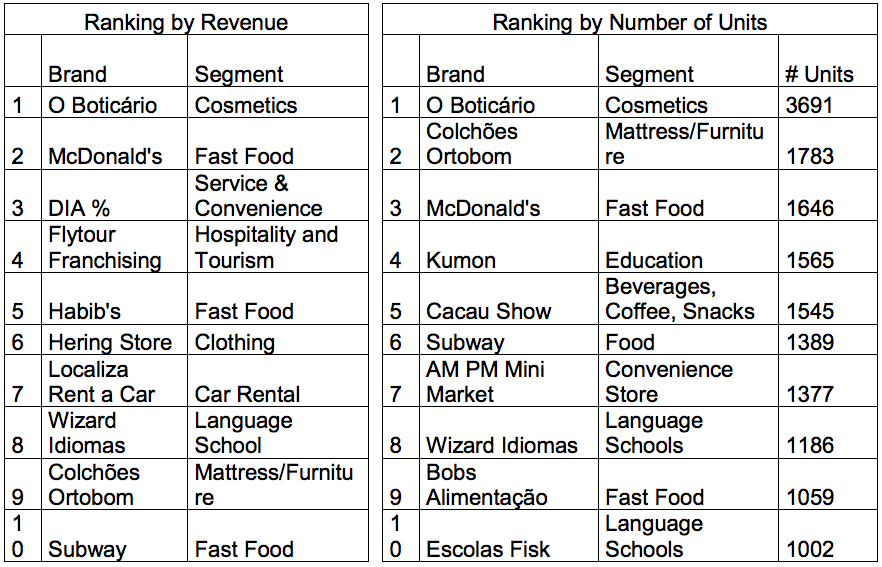
Finding suitable master franchisees in Brazil is a very challenging job for US franchisor companies. One strategy is to develop relationships with Brazilian franchisors and master franchisees of non-competing, yet complementary concepts. In general, Brazilian investors make decisions based on well-structured business plans and the expectations of financial return. It is misleading to think that emotional factors will heavily influence a decision in favor of a certain brand or business concept. It is important that foreign franchisors understand this, and approach the market only after having done the necessary homework, having estimated the true potential of the brand for Brazil.
It is also increasingly common for a Brazilian investor to negotiate risk -sharing agreements with the foreign franchisor when introducing a new brand to the market. “Risk” in this case refers to making actual direct investment in the form of a joint-venture partnership. Also, as many Brazilian concepts are now seeking to expand internationally, some will be open to discussing bilateral agreements, wherein a foreign brand is launched in Brazil at the same time as the foreign franchisor develops a Brazilian brand in its home country. According to ABF, 121 Brazilian brands are present in 60 countries in all continents.
Resources:
World Franchise Council http://www.worldfranchisecouncil.net/
Brazilian Franchise Association www.portaldofranchising.com.br/
Selling Professional Services
Return to top
According to the Annual Survey of Services (Pesquisa Annual de Serviços - PAS), published by the Brazilian Institute of Geography and Statistics (IBGE), the service sector is one of the major contributors to Brazil’s economic growth, accounting for over 75 % of formal employment in the country and 68.5 % of its gross domestic product. Worldwide, revenue from services reaches 80 % of the GDP of most developed countries. The sector’s health is so imperative that even financial difficulties in the recent 2008-2012 period did not shake its foundations …in fact the drop in Brazilian exports of services during the crisis was lower than that of manufactured goods.
In 2013, services sector revenues closed the year with a nominal growth of 8.5 %, vs. 2012, when the sector grew 10%. For 2014, the unknown factor for this sector is how the labor market will behave facing three consecutive years of low GDP growth.
U.S. Trade Surplus in Professional Services The United States has benefited from a historic trade surplus in sales of services to Brazil, realizing high rates of growth during the last 12 years, and weathering the 2008-2010 economic downturns.
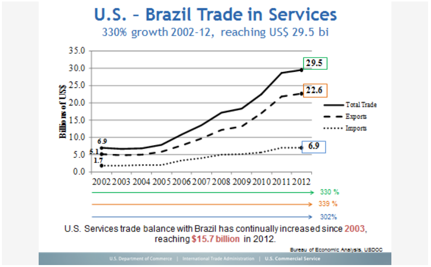
Notable Sectors
The segments of transportation, auxiliary services and postal services (railway/subway transport, road transport, waterway transport, air transport ancillary services and mail services that in Brazil are called Correios) showed the highest growth in the period, with an increase of 10.8% vs. 2012. The postal and courier services had tremendous growth due to the increase of online shopping by consumers and businesses. All purchases of small and medium size goods in Brazil are delivered via the government’s postal services.
Another segment that stood out in 2013 is hospitality services provided to families, such as lodging, food services, recreational/cultural services and personal services, which increased by 10.2 %. The remaining segments analyzed by the Annual Survey of Services also showed growth: professional, administrative and ancillary services (8.1%), information and communication services (6.9%) and other services (5.9%).
Growth by Region Among Brazil’s 27 states, the highest increases in sales of professional services in 2013 were observed in Mato Grosso (20.4 %), the Federal District-Brasília (15.7%), Ceará (13%) and Tocantins (13 %).
Source: IBGE - http://www.ibge.gov.br/home/
Selling Retail Concepts
Return to top
The importance of retail in Brazil is increasingly acknowledged for its role in fueling the Brazilian economic engine. Besides generating the greatest number of formal jobs, since 2010 the retail sector has marked significant growth with consistent indicators of modernization, even during the financial crisis of 2008-09. Since 2004, Brazil’s retail sector has grown by 106%, outpacing the 44% growth rate of the country’s GDP during the same period.
In 2013, Brazil’s domestic retail market was estimated to be worth about $230 billion. Besides the country’s 40% growth in GDP per capita during the last eight years, distribution of population in urban areas also plays a vital role in encouraging the growth of retail sectors. About 30% of the country’s 201 million citizens lives in 10 principal metropolitan cities, led by greater São Paulo with a population of 18 million and Rio de Janeiro with some 10 million inhabitants.
Competitiveness, diverse industrial sectors in the economy, and the growing middle-class consumer population are all factors in such a profound increase in the Brazilian retail market, which was responsible for the creation of 3.7 million formal jobs over the past 10 years. Despite this outsized growth rate, the share of retail as a percentage of the nation’s GDP is still just 26 %. Therefore, there is still much room to grow.
In 2013, the retail sector rate of growth decelerated to just 4.3%, according to data released by the Brazilian Institute of Geography and Statistics (IBGE). This was the worst annual growth since 2003, during which sector sales decreased by 3.7%.The results of 2013 were half that of 2012, when sales volume grew 8.5%, led by an 8.5% increase from the supermarket sub-sector (“hypermarkets”). In 2013, hypermarket sales did grow, albeit at a much lower pace; driven by demand for articles for personal and domestic/household use.
Sectors
Among all retail segments analyzed by IBGE, the one with the greatest contribution to annual income for the sector was the "other articles of personal and domestic use" division. This catch-all category encompasses segments such as department stores, eyewear outlets, and specialty stores selling jewelry, sporting goods and toys. The increase in income derived from this segment was 10.3% over 2012 figures - the largest increase since 2008. Within this segment, department stores performed most notably.
The “pharmaceutical, medical, orthopedic and cosmetics” segment also contributed strong results in 2013, gaining 10.1% growth, the third highest impact (15%) registered among all retail sectors.
Retail revenue derived from gasoline filling stations, including those offering related automobile maintenance services increased 6.3% increase in 2013 over 2012; while retailers of furniture and white good appliances realized an increase of 5%.
Retail sales of textiles, apparel and footwear increased 3.5% - same as 2012 - and equipment and office supplies, computer and communication advanced 7.2%. The segment of books, newspapers, magazines and stationery was responsible for a minor contribution to the overall rate, registering growth of 2.6% over 2012.
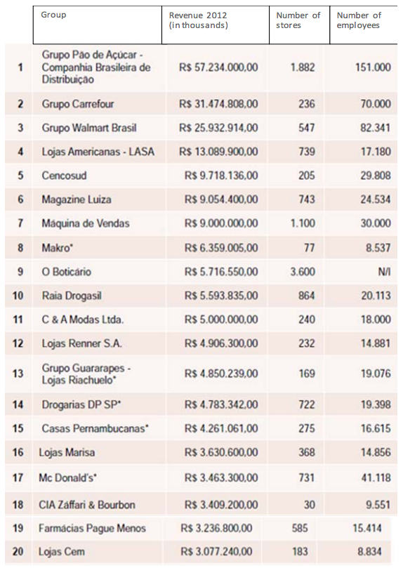
Looking Ahead
Brazil expects major consolidation of existing retail leaders as well as entry of foreign brands, which will greatly alter the competitive landscape. In this scenario, the relevance and purpose of brand differentiation and its application in a consistent manner in the online shopping experience, and the multiple formats of physical stores, are the most important factors to be followed by retail brands, in order to ensure successful entry and expansion.
For more information about export opportunities in this sector, please contact Industry Specialist Luciana Escobar: luciana.escobar@trade.gov
Web Resources:
Institute for Retail Development
Brazilian Institute of Business Retail and Consumer Markets
Brazilian Institute of Geography and Statistics
Selling to the Government
Return to top
The Government of Brazil (GOB) is the nation’s largest buyer of goods and services. However, winning contracts with the government can be challenging. U.S. exporters may find themselves at a competitive disadvantage if they do not have a significant in-country presence – whether via established partnerships with Brazilian entities or some type of company subsidiary -- as well as the patience and financial resources to respond to legal challenges and bureaucratic delays. To be considered a local firm, that firm’s capital, decision-making authority, and operational control must be majority Brazilian-owned. Since the open period for bidding is often as short as one month, it is advisable to have a resident partner in Brazil.
Government procurement policies apply to purchases by government entities and “parastatal” companies such as Petrobras (i.e., quasi-governmental organization, corporation, business, or agency). Government procurement regulations contained in Bid Law 8666 establish an open and competitive process for major government procurements. Under this law, price is the overriding factor when selecting suppliers. Tenders are open for international competition, whether through direct bidding, consortia or imports. However, for many of the larger tenders (e.g. military purchases), single source procurements are possible if they are deemed to meet the national interest or provide unique technical requirements. In case of a bid tie, nationally owned companies will likely gain preference over foreign competitors. Recent measures are focused on modernizing the federal government’s tender process.
The Brazilian Constitution requires that all government purchases, whether at the federal, state or municipal levels, be contracted through public tenders. This process is regulated by Bid Law 8666, introduced in 1993. This law requires any and all official bidders to have a legal presence in Brazil. Law 8666 establishes general requirements for tenders and administrative contracts for goods and services at the Federal, State, and Municipal levels.
Brazil is not a signatory to the WTO Government Procurement Agreement, which precludes discrimination against goods and services from other signatory countries. Preferences for locally-produced products apply to government procurement at all levels, including federal, state and local. Federal and state tax exemptions were issued specifically for 2014 World Cup, and GOB also suspended some remedy actions on products that will be used during the games. Even with such exemptions now enacted, U.S. companies may find it difficult to participate in Brazil’s public sector procurement, unless they are associated with a local firm that can keep them informed of new procurements on short notice and that can assist with the preparation of required paperwork.
It is important to mention the Basic Production Program (PPB), which is an incentive program of the Ministry of Science and Technology and Ministry of Development, Industry in Foreign Trade for ICT products implemented in 1991. The program gives tax incentives to manufacture or assemble specific products within Free Trade Zones. PPB is well utilized by companies manufacturing cell phones and computers.
In 2010, then-President Lula signed a provisional measure that later was approved by the Congress and became law (No. 12,349, December 15, 2010), giving preference in public tenders to firms that produce in Brazil -- whether foreign-owned or Brazilian – and that fulfill certain economic stimulus requirements such as generating employment or contributing to technological development, even when their bids are up to 25 percent more expensive than competing, imported products. In August 2011, this system of preferences was folded into Plano Brasil Maior , the national industrial policy. Government procurement is just one of thirty-five components under Brasil Maior intended to support Brazilian exporters and protect domestic producers, particularly labor-intensive sectors threatened by exports from abroad. The textile, clothing and footwear industries – among the few industries to have lost jobs during the current growth period – were the first to benefit from Plano Brasil Maior when, in November 2011, the federal government’s Ministry of Development, Industry and Commerce (MDIC) implemented an 8 percent preference margin for Brazilian-made goods in these industries for those suppliers who bid on applicable government contracts. In April 2012, the government added pharmaceuticals and certain heavy construction equipment to the list of products receiving preference. In June 2012, the defense, education, and agriculture sectors also received preference margins. In 2012, US$4.2 billion was earmarked for government purchases of domestically-made products. Special legislation was also enacted for the purchase of local trucks, vans, and roads. In 2013, drills and ICT products received additional preference margins.
In order to stimulate innovation of national products, public institutions (when evaluating bids) can add margins of preference, which apply to the innovative component of a product developed in country and create a cost advantage for the domestic firm. The margins of preference of those products can reach up to 25 percent. Decree 7546/2011 established the requirements to obtain a national product designation, and the measures of industrial, commercial and technological compensation with the goal to strengthen the production of goods in country and technology development. In 2013, the Ministry of Science and Technology and Ministry of Development, Industry and Foreign Trade established the requirements for industrial and technological verifications for the additional margins of preference.
Decree 7174 (2010), which regulates the procurement of information technology goods and services, requires federal agencies and parastatal entities to give preferential treatment to locally produced computer products and goods or services with technology developed in Brazil, based upon a complex, price/technology matrix. However, Brazil permits foreign companies that have established legal entities in Brazil to compete for procurement-related contracts funded by multilateral development bank loans. In February 2013, Decree 7903 (2013) was issued, setting new preference margins for ICT products. Under the new guidelines, ICT products assembled in Brazil with imported component parts will have a 15% preference margin, while ICT products manufactured in Brazilian from local components will have a 25% preference.
The preference margins stipulated under Plano Brazil Maior are temporary and are set to expire between 2014 and 2015, depending on the sector. Government procurement is just one of thirty-five components under Plano Brazil Maior intended to support Brazilian exporters and protect domestic producers, particularly in the labor-intensive sectors.
Brazil is negotiating a treaty on government purchases under MERCOSUL, the Southern Common Market, comprised of Argentina, Brazil, Paraguay, Uruguay, and Venezuela, which promotes free trade of goods, services, and production inputs. When the treaty is signed and ratified, Mercosul-produced goods will also be included in GOB preference margins on public purchases.
A Brazilian state enterprise is permitted to subcontract services to a foreign firm if domestic expertise is unavailable, while a foreign firm may only bid to provide technical services when there are no qualified Brazilian firms.
Including Brazilian goods and services in your company's bid, or subcontracting with a Brazilian firm, may improve your company’s chance for success. Similarly, a financing proposal that includes credit for the purchase of local goods and services for the project will be more attractive. Advance descriptions of U.S. suppliers' capabilities can prove influential in winning a contract, even when they are provided before the exact terms of an investment plan are defined or the project's specifications are fully defined. Such a proposal should include presentations on financing, engineering, equipment capabilities, training, and after-sale service that will originate and be carried out within Brazil.
Distribution and Sales Channels
Return to top
All of the customary import channels exist in Brazil: agents, distributors, import houses, trading companies, subsidiaries and branches of foreign firms, among others. Brazilian importers generally do not maintain inventory of capital equipment, spare parts, or raw materials, partly because of high import and storage costs. Recently, because of the creation of additional bonded warehouses, industries that rely heavily on imported components and parts are maintaining larger inventories in these warehouses.
Selling Factors/Techniques
Return to top
Price and payment terms are extremely important sales factors. Generally, U.S. goods are perceived as high quality; however, depending on quality as the primary competitive advantage may be risky. To be competitive, U.S. companies should adapt their products to local technical requirements and culture. In some sectors, competing with an ever increasing amount of Chinese imports can be difficult because of their low prices. Therefore, emphasizing product quality, customer service, after-sale service, financing arrangements, and warranty terms are key competitive advantages for U.S. companies. As Brazilian companies become more concerned with environmental stewardship, it is also advisable to demonstrate commitment to sustainable development practices when introducing new products into this market.
Electronic Commerce
Return to top
According to the Brazilian Chamber of Electronic Commerce report, the e- commerce segment ended 2013 with US$12.5 billion in earnings, an increase of 28% as compared to 2012. A total of 88.3 million orders were placed in 2013, a 32% increase compared to the previous year. Throughout the year, 9.1 million people made their first online purchase, and the number of consumers that have already made at least one purchase on the internet reached 51.3 million.
The popularization of mobile broadband is another key growth factor. Cheaper smartphones have connected people from the lower to lower–middle (“C” and “D” socio-economic classes) to the Internet, thus allowing these consumers to also buy online.
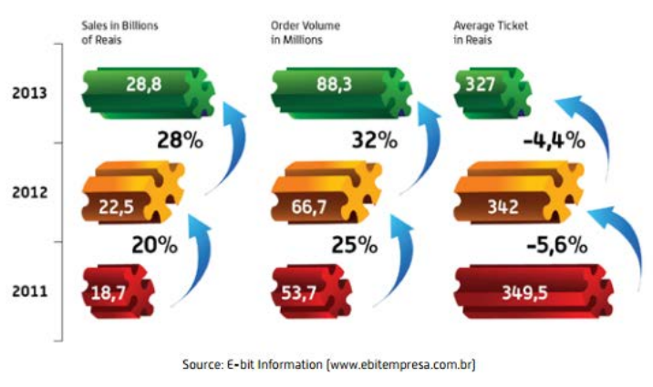
The most profitable industry sectors for online shopping include electronic appliances, computers, electronics, and fashion and accessories. Fashion is a particularly interesting category, despite the widely held belief that Brazilians need to try on clothes before purchasing. Brazilians tend to purchase through marketplaces and group buying websites. Brazilians also like to take advantage of online discount websites and coupons. Many middle-class consumers are aware that online prices for consumer goods and customer service policies are better than in stores.
Currently, the most popular online retail websites include (in alphabetical order):
Casas Bahia www.casasbahia.com.br
Lojas Americanas www.lojasamericanas.com.br
Magazine Luiza www.magazineluiza.com.br
Mercado Livre www.mercadolivre.com.br
Netshoes www.netshoes.com.br

The group buying segment also increased 10% as compared to the previous year. M-Commerce (mobile) transactions are also on the rise, reaching 4.2% of total transactions. Amazon, Google, Yahoo and other U.S. giant companies already have offices in Brazil.
Trends
Mobility is one of the strongest trends for 2014, contributing to the M-Commerce rise. Consumers are learning to compare prices and information products via Internet and often prefer the convenience of purchasing items via e-commerce.
Business-to-consumer (B2C) e-commerce segment in Brazil accounted for US$12.5 billion in 2013. One factor enabling the development of this sector is the “long-tail” effect, which allows a wider product offering in niche areas compared to that found in physical storefronts. Surveys held in other countries, for example, indicate that online stores’ inventories are 6 to 23 times larger than those of physical stores. Online retailers are taking advantage of U.S. selling techniques. For example, in 2013 in Brazil, Black Friday generated retail sales of $335 million on a single day breaking all the previous records.
U.S. B2C firms seeking to reach the online Brazilian consumer from their U.S. bases should proceed with caution. It is cost prohibitive and unreliable for online shoppers to purchase and import products into the country from the U.S. because of high import taxes. Direct sales from the U.S. are subject to customs and duties regulations. Although Brazil has made substantial progress in reducing traditional border trade barriers (tariffs, import licensing, etc.), rates in many areas remain high and continue to favor locally produced products.
Geography plays a major role when evaluating the country’s potential. Consumers in the state of São Paulo account for one-third of online purchases (34.2%), which reflects Brazil’s concentration of wealth and education. U.S. firms should take this concentration into account when assessing potential partnerships and working with consultants and online service providers. Many of the major consulting firms are based in São Paulo, the country’s business capital.
Payment methods are complex and varied in nature. Most Brazilians still use cash, checks and payment slips, but the potential for electronic payment methods is huge. According to a survey conducted by Brazilian Association of Credit Card and Service Companies (ABECS) (Associação Brasileira das Empresas de Cartões de Créditos e Serviços), only 27% of the country’s payments are made via credit, debit or prepaid cards. Security continues to be a concern, with relatively little information available regarding online fraud. According to Forbes, Brazil suffers from weak legislation against cybercrimes.
International transactions can be challenging for residents and visitors alike. While visitors have relatively few problems using credit cards at hotels and tourist venues, the same is not true for online purchases. Those wishing to pay for services such as airline or movie tickets online encounter barriers, as many Brazilian websites do not accommodate international credit cards. The U.S. Commercial Service has seen some improvements, perhaps spurred by the anticipated large number of international visitors coming to Brazil for major sporting events in 2014 and 2016. Brazilian merchants are increasingly aware of the need to partner with banks and payment providers that can enable foreigners to securely purchase from local websites. U.S. firms providing e-commerce solutions to meet these needs may thus find good opportunities in Brazil.
Travel and tourism services purchased digitally within Brazil play an important role in the growth of e-commerce. E-market analysts estimate that travel represented close to a third of the country’s total e- commerce sales in 2013. Brazil’s sheer size means that air travel is required to get from place to place, and airline tickets can be expensive.
Brazil’s expanding middle class, especially those at the upper end, will drive growth in e-commerce here. E-commerce sales will continue to come from wealthier buyers, who have more expendable income and more experience in online shopping.
Tariffs, in general, are the primary instrument in Brazil for regulating imports. All tariffs are ad valorem, with rates between 0 and 35%, levied on the Cost Insurance Freight (CIF) value of the import, with the exception of some telecommunication goods. Brazil maintains a higher average tariff on processed items than for semi-processed goods and raw materials. The United States continues to encourage tariff reductions on products of interest to US firms. In addition, relatively few Brazilians are comfortable navigating English language websites.
Given the market size and potential, U.S. retailers are encouraged to explore strategies that include a local presence in the market.
Web Resources:
Brazil Chamber of Electronic Commerce www.camara-e.net
Brazilian Association of Credit Card and Service Companies www.abecs.org.br
For more information about export opportunities in this sector, please contact Industry Specialist Ebe Raso: ebe.raso@trade.gov
Trade Promotion and Advertising
Return to top
With its well-established and diversified industrial sector, Brazil has a variety of specialized publications that can provide excellent advertising outlets that target a multitude of trade and consumer audiences. TV advertising can be an especially important marketing channel for Brazil’s growing consumer base. The top advertising categories by expenditure are trade and commerce, consumer services, culture, leisure, sports and tourism, media, and public and social services.
The most popular magazine in Brazil, with a circulation of over one million copies, is the weekly Veja, published by the Abril Publishing Company. The nation’s largest daily circulation newspaper is Folha de São Paulo, published by the Folha Group, with a circulation of 400,000 on Sundays and a daily circulation of 317,000 from Monday through Saturday.
Trade fairs are another important marketing tool. The city of São Paulo hosts around 300 trade fairs per year. Other principal cities host significant shows as well: Rio de Janeiro for the oil and gas industry, and Belo Horizonte for mining. These events attract many visitors and exhibitors from Brazil and foreign countries. Specialists from the U.S. Commercial Service Brazil participate in many of these events, and can help you arrange meetings with potential agents, distributors, lawyers, and customers at these trade shows. Some of the most important trade shows in Brazil are listed by industry in various sections of #Chapter 4.
Web Resources:
Veja Magazine http://www.uol.com.br/veja
Folha de São Paulo Daily Newspaper http://www.uol.com.br/fsp
Pricing
Return to top
Payment terms are extremely important in Brazil because of the country’s high interest rates. In fact, it is not unusual for a local company to select a U.S. supplier with higher prices but better financing terms.
In Brazil, all import-related costs are generally high because of import duties and taxes – thus some U.S. companies implement efficient logistics systems even at the risk of lowering profit margins. Further information on a sector-by-sector basis may be found within various sections of #Chapter 4.
Sales Service/Customer Support
Return to top
The “Consumer Protection Law” of 1992 mandates customer support and after-sale servicing. In the case of imported products, the importer or local channel partner of record is responsible for such services; therefore, U.S. manufacturers should appoint agents or distributors who are qualified to provide such services.
Protecting Your Intellectual Property
Return to top
Several general principles are important for effective management of intellectual property (“IP”) rights in Brazil. First, it is important to have an overall strategy to protect your IP. Second, IP is protected differently in Brazil than in the U.S. Third, rights must be registered and enforced in Brazil, under local laws. Your U.S. trademark and patent registrations will not protect you in Brazil. There is no such thing as an “international copyright” that will automatically protect an author’s writings throughout the entire world. Protection against unauthorized use in a particular country depends, basically, on the national laws of that country. However, most countries do offer copyright protection to foreign works under certain conditions, and these conditions have been greatly simplified by international copyright treaties and conventions.
Registration of patents and trademarks is on a first-in-time, first-in-right basis, so you should consider applying for trademark and patent protection even before selling your products or services in the Brazilian market. It is vital that companies understand that intellectual property is primarily a private right and that the US government generally cannot enforce rights for private individuals in Brazil. It is the responsibility of the rights' holders to register, protect, and enforce their rights where relevant, retaining their own counsel and advisors. Companies may wish to seek advice from local attorneys or IP consultants who are experts in Brazilian law. The U.S. Commercial Service in Brazil can provide a list of local lawyers upon request.
While the U.S. Government stands ready to assist, there is little we can do if the rights holders have not taken such fundamental steps necessary to securing and enforcing their IP in a timely fashion. Moreover, in many countries, rights holders who delay enforcing their rights with the mistaken belief that the USG can provide a political resolution to a legal problem may find that their rights have been eroded or abrogated due to legal doctrines such as statutes of limitations, laches, estoppel, or unreasonable delay in prosecuting a law suit. In no instance should U.S. Government advice be seen as a substitute for the obligation of a rights holder to promptly pursue its case.
It is always advisable to conduct due diligence on potential partners. Negotiate from the position of your partner and give your partner clear incentives to honor the contract. A good partner is an important ally in protecting IP rights. Consider carefully, however, whether to permit your partner to register your IP rights on your behalf. Doing so may create a risk that your partner will list itself as the IP owner and fail to transfer the rights should the partnership end. Keep an eye on your cost structure and reduce the margins (and the incentive) of such would-be bad actors””. Projects and sales in Brazil require constant attention. Work with legal counsel familiar with Brazil laws to create a solid contract that includes non-compete clauses, and confidentiality/non-disclosure provisions.
It is also recommended that small and medium-size companies understand the importance of working together with trade associations and organizations to support efforts to protect IP and stop counterfeiting. There are a number of these organizations, both Brazil- and U.S.-based. These include:
The United States Chamber of Commerce https://www.uschamber.com/
National Association of Manufacturers (NAM) http://www.nam.org/
International Intellectual Property Alliance (IIPA) http://www.iipa.com/
International Trademark Association (INTA) http://www.inta.org/Pages/Home.aspx
The Coalition Against Counterfeiting and Piracy http://www.theglobalipcenter.com/get-involved/cacp/
International Anti-Counterfeiting Coalition (IACC) http://www.iacc.org/
Pharmaceutical Research and Manufacturers of America (PhRMA) http://www.phrma.org/
Biotechnology Industry Organization (BIO) http://www.bio.org/
IP Resources
A wealth of information on protecting IP is freely available to U.S. rights holders. Some excellent resources for companies regarding intellectual property include the following:
For information about patent, trademark, or copyright issues -- including enforcement issues in the US and other countries -- call the STOP! Hotline: 1-866-999-HALT or register at www.StopFakes.gov.
For more information about registering trademarks and patents (both in the U.S. as well as in foreign countries), contact the US Patent and Trademark Office (USPTO) at: 1-800-786-9199.
For more information about registering for copyright protection in the US, contact the US Copyright Office at: 1-202-707-5959.
For more information about how to evaluate, protect, and enforce intellectual property rights and how these rights may be important for businesses, a free online training program is available at www.stopfakes.gov.
For information on obtaining and enforcing intellectual property rights and market-specific IP Toolkits, visit: www.StopFakes.gov This site is linked to the USPTO website for registering trademarks and patents (both in the U.S. as well as in foreign countries), the U.S. Customs & Border Protection website to record registered trademarks and copyrighted works (to assist customs in blocking imports of IP-infringing products), and allows you to register for Webinars on protecting IP. The U.S. Commerce Department has positioned IP attachés in key markets around the world. In Brazil, contact IP Attaché Albert Keyack at albert.keyack@trade.gov
Performing Due Diligence
Return to top
It is always advisable to conduct due diligence on potential partners. Negotiate from the position of your partner and give your partner clear incentives to honor the contract. As stated in the previous section, a good partner is an important ally in protecting IP rights. Consider carefully, however, whether to permit your partner to register your IP rights on your behalf. Doing so may create a risk that your partner will list itself as the IP owner and fail to transfer the rights should the partnership end.
Closely monitor your cost structure and reduce the margins (and the incentive) of potential bad actors. Projects and sales in Brazil require constant attention. Work with legal counsel familiar with Brazilian laws to create a solid contract that includes non-compete clauses and confidentiality/non-disclosure provisions.
In Brazil, the U.S. Commercial Service (USCS) can provide U.S. companies with lists of well-known and respected credit rating companies and law firms that can conduct credit checks on potential customers or provide important legal advice. Additionally, the USCS Brazil offers U.S. companies detailed background information, including visits to the target company, through its International Company Profile (ICP). For information on this product, please go to our Services for U.S. Companies at http://export.gov/Brazil/
Using Local Professional Services
Return to top
For references to local service providers, please contact one of the U.S. Commercial Service’s five offices in Brazil in Belo Horizonte, Brasília, Rio de Janeiro, São Paulo and Recife. More: http://export.gov/brazil/contactus/index.asp
Web Resources
Return to top
Government of Brazil:
Central Bank http://www.bcb.gov.br
Foreign Investment and International Trade Promotion Agency (APEX Brasil) http://www2.apexbrasil.com.br/en
Industrial Property Institute (INPI) http://www.inpi.gov.br/
International Trade Online Portal http://www.comexbrasil.gov.br/
Ministry of Foreign Affairs International Trade Promotion (Brasil Global Net) http://www.brasilglobalnet.gov.br/
Securities Exchange Commission (CVM) http://www.cvm.gov.br/ingl/indexing.asp
Superintendence of Private Insurance (SUSEP) http://www.susep.gov.br/english-susep/index
Industrial and Trade:
American Bar Association - Section of International Law http://www.americanbar.org/groups/international_law
Brazil Agency for Industrial Development (ABDI) http://www.abdi.com.br/
Brazil Association of Direct Marketing (ABEMD) http://www.abemd.com.br/
Brazil Bank Federation (Febraban) http://www.febraban.org.br/
Brazil Franchise Association (ABF) http://www.portaldofranchising.com.br
U.S. Government:
U.S. Mission to Brazil - Intellectual Property Protection http://brazil.usembassy.gov/intelprop.html
U.S. Commercial Service http://export.gov/Brazil/
Return to table of contents
Chapter 4: Leading Sectors for U.S. Export and Investment
Commercial Sectors
Agricultural Sectors - Food, Equipment and Services
Aircraft and Parts
Airports
Architecture, Construction and Engineering
Automotive
Beauty and Cosmetics
Chemicals
Computer Hardware
Computer Software and Services
Defense
Drugs and Pharmaceuticals
Education
Electrical Power and Civil Nuclear
Environmental
Food and Beverage
Medical Equipment
Mining
Oil and Gas
Renewable Energy
Safety and Security
Sporting Goods and Recreation
Telecommunications
Transportation
Travel and Tourism
Agricultural Sectors - Food, Equipment and Services
Agricultural Food
Return to top
Information on best prospects in Brazil’s agricultural sector related to food can be found at the link below:
The main point of contact in Brazil for U.S. food exporters is the Agricultural Trade Office (ATO), located in São Paulo, contact as follows: U.S. Agricultural Trade Office U.S. Consulate General
Rua Henri Dunant, 700 04709-110 São Paulo, SP Brazil Phone: 55 11 3250-5400 / Fax: 55 11 3250-5499
E-mail: atosaopaulo@usda.gov / atobrazil@usdabrazil.org.br
Brazil is a large, dynamic, and rapidly growing market for agricultural equipment. This growth is driven by an extensive commercial farming sector that itself is a major global exporter of agricultural commodities, such as soybeans, coffee, sugar, corn, meat and orange juice.
These estimated value statistics are based on official data on agricultural machinery production units per year, published by the Brazilian Automotive Vehicles Manufacturers Association (ANFAVEA). Figures include only tillers, wheel tractors, crawler tractors, combines, loaders and backhoes. The domestic industry will likely supply most of the growing demand for agricultural machinery. In 2013, according to ANFAVEA, Brazil produced 100,451 agricultural machines, 20% more than in 2012. This is mainly due to a price increase on agricultural commodities, as well as the growth of Brazil’s large and prosperous domestic market for food and other agricultural products. Imports decreased 21% in 2013, reaching 1,716 units. In 2014, it is estimated that imports will decrease by 50% and local machinery production by 13%.
The 2014 estimate for purchases in Brazil’s agricultural machinery market is around US$11 billion. Of that amount, nearly US$214 million will likely be imported, with approximately US$100 million being imported from the United States. Although Brazil’s market for machinery sales have increased considerably in recent years, rising benchmark interest rates and a reduction in interest rate subsidies for farmers mean that machinery sales growth has slowed down in recent months and has been negative since the end of 2013.
Agricultural Machinery Production (Units)
Return to top
Overview
Return to top
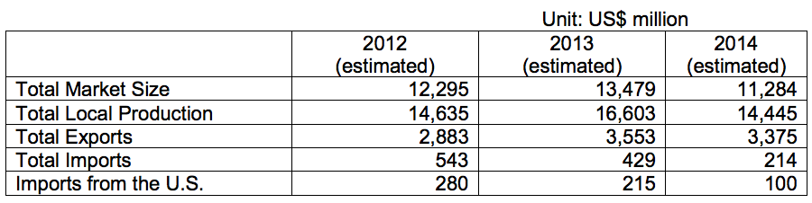
Brazil is a large, dynamic, and rapidly growing market for agricultural equipment. This growth is driven by an extensive commercial farming sector that itself is a major global exporter of agricultural commodities, such as soybeans, coffee, sugar, corn, meat and orange juice.
These estimated value statistics are based on official data on agricultural machinery production units per year, published by the Brazilian Automotive Vehicles Manufacturers Association (ANFAVEA). Figures include only tillers, wheel tractors, crawler tractors, combines, loaders and backhoes. The domestic industry will likely supply most of the growing demand for agricultural machinery. In 2013, according to ANFAVEA, Brazil produced 100,451 agricultural machines, 20% more than in 2012. This is mainly due to a price increase on agricultural commodities, as well as the growth of Brazil’s large and prosperous domestic market for food and other agricultural products. Imports decreased 21% in 2013, reaching 1,716 units. In 2014, it is estimated that imports will decrease by 50% and local machinery production by 13%.
The 2014 estimate for purchases in Brazil’s agricultural machinery market is around US$11 billion. Of that amount, nearly US$214 million will likely be imported, with approximately US$100 million being imported from the United States. Although Brazil’s market for machinery sales have increased considerably in recent years, rising benchmark interest rates and a reduction in interest rate subsidies for farmers mean that machinery sales growth has slowed down in recent months and has been negative since the end of 2013.
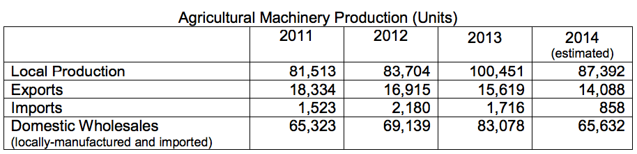
Brazil has 16 industrial production units owned by seven large agricultural equipment manufacturers, including AGCO (Massey Ferguson/Valtra), Agrale, Caterpillar, John Deere, Komatsu, Valtra and CNH New Holland Fiat Allis.
Sub-Sector Best Prospects
Return to top
The strength in Brazil’s agricultural sector means there is a growing demand for agricultural equipment that improves the quality and yield of crops while reducing costs. Moreover, since farms tend to be quite large, the sector is ideal for a wide range of U.S. agricultural machinery and technology. Widespread adoption of advanced commercial seed varieties has also boosted Brazil’s agricultural economy and fits well with equipment offered by U.S. industry.
The top U.S. exports prospects include sophisticated, high-technology self-propelled machinery, post-harvest machinery, including field refrigeration units/storage for tropical fruits, GPS and precision devices, poultry equipment, irrigation equipment, and fertilizers.
Market Entry
When developing a market entry strategy for Brazil, it is critical to understand the market and select an optimal partner. It is important to gain an understanding of the Brazilian context for a product or service: its competitors, standards, regulations, sales channels, and applications. Low to medium dollar equipment -- under US$50,000 -- or equipment with no Brazilian competitor can often be exported to Brazil with a traditional export/distributor model. When there is a Brazilian competitor, importers can seek import duty waivers to reduce import costs. Providing ongoing support to dealers is critical, including visits between U.S. headquarters and installation locations, as are providing trade show support and provisions for equipment demonstration. Performing due diligence on potential local partners is just as important as in any other market. Trade Barriers
Tariff rates and other trade barrier areas remain high for many types of goods and there continues be a strong preference for locally-manufactured products. High dollar value equipment faces significant import duties, making it difficult to compete; especially if there is a Brazilian competitor. While import duties, taxes and restrictions can be prohibitive, it can still be cheaper to import certain items from the USA rather than manufacturing them locally in Brazil.
Brazil is a major market for both finished equipment and parts and components. Due to high tariffs and other barriers to the importation of finished goods, Brazil is also a major market for parts and components for final assembly in local factories. Therefore, another option to minimize obstacles for imported products in Brazil is to establish local manufacturing partnerships, starting with a part-by- part analysis to determine which ones can be built locally. Local content value has to be at least 60% to qualify as Brazilian-made, in order for Brazilian farmers to access federally supported, low interest rate financing (FINAME). US companies can reduce the impact of duties by working in partnership with a Brazilian manufacturer, one that has similar but not directly competing equipment.
Standards
Under the U.S. – Brazil Commercial Dialogue, the U.S. National Institute of Standards and Technology (NIST), in cooperation with its Brazilian counterpart (INMETRO), published A Guide to Brazil’s Agricultural Machinery Compliance Requirements. The guide can be found at: http://gsi.nist.gov/global/docs/BRA_ag_machinery_guide.pdf
Opportunities
Return to top
Agribusiness is one of Brazil’s largest economic sectors. It is well diversified and the country is largely self-sufficient in food. In 2013, agribusiness was responsible for 23% of Brazil’s GDP (US$516 billion). It represented 42% of Brazilian exports (US$101 billion), and the sector employs nearly 40% of Brazil’s workforce.
Brazil’s rise as a leading market for agricultural equipment is the result of the country’s position as one of the world’s largest exporters of agricultural commodities. Soybeans and related products, sugar, coffee, corn, orange juice and meat are Brazil’s leading export commodities. Brazil’s grain production for the harvest period 2012/2013 was 189 M/t, and it is estimated that it will increase to 191 M/t for the 2013/2014 harvest period, up 1%. Soybean and corn account for the majority of grain production. Thus, reflecting a slower but still tremendous demand for agricultural machinery in the last months.
Brazil is also one of the few countries still capable of increasing its planted area. Large portions of Brazil’s cerrado (savannah or prairie region) are still available for cultivation, leaving considerable room for growth of the country’s commercial agricultural sector.
Brazilian farmers enjoy a comparative advantage in many segments, especially in the grain, fruit, fiber, and animal protein sectors. This advantage is due to a temperate climate with plenty of light and the world’s largest surface and ground fresh water reserves, in addition to an excellent quality and diversity of soils and agro-ecological systems.
Trade Event
AGRISHOW 2015 - U.S. manufacturers can present new products, technologies, and production systems to Brazilian buyers at AGRISHOW 2015, one of the largest and most important trade events of its kind in Brazil. AGRISHOW is an excellent platform to showcase state-of-the-art agricultural equipment, irrigation equipment and related services, rural communication systems, precision agriculture technology, pumps, motors, accessories, fertilizers, and related goods and services.
Web Resources
Return to top
AGRISHOW 2015 http://www.agrishow.com.br/en/
Brazilian Automotive Vehicles Manufactures Association (ANFAVEA) http://www.anfavea.com.br
For more market research reports, please visit:
http://export.gov/mrktresearch/index.asp
For more information about export opportunities in this sector, please contact Industry Specialist Vânia Resende: Vania.Resende@trade.gov
Aircraft and Parts
Overview
Return to top
Aerospace is one of Brazil’s most important industries and offers excellent opportunities for U.S. aircraft manufacturers and parts suppliers. Over the last ten years, Brazil has been one of the top 10 destinations for U.S. exports of manufactured aerospace products. In 2013 alone, U.S. exports of aerospace products to Brazil achieved US$6.8 billion.
The industry is led by Embraer, the world’s third largest aircraft manufacturer. In 2013, Embraer delivered 215 aircraft, which consisted of 90 commercial jets, 119 business jets, and 6 military aircraft. The other key player is Helibras, the Brazilian subsidiary of Airbus Helicopters. This company has been producing helicopters in Brazil since 1978 and is positioned as a world class helicopter manufacturer. Every year, the company delivers around 36 helicopters produced in Itajuba, State of Minas Gerais; serving the civilian, military, and law enforcement markets.
Companies interested in supplying to these OEMs in Brazil must undergo a strict qualification process of the company, product, and technology; however, once they have been qualified they will find excellent opportunities. Embraer annually imports over US$2 billion of aircraft components to support its Brazilian operations, and is always open to develop new suppliers with recognized technology and qualification in the aeronautic industry. U.S. companies interested in supplying to Embraer must be registered under the AS9100 series by an accredited Certification/Registration Body as indicated by IAQG (www.iaqg.sae.org/iaqg ). Distributors must be registered under AS9120. And, for tooling suppliers, Embraer requires registration to ISO 9001.
Brazil also offers excellent opportunities for general aviation aircraft and parts suppliers. According to the Brazilian Association of General Aviation (ABAG), Brazil has the world’s second largest executive aircraft fleet and its third largest helicopter fleet. The general aviation fleet grew 6.7% in 2012, reaching a total of 13,965 aircraft. The demand should continue growing over the next few years. The registered number of helicopters in 2012 was 1,893, mostly concentrated in the State of Sao Paulo (690), Minas Gerais (219), and Rio de Janeiro (422). More than one third of the fleet is less than five years old.
Aeronautical maintenance and repair is another sector that should not be overlooked. This sector is currently estimated at US$600 million, and has been enjoying annual expansion of 5-6% over the last few years.
All aeronautical products must obtain certification issued by ANAC, the Brazilian Civil Aviation Agency.
Sub-Sector Best Prospects
Return to top
Executive aircraft
Avionics
Communication systems
Airplane and helicopter parts and components
Opportunities
Return to top
The worldwide trend of airlines replacing larger jets with smaller designs that can fly more efficiently should help sustain Embraer’s role as leader in this market segment, thereby presenting good opportunities to U.S. aircraft parts and component manufacturers. Embraer imports about 50% of its components from U.S. suppliers.
According to the Brazilian Airlines Association (ABEAR), annual demand for air passenger transportation is currently estimated at 113 million, an expansion of 15% over 2012; and is expected to reach 211 million by 2020. Although the country boasts one of the world’s youngest aircraft fleets with an average age of just 6.7 years, significant investments will need to be made in order to meet the rapidly expanding demand. ABEAR’s study indicates that by 2020, Brazil will need to add 526 airplanes to its current fleet of 450.
Web Resources
Return to top
Government of Brazil:
ANAC - National Civil Aviation Agency http://www2.anac.gov.br
SAC – Secretariat of Civil Aviation http://aviacaocivil.gov.br/
SAR – Brazilian Airworthiness Superintendence http://www2.anac.gov.br/certificacao/
Other:
AIAB – Brazilian Association of Aerospace Industries www.aiab.org.br
ABAG – Brazilian Association of General Aviation www.abag.org.br
ABEAR – Brazilian Airlines Association www.abear.org.br
ABIMDE – Brazilian Association of Defense and Security www.abimde.org.br
Airports
Overview
Return to top
Along with the growth of Brazil’s economy, business travel and tourism have also grown substantially in the last few years. Increasing disposable income and growth of the middle class have signaled new opportunities for outbound tourism services, notably in domestic travel. In this context, decision-makers in Brazil have come to realize the need to increase capacity and undertake modernization projects in the country’s airports.
Brazil’s main airports are operating above their capacity limits. From 2003 until 2010, the number of passengers more than doubled (+117%). Investments made by Infraero, the federal agency in charge of airport operations, have not matched these ever increasing passenger numbers. Almost all major airports in Brazil are regarded as having reached a critical level in terms of average occupation, and it is clear that large amounts of capital must be invested quickly.
The Government of Brazil (GOB) estimates that investments of R$7.8 billion (approximately US$3.9 billion) are needed to upgrade the nation’s 13 busiest airports. This amount far exceeds the average annual investments made during the entire previous decade. Given the size of the challenge, the government decided to open the sector to public-private sector partnerships (PPPs).
On February 6, 2012, long-term concessions for three important airports were granted to private investors: Guarulhos International Airport in São Paulo, Viracopos International Airport in Campinas and Juscelino Kubitschek International Airport in Brasília. On November 22, 2013, private investors were awarded concessions at two other major airports: Galeão International Airport in Rio de Janeiro and Confins Airport in Belo Horizonte.
With five important airports partially privatized and master planning currently underway, the airport industry is potentially very attractive for U.S. suppliers of a wide-range of airport- related technologies and services. Additional rounds of PPPs in the airport sector should be expected starting in 2015, after this year’s presidential elections.
Sub-Sector Best Prospects
Return to top
Currently, passengers face long waiting lines at terminals, and airlines often have their requests for additional slots (especially during peak hours) denied. Airport equipment such as kiosks, navigation systems, luggage sorting systems, conveyor belts, inspection devices, signage and sanitary facilities are all in need of modernization. The following map shows the main airports in Brazil and their current level of passenger capacity:
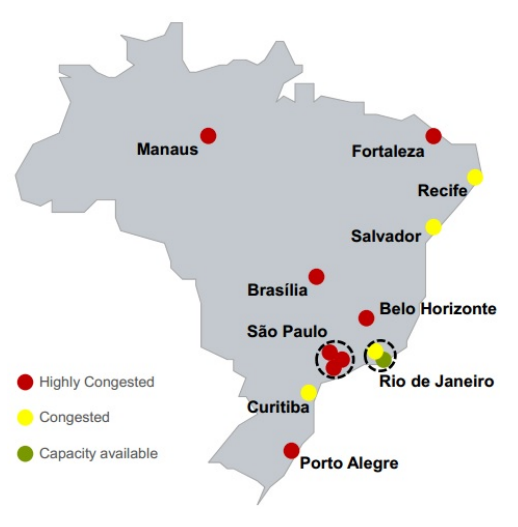
Non-Commercial Revenues
At Brazilian airports, commercial activity at the departure gates is usually limited to small snack shops and/or Duty Free shops. This pattern prompts many passengers to spend time landside, where shopping and restaurant choices are broader; and then rush through security at the last minute, elevating the risk of flight delays for the airlines.
In 2011, non-aeronautical income for airport operators in Brazil amounted to R$570 Million (US$245 million), or 32% of total revenue. There clearly remains potential to be explored, especially in retail operations within departure areas. Specialists believe that retail revenues at the most important airports in Brazil could easily increase to 40%, closer to the global average share of non-aeronautical revenue for airport operators.
Regional Airports
In December 2012, the GOB launched the Logistics Investment Program, a three-part program with specific actions for the airports sector, structured as follows:
Concession of major international airports – São Paulo Guarulhos, Rio de Janeiro Galeão, Belo Horizonte Confins, Brasília and Viracopos. Currently underway; more expected starting in 2015.
Investments in 270 regional airports around the country through a new Regional Aviation Plan. The goal is to restructure Brazil's regional aviation network, thereby expanding air cargo transport supply and improving the quality of airport services for Brazilians residing outside of the large cities.
Commercial exploration of private airports dedicated exclusively to general aviation.
As to the second point above, to strengthen and expand the network of regional airports the GOB is investing US$3.6 billion in the first stage of the Regional Aviation Plan, analyzing 270 regional (of 689 total) airports and heliports. By the end of the program, the government intends for 96% of the Brazilian population to be located less than 100 kilometers away from an airport. Resources will come from the National Civil Aviation Fund (Fnac), with project and investment management by Banco do Brasil. These will be dispersed as follows, by region of country:
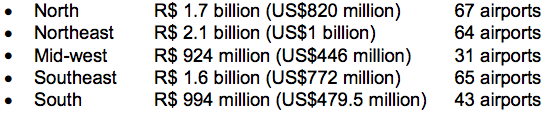
The project will promote the improvement, modernization, reform and expansion of airport infrastructure, both in physical facilities and in equipment; such as repair and construction of ramps and runways, and upgrades in terminals.
Airport Concessions
In February 2012, an auction was held wherein 11 consortia formed by 28 national and foreign companies participated. Three separate consortia won concessions to operate and upgrade the following airports:
São Paulo-Guarulhos International Airport: with a bid of R$16.2 billion (US$7 billion), a 20-year concession was granted to Consórcio Invepar ACSA, comprising Brazilian company Invepar (90% interest, set up by pension funds Previ, Funcef and Petros), Brazilian construction company OAS, and South Africa Airport operator (ACSA, with a 10% stake).
Campinas-Viracopos International Airport: with a bid of R$3.83 billion (US$1.65 billion), a 30-year concession was awarded to Consórcio Aeroportos Brasil, which includes Triunfo Participações (45%), UTC Participações (45%) and France's Egis Avia (10%).
Brasília-Presidente Juscelino Kubitschek International Airport: with a bid of R$4.51 billion (US$1.94 billion), a 25-year concession was awarded to Inframérica Aeroportos, established by Brazilian organization Infravix (50%) and by Argentina’s Corporación America (50%).
The new private operator teams will consist of consortia between a large Brazilian construction and engineering firm, a foreign airport operator, and Infraero. Infraero, as the GOB entity, retains a participation of 49% interest in each of the three airports. Altogether, these three airports comprise 30% of all civil aviation traffic, 65% of all international passengers, and 57% of all air cargo traffic in Brazil.
In December 2012, the GOB approved international airport concessions for Galeão International Airport in Rio de Janeiro (the country's second largest airport) and Tancredo Neves/Confins International Airport in Belo Horizonte, Minas Gerais). The winners of the concessions were announced in late 2013, as follows:
Rio de Janeiro-Antônio Carlos Jobim “Galeão” International Airport: with a bid of R$19 billion (US$8.18 billion), a 25-year concession was granted to Consórcio Aeroportos do Futuro, comprised of Brazilian construction engineering firm Odebrecht and the operators of Singapore’s Changi International Airport.
Belo Horizonte-Confins “Tancredo Neves” International Airport: with a bid of R$1.82 billion (US$78 million), a 30-year concession was granted to Consórcio AeroBrasil, comprised of Brazilian construction engineering firm CCR, Swiss airport operator Flughafen Zurich, and German airport operator Flughafen Munchen.
The U.S. Commercial Service is currently introducing U.S. suppliers of airport equipment and services to a number of these new airport concession winners.
Secondary airports operated by states and cities can be privatized without need to refer to any federal law, regulation or policy. For example, airports in the States of Bahia, São Paulo and Rio Grande do Sul have already been commercialized through private concessions.
Infraero plans major investments to increase the capacity of the 63 airports that remain under its administration. Infraero has also announced that security improvements, like modern X-ray machines for baggage screening, metal and explosives detectors, surveillance cameras, as well as fire-fighting and rescue vehicles will be acquired through public tenders, at a total cost of US$200 million.
U.S. TDA Role in Brazilian Airport Modernization
The United States Trade and Development Agency (USTDA) provides grants to assist Brazilian officials in early investment analysis, training, orientation visits, and business workshops supporting the development of a modern infrastructure; and a fair and open trading environment in the airport industry. These studies are funded with the primary aim of creating additional market opportunities for U.S. companies. The following list of USTDA projects illustrates the in-depth potential of business opportunities in Brazil’s airport industry:
Orientation Visit for Infraero Airport Officials: USTDA funded this group visit to the U.S. for ten airport officials from Infraero to present upcoming procurements related to Infraero’s airport modernization, and expansion projects and investments in security systems.
Cargo Airport Study in Ceará: USTDA awarded a US$480,000 grant to the Ceará State Government to determine technical and financial viability of the construction of a new cargo airport in the state. The study will create an implementation plan for a new facility that will increase the efficiency of air cargo transport in this Northeast state.
Rio Grande do Sul Airports Technical Assistance Project: USTDA provided a US$630,000 grant to the Rio Grande do Sul State Secretariat for Infrastructure and Logistics (SEINFRA) to fund an aviation modernization plan that will support the expansion of aviation transportation services throughout the State.
Confins Master Plan Update: USTDA provided US$573,000 for a technical assistance grant to the Economic Development Secretariat of the State of Minas Gerais to update a Master Plan for the Tancredo Neves International Airport.
Integrated Air Transportation Network Expansion Plan: USTDA is providing a US$240,900 technical assistance grant to the Transport and Public Works Secretariat (SETOP) to develop a system plan for an integrated air transportation network serving the State of Minas Gerais.
Strategic Airport Development Study: In 2013, USDTA provided a grant to the Rio de Janeiro State Government to develop a regional airport and heliport strategic analysis.
Opportunities
Return to top
Brazil’s airport infrastructure upgrades present significant business opportunities for U.S. companies. In addition to providing design and consultancy services, products such as passenger bridges, docking systems, baggage handling systems, handling equipment, check-in conveyors, x-ray integration, baggage claim carousels, X-ray machines and other safety and security equipment are in demand by new concession winners. The Rio de Janeiro consortium, for example, is under a particularly tight deadline to prepare Galeão Airport for the 2016 Summer Olympic Games. Planned improvements scheduled for completion by April 2016 include the construction of 26 boarding bridges, increased cargo storage, construction of a parking lot for over 1,800 vehicles, and the adaption of track systems and patios for code F aircrafts. With the largest airspace of all major airports in Brazil, long-term plans for Galeão include the creation of a new runway and configuring large areas for retail space. Companies with know-how in the areas of airport management and operations are welcome to establish partnerships with local Brazilian companies, to participate in future privatization auctions. To be successful in Brazil, U.S. manufacturers must either be established in the country or have a well-informed local representative. Much like in other industry sectors in Brazil, it is important to have a representative, distributor or system integrator that can offer after sales and maintenance services, replacement parts and repairs.
Whether introducing a product to the market or entering the market with an existing local player, it is necessary to have a coherent market entry strategy to penetrate the Brazilian airport industry.
Web Resources
Return to top
Government of Brazil Resources:
ANAC - National Agency of Civil Aviation www.anac.gov.br
INFRAERO www.infraero.gov.br
Logistics Investment Program http://www.logisticsbrazil.gov.br/airports2
Ministry of Defense www.defesa.gov.br
Other Resources:
Brazil Business http://thebrazilbusiness.com/article/a-snapshot-of-brazilian-airport-infrastructure
ICAO http://www.icao.int/sustainability/CaseStudies/Brazil.pdf
Architecture, Construction and Engineering (ACE)
Overview
Return to top
Brazil is experiencing major growth in the ACE industry. The country has captured global attention as its major cities undergo a construction boom related to the 2014 World Cup and, specifically for Rio de Janeiro, the Summer Olympic Games in 2016.
The Government of the State of Rio de Janeiro estimates that investments in the State between 2010 and 2016 will reach US$ 50 billion, in sectors including infrastructure, construction, transportation and others. Most of these investments will be done under Brazil’s Public-Private Partnerships (PPPs).
Architectural design and engineering projects around the country, from roads and stadiums to airports and retail space, are abundant. Although there is strong competition from local firms, U.S. ACE firms with niche expertise are welcome to do business in Brazil, provided they understand the regulatory procedures for being able to work in Brazil.
More details can be found in the report titled “Opportunities for U.S. Architectural & Engineering Design Services in Brazil”, which can be found at: http://buyusainfo.net/docs/x_6001335.pdf
Market Challenges
In order for U.S. ACE companies to do business in Brazil, there are two general options. The first is for a U.S. company to partner with a local firm that is licensed to provide architectural/engineering services in Brazil. As with most services imported to Brazil, the Brazilian firm using the service will have to pay additional costs of up to 40% of the price of the services rendered. To avoid this process, a U.S. firm may prefer to set up a business in Brazil directly and obtain the license to provide such services in Brazil. This option works for U.S. firms looking to do business in Brazil over the long-term, as starting a business in Brazil and obtaining the necessary approvals to do architectural or engineering work is not a short-term process.
According to the Ministry of Development, Industry, and Foreign Trade (MDIC), Brazilian authorities have significantly reduced the amount of time required to grant various licenses and registrations over the past few years. Having service providers such as lawyers, customs brokers and accounting firms is essential to understand how the business environment works. They can assist once a company has chosen which method of market entry works best, such as opening a subsidiary or establishing a joint-venture partnership.
More information on the regulatory process can be read here:
http://buyusainfo.net/docs/x_1475447.pdf
Sub-Sector Best Prospects
Return to top
Government Investments
Best prospects in the architectural, engineering and construction sectors can be found in areas such as commercial real estate, airports, ports, hotels, hospitals, and include:
Urban projects: ports (e.g., the Port of Rio re-development - design of the walkways, buildingsalong the port), airports (privatization brings about opportunities for design work and other projects), traffic, transportation, parking, sporting venues
Airport design
Real estate, new or retrofit
Industrial, new or planned plants extensions
Hospitality, including new or refurbished hotels, and transformation of residential buildings into hotels
Healthcare (new hospitals and upgrades to existing)
Low income housing projects planning;
Lighting, including residential, commercial, industrial, urban (LED is increasingly gaining popularity in Brazil)
HVAC
Furniture design
Drywall technologies
Landscaping, including gardens, golf courses, hotels, residential, commercial, industrial
Sport venues design and equipment, such as golf courses
Building Information Modeling (BIM) Process.
Many ACE projects are now being required to contain sustainable or “green” content, according to LEED, AQUA and other certification programs.
Despite the bureaucratic hurdles, many U.S. and international ACE companies find business in Brazil because of the high level of private sector and government investments in infrastructure. Also, with the growth of the country, residential housing is a booming sector, including both upscale residential projects and low income housing. The Government of Brazil (GOB) created an initiative called “Minha Casa, Minha Vida”, a program to build homes for Brazil’s working class over the next several years. This US$15.5 billion program, funded primarily by the federal government, aims to help alleviate the country’s estimated 6 million-unit housing deficit. By the end of 2013, 1.4 million homes were built. By 2014, the GOB will reach the established goal of 2.75 million homes built through this program.
The Brazilian Equipment and Maintenance Technology Association (Sobratema) states that the infrastructure sector will receive an estimated US$800 billion in investments from 2013 through 2017. The sum will be divided between the energy and infrastructure sectors, with a larger amount allocated for infrastructure development such as roads, rail, ports and stadiums:
US$66.5 billion will be invested over 25 years in building 7,500 km of highways and 10,000 km of railways.
US$3.15 billion will be invested in port terminals.
US$1.1 billion will be invested in ports.
In the airport sector, five of the major airports have been recently privatized: Brasília, Guarulhos (São Paulo capital), Viracopos (Campinas, state of São Paulo), Antônio Carlos Jobim “Galeão” (Rio de Janeiro capital) and Confins (Belo Horizonte, capital of Minas Gerais State). The GOB will invest US$3.60 billion in 270 airports around the country, with the goal that 96% of Brazilians will be no more than 100 km from an airport. (See this #Chapter’s Airport Industry best prospect report or online at http://www.buyusainfo.net/docs/x_8093199.pdf)
The GOB is also planning to ease labor laws and regulations in order to attract more investment. The investment forecasted over the upcoming years in infrastructure is approximately US$400 billion. This does not include investments already in place that are directly related to the 2014 World Cup and the 2016 Olympic Games.
The future outlook seems positive, especially due to the model outlined in Public-Private Partnerships (PPPs), through which concessions and privatizations in many infrastructure projects will receive further investments. These major investments will bring many opportunities for ACE firms that are capable and ready to do business in Brazil.
According to the Rio Convention and Visitor´s Bureau, there are 259 new hotels planned in Brazil to handle increasing numbers of visitors for the World Cup and Olympic Games, as well as the growth of the tourism sector throughout the country. This number represents more than 40% of the market for new hotels, vs. 331 new hotels in the rest of Latin American countries combined.
Large hotel companies such as Accor (six new hotel projects), Hilton, Hyatt, InterContinental Hotels Group (IHG), Groupe du Louvre, Marriott and Starwood Hotels & Resorts are all investing in high class properties. In 2015, a Ritz-Carlton Hotel with 130 rooms and suites will open its doors, and a new Grand Hyatt Hotel with 436 rooms is planned in Rio’s Barra da Tijuca area.
The Olympic Games
In August and September of 2016, Rio de Janeiro will host the first-ever Olympic Games in South America. This event will generate numerous investment and business opportunities for U.S. companies in several sectors. The main projects include:
Logistics upgrades at seaports
Modernizing/enlarging the two Galeão International Airport terminals (increasing the airport's capacity from 15 million passengers per year to 25 million) at US$2.5 billion The widening of highways to accommodate “Olympic lanes”
Port of Rio revitalization to include a new 30,000 square meter leisure area featuring bars, restaurants, an amphitheater, museum, aquarium, a multi-use space and parking
Port dredging
Two new subway lines (US$1.8 billion)
Bus Rapid Transit (BRT) system (US$1billion)
Housing projects (including low income housing)
Water sanitation projects.
Before the United Nations Rio +20 Conference was held in June 2012, it was estimated that there were approximately 32,000 hotel rooms in Rio to accommodate an estimated 50,000 conference attendees. However, partly because of the lack of quality hotel space and the high prices charged at the time, a number of official delegations cancelled their participation at the last minute.
Partly as a result of this crisis, and the expected turnout of tourists in many major Brazilian cities, the government is providing tax incentives that will create opportunities for refurbishing, building, acquiring or operating hotels. In addition to the new hotels, several hotels are also being refurbished and upgraded. There are also projects in the Northeast region (residential, hotels, industrial) and in other regions, namely Santos (São Paulo) region, where residential, hotel, and infrastructure projects such as underwater tunnels are underway, among others.
Also, port construction projects are underway in locations such as Porto do Açú in Rio de Janeiro State.
Note also that funding for projects is guaranteed with a significant appropriation by the GOB under its “Plan for Growth Acceleration” (PAC). This program encompasses investment in three major areas:
Logistics infrastructure (highways, railways, ports and airports)
Energy infrastructure (generation and distribution of electricity, production, exploration and transportation of petroleum, gas and biofuels)
Social and urban infrastructure (sanitation, housing, subways and urban rail).
The Rio de Janeiro Organizing Olympic Committee began its procurement process related to the Olympic Games in early 2014. For further information or to pre-register as a supplier, please visit http://portaldesuprimentos.rio2016.com/en/ . Companies that are pre-registered through the portal will receive information as specific bids are announced.
Opportunities
Return to top
Although U.S. architectural firms face a competitive environment, many U.S. firms have been winning contracts. For example, U.S. firms have recently won design contracts in Rio de Janeiro related to the upcoming 2016 Olympic Village, the new golf course to be used for the Olympics, and the new Museum of Image and Sounds, to be relocated to the Copacabana area in Rio. U.S. engineering equipment providers have also been successful in the Brazilian market, several with a local presence, such as Caterpillar, John Deere, and Terex, among others.
However, many large procurement projects that involve construction and architectural design services are won by Brazilian engineering and construction companies such as Odebrecht, OAS and Camargo Correa, among others. Thus, the U.S. Commercial Service recommends that U.S. architectural and engineering firms with no physical presence in Brazil partner with Brazilian architecture, engineering and constructions firms before bidding directly on projects.
Brazil recognizes that in order to continue growing effectively, the nation needs to bring in expertise and technology that is currently not available or is in short supply in Brazil. This is where U.S. companies can play a role.
For a better understanding of the regulatory environment that architectural design firms face in Brazil, please read our report on licensing at: http://export.gov/brazil/games/eg_br_024085.asp
Web Resources
Return to top
U.S. Government Resources:
U.S. Commercial Service Brazil World Cup and Olympics reports: http://export.gov/brazil/games/index.asp
Government of Brazil Resources:
Brazilian Council for Architecture and Urbanism (CAU) http://www.caubr.gov.br/
Other:
Brazilian Association of Architectural and Consulting Engineering Companies (SINAENCO)
Brazilian Association of Architecture Firms (ASBEA) www.asbea.org.br
Brazilian Association of Engineering Consultants (ABCE) www.abceconsultoria.org.br
Brazilian Equipment and Maintenance Technology Association (Sobratema) www.sobratema.org.br
Federal Council for Engineering and Agronomy (CONFEA) www.confea.org.br
Rio Convention & Visitors Bureau http://www.rcvb.com.br/?/2/default.html
Automotive
Overview
Return to top
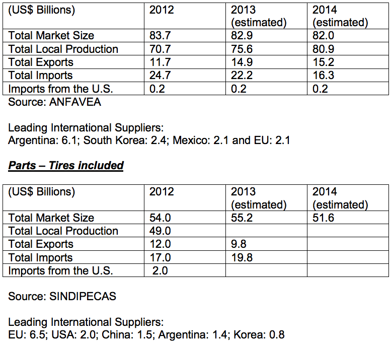
With annual sales of 3.8 million units in 2013, Brazil is currently the world’s fourth largest market for automobiles, behind China, USA and Japan. Industry sources expect Brazil’s market to double its size by 2025, with significant sales increase in Korean, Japanese and Chinese brands. The domestic production of automobiles, including buses and trucks, is expected to reach 5 million units in 2017, much of which will be exported.
Net sales revenue of the automobile industry in Brazil is about US$ 84 billion, which corresponds to nearly 19% of the country’s GDP. Despite the increasing presence of new OEMs in the market, sales of Fiat, Ford, GM and VW models account for 67% of the total market.
The Automobile Industry Association estimates for 2014 are that domestic sales will increase by 1.1%, local production will grow by 0.7%, exports will increase by 2.1% and as a result of the automotive policies in place, imports will continue their downward path. Credit restriction, lower income growth rates, the 2014 World Cup in Brazil, presidential elections in October, and Carnival holidays in March, instead of February, were some of the factors attributed to the expected low sales growth rate this year.
Nonetheless, the domestic demand for automobiles has drastically increased in the past years, from 1.6 million in 2005 to 3.8 million in 2013, as government programs and economic stability increased consumer spending and raised large portions of the population upwards in the consumer market. Credit availability and government incentives in the automotive sector were also essential for the market growth. The ratio of inhabitants per vehicle in Brazil dropped from 11 at the end of the 1990s to 5.5 currently, confirming that there is room for significant market growth.
Because of the importance of the automotive industry to Brazil’s economy, its job creation capacity and the political influence of the OEMs, government policies have traditionally protected Brazil’s domestic auto industry from international competition. As an example, in 2011 the Brazilian Ministry of Development, Industry, and Foreign Trade (MDIC), increased the tax on industrial products on imported automobiles outside of the Mercosul trade zone, by thirty percent. In some cases, higher IPI, the 35% import tax and other related taxes, increase the price of imported cars by over 100%. The effect of higher prices of imported vehicles is reflected in the 35.2% reduction in sales of imported cars in 2012 and 13.4% in 2013, after having reached a record level of 853,000 units in 2011. Sales of the Chinese models Chery and JAC, as well as the Korean Kia, were the most hurt. On the other hand, domestic purchases of imported luxury models as BMW, Land Rover and Audi increased by 30% in 2013. It is important to note that Brazil has free trade agreements with the Mercosur countries and Mexico. In 2011, VW, GM, Ford and Fiat, which all have manufactured automobiles in Brazil for many years, were responsible for 37% of the supply of imported vehicles. These OEMs complement their line of locally produced vehicles with imported models, mostly from Argentina and Mexico.
The domestic demand for automobiles consists mostly of basic hatch and mid-size models, in contrast to the USA market, which has high demand for mid-size and luxury sedans.
Current Market Trends
The automotive industry in Brazil is predominantly driven by the domestic market. The “Made in Brazil” models usually feature low embedded technology, yet are among the most expensive in the world. Most of the innovations in the industry are related to the introduction of embedded electronics, safety and design equipment.
In order to further stimulate the automotive industry and attract investments, in October 2012, the Brazilian Government issued a program, known as the Inovar Auto (Decree 7819), designed to support the automotive industry’s technology development, innovation, safety, environmental protection, energy efficiency and quality improvement. In order to benefit from tax reduction incentives, OEMs are expected to invest in research and development in Brazil and to achieve production of more economical, lower priced and safer vehicles. The Inovar Auto program is valid until December 2017, and benefits both those OEMs that have already established manufacturing plants in country and other international OEMs whose new production plant projects have been approved by the government. Companies that apply for Inovar Auto commit to having their Made-in-Brazil models achieve increased energy efficiency levels (i.e. an average drop of 12% in fuel consumption).
As far as automobile safety is concerned, legislation of 2009, determined that as of January 2014, all vehicles made in Brazil be equipped with air bags and ABS brakes. To comply with these safety requirements and introduce the new security devices, the tier 1, 2 and 3 suppliers, which include companies like Bosch do Brasil, Continental and TRW have invested from US$ 250 to 400 million.
Sub-Sector Best Prospects
Return to top
The Inovar Auto program initiated a new investment cycle in the automotive sector in Brazil, through which the industry will produce world class, high value-added products. Some of the expected results of the program are that the OEMs will increase their investments in high productivity equipment and processes, which allow lower energy consumption; and in precision measurement and testing equipment, quality standard certifications, training, and increased use of light materials, so as to reach the emission reduction target of 18.84% of CO2/Km. It is also expected that OEMs will increase the amount of automobile project designs in Brazil.
The industry is also evaluating new propulsion technologies, which include the use of flex fuel engines in hybrid vehicles and application of ethanol in fuel cells. In order to develop technologies for producing electric and hybrid vehicles in Brazil in 2017, ANFAVEA requested temporary tax exemption on a limited number of imported electric and hybrid automobiles, as well as on repair parts, until 2016. Some developments are underway to introduce electric vehicles in Brazil.
Opportunities
Return to top
Increased taxes on imported vehicles and Inovar Auto Program incentives are attracting substantial automotive investments. Industry experts reported that eight OEMs (Audi, BMW, Chery, Foton, JAC, Land Rover, MB and Sinotruck) will build their first automobile plants in Brazil from 2014 to 2016, which corresponds to investments of R$5 Billion (US$2.12 billion), whereas the already established Fiat, Honda and Nissan will build new plants.
There are currently approximately 40 automobile manufacturing plants in Brazil, as follows:
Automobile Plants: (Toyota, Ford, GM, VW, Fiat, Mitsubishi, Hyundai, Peugeot, Citroen, Mercedes Benz, Renault, Nissan, Honda);
Truck Plants: (Mercedes Benz, Agrale, Iveco, Ford, International, MAN, Scania, Volvo);
Bus Plants: (Agrale, Iveco, MAN, Mercedes Benz, Scania, Volvo and the newly established DAF Trucks).
Nearly all Brazil-made cars are flex fuel, and run on ethanol, gasoline or any combination of the two fuels. Brazil’s automotive parts industry consists of Brazilian owned (27% of the sales value) and internationally owned (73% of the sales value) companies. There is a significant presence of U.S. automotive parts suppliers, including Delphi, Visteon, TRW, Dana, Arvin-Meritor, Cummins Engines, MWM-Diesel, and Eaton.
Inovar Auto requires that several production processes be performed in Brazil and also establishes local content requirement for automotive parts. There are currently discussions about the implementation of an Inovar Autoparts program, which will, among other items, consist of financial support to local automotive parts manufacturers and include measures to attract direct investments to the sector. According to the National Automobile Industry Association (ANFAVEA), the process of tracking the origin of imported automotive parts is expected to start in the next few months. This should help Brazil’s auto parts industry identify the OEMs needs and allow them to substitute imported parts with local production.
Web Resources
Return to top
Trade Shows
International Automobile Show (Salão Internacional do Automóvel)
October 30 – November 9, 2014 - Sao Paulo, Brazil www.salaodoautomovel.com.br
Traditional biannual show in São Paulo that displays the latest automobile models and attracts significant numbers of automobile fans.
Automec Heavy and Commercial
April 1 – 5, 2014 - Sao Paulo, Brazil http://10times.com/automec-pesados-comerciais
Automec Pesados & Comerciais displays technologies & equipment for truck and bus manufacturing, truck related products & services, batteries & auto electronics, engines, body parts, etc.
Automec
April, 2015 - Sao Paulo, Brazil
www.automecfeira.com.br/en/Home/
Automec displays technologies & equipment for truck and bus manufacturing, truck related products & services, batteries & auto electronics, engines, body parts, etc.
Beauty and Cosmetics – Personal Care, Fragrances and Cosmetics (CT&F)
Overview
Return to top

Total Market Size = US$16.530 billion
Data Source: Brazilian Association of the Cosmetic Toiletry and Fragrance Industry (ABHIPEC)
Total Local Production: US$16.527 billion
Total Exports: US$693 million
Total Imports: US$696 million
Imports from U.S.: US$90 million
Between 2012 and 2013, both local production and exports of Brazilian beauty and cosmetics goods grew about 13 percent, signaling both opportunity for and strong domestic competition against U.S. exporters. These impressive results attest to the vitality of Brazil’s domestic beauty/cosmetics sector, the growing demand by Brazilian consumers for high-quality, innovative imported products, and the country’s emerging dominance in key foreign markets.
Besides high demand in Brazil’s domestic market, the country’s emerging middle class is gaining economic and political power. More recently, the GOB’s investment in social programs is contributing to the country’s role as worldwide industry leader and, most notably, fueling women and minority entrepreneurship. High technology standards, a strong “Brazil brand” cache, and highly-qualified industry professionals are also contributing to the country’s world-leader status in this dynamic sector.
Like most foreign markets, Brazil requires that U.S. exporters have a high degree of quality and management certification, such as ISO 9000 and ISO 14000. In addition, U.S. suppliers must demonstrate clear concern for social responsibility and environmental conservation. There is an on-going demand for natural and organic products, packaged in recyclable materials.
Hair care products are the largest segment of the Brazilian cosmetics and toiletries market. Shampoo sales, both imported and locally made, constitute about 50 percent of domestic sales; they are divided evenly between Brazilian and well-known multinational suppliers.
Sub-Sector Best Prospects
Return to top
While the personal hygiene market in Brazil constitutes the majority of total sales in the cosmetics and toiletries sector, the cosmetics sector shows the biggest potential in Brazil. New and improved imported and domestic product lines for teenagers and women between the ages of 35 and 60 have especially good potential.
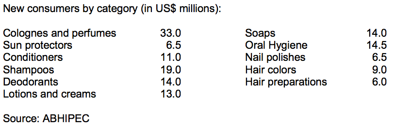
Best prospects for U.S. exports to the Brazilian cosmetics and toiletries market include: bio-cosmetics, ethnic products, and cosmetics for men. It is notable that Brazil is the world’s largest market for men’s personal care products.
Opportunities
Return to top
The United States is Brazil's largest cosmetics supplier, mostly supplying mass- market cosmetics known for high quality and premium pricing when compared to the mass-market products produced domestically. Brazilian companies import all types of U.S. cosmetics, which are then resold to all segments of the population.
Major Trade Shows:
- FCE Cosmetique – www.fcecosmetique.com.br
- Hair Brasil- www.hairbrasil.com.br
- Beauty Fair- www.beautyfair.com.br
Web Resources
Return to top
Government of Brazil:
- Brazilian Agency for Sanitary Health
Other:
- Brazilian Association of the Cosmetic Toiletry and Fragrance Industry
For more information about export opportunities in this sector, contact Industry Specialist Denise Barbosa: denise.barbosa@trade.gov
Chemicals
Overview
Return to top
Net sales for the Brazilian chemical industry in 2013, taking into account all segments, were US$ 162.3 billion, a 10.7% increase over the prior year. Brazil is the world’s sixth-largest chemical industry, surpassed only by (in order) China, USA, Japan, Germany and South Korea; and is forecast to surpass South Korea by 2020. Rounding out the top 15 are India, France, Italy, Russia, UK, Taiwan, Netherlands, Spain, and Switzerland.
According to the Brazilian Chemical Industry Association (ABIQUIM), net sales for Brazil’s chemical industry have increased 292% over the past 19 years, growing from US$41.4 to US$162.3 billion. Imports continued a year-over-year increase, reaching US$46.4 billion. However, Brazil’s chemical industry trade deficit continues, with exports from the country reaching only US$14.2 billion in 2013. Countries from Mercosul and North America were the main destinations for Brazilian chemical exports in 2011: Argentina, Paraguay and Uruguay imported US$3.2 billion, while the United States, Canada and Mexico bought US$3 billion.
Brazil imported a volume of 37.5 million tons of chemical products in 2013, comprised of the following:
- Potassium Chloride
- Insecticides
- Urea (with nitrogen content >45% by weight)
- Ammonium Dihydrogenorthophosphate
- Drugs (blood fraction)
- Drugs with heterocyclic composts
- Human antibodies
- Fungicides
- Fertilizers / Fertilizers with nitrogen and phosphorus
- Glyphosate including the monoisopropylamine salt
BRAZIL IS THE 6TH LARGEST CHEMICAL INDUSTRY IN THE WORLD


The country has 2,500 chemical companies operating, comprising 2.8% of the Brazilian GDP. Brazil’s chemical industry is responsible for 390,000 direct jobs and more than two million indirect jobs.
Sub-Sector Best Prospects
Return to top
The most active chemical sector segments in Brazil in 2013 in net sales (US$ billions) were:
- Chemical products for industrial production US$ 72.2
- Pharmaceutical products US$ 26.5
- Fertilizers US$ 16.1
- Toiletries, perfumery and cosmetics US$ 14.7
- Cleaning products US$ 14.8
- Agrochemicals US$ 10.4
- Paints and varnishes US$ 4.2
- Synthetic and artificial fibers US$ 1.2
- Others US$ 2.2
Opportunities
Return to top
As trade deficit statistics indicate, Brazil is by no means self- sufficient in the chemical sector. Imports have been increasing significantly as follows (in US$ billions):

As of May 2014, Brazil has already imported US$17.4 billion of products and raw materials for the year, adding to the projected deficit of US$33.5 billion.
Brazil imported a total of US$ 12.5 billion from North American suppliers in 2013, 80% (US$ 10 billion) of which came from U.S. companies:

While an excellent market for U.S. chemical products, Brazil’s chemical sector mounts several challenges to importers, including:
Product registration: Several chemical products, including raw materials, must be registered with governmental agencies, such as the Brazilian Federal Police and the Brazilian Army; and may also require registration with municipal, state and federal agencies.
Import taxes and duties: Brazil’s costly and complex cascading tax system and import duties can be challenging for some U.S. chemical companies. However, Brazilian chemical importers and customers trust in the quality of U.S. chemicals and, in some cases, may opt to pay more for U.S. products. Suppliers in Germany, France and UK are strongest competitors for United States exporters.
Competition from Mercosul: Since Brazil is part of Mercosul, its fellow member countries Argentina, Paraguay and Uruguay can export to Brazil with lower or no taxes.
Mercosur International Agreements: Chemical suppliers within Mercosur member countries benefit from several unilateral and regional international agreements. Brazilian suppliers, meanwhile, reap similar benefits through the country’s unilateral trade agreements with five Latin American countries.
Web Resources
Return to top
Brazilian Chemical Industry Association (ABIQUIM) www.abiquim.org.br
Computer Hardware
Overview
Return to top
Brazil is the second-largest IT market among emerging economies, after China; and continues its stable, consistent growth trend, particularly when compared to other BRIC countries (Brazil, Russia, India and China) relative to its size, economic strength, and growth potential.
The IT segment in Brazil remains the seventh largest market in the world; however, it is forecasted to reach fifth by 2022.
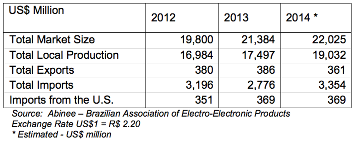
The figures in the table reflect a very positive scenario for Brazil. Among all the BRIC countries, Brazil is second just behind China in terms of investments in information technology. The 2016 Summer Olympic Games in Rio de Janeiro will also prompt further IT investment in the country to support infrastructure construction facilities, transportation, and security.
Sub-Sector Best Prospects
Return to top
The Brazilian Electric -Electronic Association (ABINEE) has indicated that the IT industry will continue positive growth, andin 2014 should continue as the “Year of Tablets and Smartphones”. According to ABINEE, sales growth of the entire electronic sector was driven by such new consumer items available in the market. With the increasing use of portable devices, Brazilian companies are adopting the Bring your Own Device-concept (BYOD) IT management strategy, which will also be of great benefit to the industry.
The Government of Brazil (GOB) has created mechanisms and incentives to attract manufacturers of tablets to install production plants in Brazil (Law 12.507).
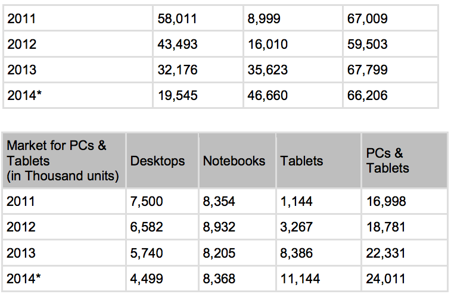
Storage equipment will continue to be in demand in Brazil, as the volume of data rises. There are increasing numbers of companies seeking information and knowledge on cloud computing, Platform as a Service (PaaS) and Infrastructure as a Service (IaaS); consequently, the need of servers and storage equipment will follow. Governments and private entities use such technology for their surveillance cameras, content management for libraries and museums, as well as digitalization of the judicial system. The market for personal storage devices such as Network Access Storage (NAS) for consumers will also expand. Demand for 3-D printing is also expected to increase within the next three years according to trade sources.
Market Entry
The majority of computer distributors in Brazil are national companies; however, foreign distributors have been partnering with these existing distributors of late, in order to become more competitive and satisfy local presence requirements.
Foreign companies should consider pursuing a distribution or representation agreement with well-established local companies, who are capable of navigating the business environment in Brazil and have easier access to potential end-users. Furthermore, foreign companies interested in participating in public bids must have an established local representative.
Opportunities
Return to top
In addition to the benefits of manufacturing “tablets” in Brazil, since 2007 the GOB’s Ministry of Education has been investing in PROINFO, a program to promote technology as an important classroom teaching tool. The program includes installations of technology labs in the public schools, laptops for teachers and students, digital boards, projectors and tablets. The budget also allows for teacher training. In 2013, the GOB will continue to invest in the program.
Brazil is considered the fifth largest personal computer market in the world, driving Latin America’s PC market with a 41.5% share. Brazil is forecasted to continue experiencing the largest growth rate in this region, through 2014.
Brazil's trade policy has clearly favored domestic production of PCs over the importation of complete systems. Tariffs for complete PC systems remain high, and despite policy changes, the trend will likely continue, compelling foreign vendors to establish manufacturing facilities within Brazil. GOB policy also stipulates PC manufacturers need to maintain a minimum ratio of 3% locally-driven R&D investment compared to revenue. This encourages domestic manufacturers to innovate and remain competitive against foreign products.
A challenge for foreign companies will be the “Lei de Preferência” (Law of Preference – Decree 7.903/2013) that gives 25% of advantage to locally produced products when participating in public bids.
Web Resources
Return to top
- ABINEE: www.abinee.org.br
For more information, contact Industry Specialist Patricia Marega:patricia.marega@trade.gov
Computer Software and Services
Overview
Return to top
The Brazilian IT industry is considered the seventh largest in the world, with an investment of US$61.6 billion, a 15.4% increase compared to 2012. According to a research done by IDC (International Data Corporation) in partnership with Brazilian Association of Software Companies (ABES), investments made in software and IT services reach US$25.1 billion, a 10.1% increase compared to the previous year.
Given the forecast for growth of the Brazilian economy over the next several years, Brazilian IT spending should increase at a healthy pace. The most significant trend in this sector is the increase of data communication in mobile devices (smartphones and tablets), which is expected to continue over the next few years. Infrastructure investments in preparation for the 2016 Summer Olympic Games in Rio de Janeiro are expected to drive new spending on software. As a result, Brazil’s software services market, which already has the fastest rate of growth in Latin America, is projected to exceed 10% per year until 2015.
According to ABES, Brazil's large and growing economy and technology adoption make it an outstanding market for technology and service providers seeking opportunities for global expansion.
The services and financial sectors represent almost 50% of the user market, followed by the telecom, industry, trade, government, oil and gas, and agricultural sectors. The software market consists of nearly 10,300 companies dedicated to the development, production and distribution of software and services. Of the segment in software development and production, 93% can be classified as small and medium sized enterprises.
Sub-Sector Best Prospects
Return to top
There is an increasing number of companies seeking information and knowledge on cloud computing. Demand for international collaboration, security, CRM, storage, and productivity will accelerate in the coming years. Virtualization and consolidation of infrastructure investment will continue as a priority in business. New solutions will lead to a profound change in the operation and delivery of IT solutions as suppliers will release specific and targeted offers for the cloud environment in 2014, with the rapid proliferation of Platforms as a Service (PaaS) and Infrastructure as a Service (IaaS). It is expected that the IT market related to cloud computing will reach US$560 million and investments in Big Data will reach US$394 million with a special focus on training.
Mobile data will also continue to grow at exponential rates. Some service solutions carriers will grow 4G-based solutions, which will make expansion of the mobile network critical. Data Centers will modernize or increase their current capacity in the coming years, and “Big Data” may become the challenge for solutions providers. Telecom companies are already using B/OSS (Business/Operations Support Systems) software solutions to help increase profitability, while simultaneously optimizing development and deployment costs. The well-developed financial sector seeks cyber-security solutions to prevent electronic fraud.
The demand for telecommunications software is expected to grow as a result of the convergence of data, voice, and conventional and mobile telecommunication. The most significant trend in this sector is the increase of data communication in mobile devices, such as tablets and smartphones. Continued growth is expected over the next few years.
The current trend in Brazil is for consolidation of technologies for IT, infrastructure, network and telecommunications. In this regard, as Brazilian IT companies mature, they are attracting the interest of competitors and capital investment funds.
Within the software segment, 45% of the market represents purchases of enterprise applications such as CRM, ERP or SCM solutions; while systems infrastructure solutions, such as platforms for administrating and running software assets, contribute 36%.
With the expansion of broadband in Brazil, E-commerce is becoming part of the daily routine of Brazilian companies. The sectoris expected to grow 35% this year, and it is expected to double by 2017, reaching sales of US$25 billion.
Within the last decade, more than 30% of the population joined the middle class, a group with better access to information and consumer products than ever before. It is projected that by 2015, more than three million homes will obtain their first computer and the number of households with at least one computer should exceed 30 million. The number of notebooks is greater than those of desktops in the Brazilian market. The demand will motivate the launch of more specific software applications.
Opportunities
Return to top
The majority of computer distributors in Brazil are national companies, but in recent years foreign distributors have entered the market, joining Brazilian dealers/re-sellers to become more competitive.
A strong financial partner is important for computer hardware/software distributors in Brazil; therefore, a number of Brazilian distributors are collaborating with banking partners to solidify their financial position. The increased financial resources of these distributors allow them to offer better financing and improved payment terms to their re-sellers. In Brazil, due to high interest rates on loans, this ability is a distinct competitive advantage.
As the number of resellers, value-added resellers (VARs), and agents grow and their portfolios expand, more distributors will adhere to the two-tier distribution model. Below is a description of the one and two-tier distribution models that operate in Brazil.
Distribution Models
Under the one-tier distribution model, the supplier delivers the product to the end-user via agents, VARs, and systems integrators. The supplier does not rely on a distributor to supply re-sellers, who are in direct contact with the end-users. In special cases, the supplier may sell directly to the end-user.
The two-tier distribution model is the same as the one-tier model, but with an additional intermediary. Here, the supplier provides the product to the distributor, who then passes the product to an intermediary distribution channel such as a VAR, agent or systems integrator; each of whom has access to end-users.
In August 2012, the Government of Brazil (GOB) launched the “TI Maior” project (“Greater IT”) in which the government will invest R$500 million (US$227 million) in innovation, in-country software development and information technology by 2015. Of this amount, R$40 million (US$18 million) will be devoted to “start-ups”.
A challenge for U.S. companies is the “Lei de Preferência” (Law of Preference; Decree 7.174) that gives a cost preference of up to 25% to locally developed solutions when participating in public procurement bids. Developers of software must undergo a certification process in order to prove the local content of their solutions.
Server virtualization, which is already a reality in medium and large enterprises, will continue growing in 2014. In order to absorb a volume of data that is growing at a rate of 30% per year, the proliferation of virtual machines, and the increased use of new applications such as CRM and business intelligence, Brazilian companies will invest heavily in memory and storage solutions.
The increase in data traffic arising from the expansion of virtualization and the use of mobile devices in corporate networks will positively impact the market for switches and wireless LAN networks. The security of mobile devices will also become a priority. IT vendors could seize opportunities created by the World Cup and Olympic Games, especially for software related to command & control centers and intelligent transportation solutions.
Web Resources
Return to top
Brazilian Association of Software Companies http://www.abes.org.br/
Ministry of Science, Technology and Innovation http://www.mct.gov.br
For more information contact Industry Specialist Patricia Marega:patricia.marega@trade.gov
Defense
Overview
Return to top
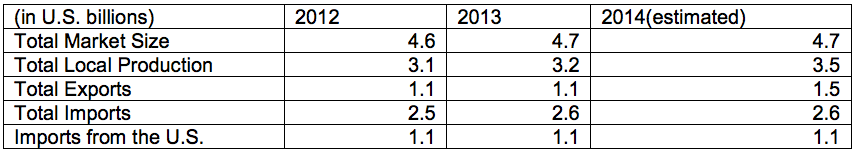
In 2013, the Government of Brazil (GOB) published the National Defense White Book (LBDN) which clarifies Brazil’s defense activities and updates the country’s 2008 National Defense Strategy and National Defense Policy. The LBDN is a key document, in which the Brazilian defense authorities describe and prioritize Brazilian defense related projects. According to the Ministry of Defense, resources for funding and investment for the Armed Forces have grown 103% in the past six years. Since 2008, when the GOB established the National Defense Strategy (END), the amount has increased from R$9.6 billion (US$4.2 billion) to R$19.6 billion (US$8.5 billion) as of 2014. Despite this fact, the Armed Forces are not receiving adequate budgets in 2014 to continue with their programs.
Sub-Sector Best Prospects
Return to top
The 2014 draft budget law foresees R$72.8 billion, approximately US$31 billion for the defense sector. From this total, 73% are for expenses with staff. The Brazilian Navy requested R$12 billion (US$5.2 billion) for its programs in 2014, but expects to receive R$5.5 billion. The Brazilian Army and the Brazilian Air Force anticipate R$5.8 billion and R$4.8 billion, respectively.
According to the Defense Articulation and Equipment Plan (Plano de Articulação e Equipamento de Defesa; PAED), the Ministry of Defense has identified and is coordinating the following priority projects for the armed forces:
Brazilian Navy: The Brazilian Navy has seven priority projects to be implemented by 2031, valued at R$211 Billion (US$119 Billion). The most important navy opportunities for U.S. companies include:
Navy Nuclear Program: In addition to the continued development of Brazil’s nuclear submarine program, the Navy’s program also includes: analysis and development of the nuclear fuel cycle in submarines, certification of the Navy’s nuclear-electric energy generation lab (LABGENE), construction of a prototype reactor, and an upgrade to the Navy’s Technological Center in São Paulo
Navy Modernization Program: This is an extensive program that includes the gradual replacement of naval air and sea combat platforms. Some of the projects include:
Submarine Development Program (Programa de Desenvolvimento de Submarinos; PROSUB), program to develop non-nuclear submarines
Surface Vessel Procurement Program (Programa de Obtenção de Meios de Superfície; PROSUPER), a program for five, 1,800-ton ocean patrol vessels, five 6,000-ton frigates and a single support vessel, all of which are to be built locally in cooperation with Brazilian companies according to Brazilian law and offset requirements
Amazon Blue Management System (Sistema de Gerenciamento da Amazônia Azul; SisGAAz), a Navy program for the surveillance and monitoring of Brazilian waters. SisGAAz aims to increase efficiency of search and rescue operations and is to be co-developed with the police. Full implementation is scheduled by 2024
Navigation Safety: This project foresees the expansion of the Brazilian Navy presence in the Amazon and Midwest region, as well as surveillance in border areas and large river basins.
Brazilian Army: The Brazilian Army’s strategic priority projects aim to equip brigades with equipment, weapons, transportation and supplies according to their growing needs. The projects will be implemented by 2035 with a total estimated value of R$ 60 billion (US 26 billion):
Army Modernization Program: Includes modernization and revitalization of M60 combat vehicles, Leopard 1A1 and M113 armored vehicles. The program also includes the acquisition of river vessels, vehicles, artillery equipment, ammunition, and IA2 rifles developed locally by the Brazilian arms industry.
Cyber Defense: This area includes the construction of a Cyber Defense Center, and entails acquisition of software and hardware solutions for that center.
Guarani: This project calls for the introduction of a new family of wheeled armored vehicles, involving the purchase of 2,044 armored vehicles over the next 20 years. Includes several subprojects such as research and development, integrated logistic support, nationalization of ammunition, infrastructure and professional training.
Integrated Border Monitoring System (Sistema Integrado de Monitoramento de Fronteiras; SISFRON, a system to protect Brazil’s borders. The project is divided into nine phases, the first of which was tendered in 2012 and was won by Consortium Tepro, a group made up of Savis Tecnologia e Sistemas S/A, OrbiSat Industrie and Aerolevantamento.
Protection of Strategic Ground Structures (Proteção de Estruturas Estratégicas Terrestres; PROTEGER),a complex system designed around developing elite ground forces to protect strategic infrastructures and systems whose total or partial destruction would be a threat to national security. It will be integrated with other security systems, and will be under Ministry of Defense supervision and coordinated by the Ground Operations Command.
Antiaircraft System: This project’s goal is to upgrade the existing air defense system in order to meet the requirements of the Brazilian Aerospace Defense System (Sistema de Defesa Aeroespacial Brasileiro; SISDABRA). The anti-aircraft artillery will be equipped with modern instruments and sensors, and assisted by an integrated logistics system that supports the equipment during its life cycle.
Astros 2020: a program to protect Brazil’s borders, this includes development of a rocket/missile system with a range of up to 300 km, called Astros 2020. The Army intends to have two sets of missile launchers and rockets.
Brazilian Air Force: The Brazilian Air Force has nine strategic high priority projects to be implemented by 2030. A contract to build fighter jets recently awarded to Swedish company Gripen signals opportunity for such U.S. suppliers as GE, which supplied engines for Gripen planes. The total estimated value is R$132 billion (US$57 billion). The most important Air Force opportunities for U.S. companies include:
Recovery of operating capacity: includes activities such as pilot training, rebuilding the stock of weaponry, technological upgrade of aircraft and systems on AMX, F5 fighters, and Maritime patrol P-95, P-3BR, and KC-130 and C95M.
Airspace Control: This program will modernize the Aerospace Defense Operation Center (Centro de Operações de Defesa Aeroespacial) and acquire a new navigation control system called CNS/ATM.
Operational Capability: This priority project includes acquisition of such aircraft and equipment as:
KC-X2 project: acquisition of two transport and replenishment aircraft to replace the KC-137. The Brazilian Air Force recently announced its selection of the Boeing 767-300. The aircraft will be outfitted by Israel Aerospace Industries (IAI).
VU-Y: acquisition of ten transport aircraft to replace the VU-35 and the EC-93. This project is in its study phase.
VANT: The Brazilian aerospace industry intends to develop a UAV in partnership with international companies. Transfer of technology will be required in this project.
CL-X: Involves acquisition of six CASA 295 aircraft for transport, search and rescue. The acquisition process has already begun.
Scientific-Technological Proficiency: This project aims to gain technological independence with the development of several aircraft such as R-X for reconnaissance missions, E-X alarm and control, I-X flight inspection, F-XBR multiuse fighter, and UAVs.
Strengthening Brazilian Aerospace and Defense Industry: aims to promote better integration between the Brazilian aerospace & defense industries and the Armed Forces. Development Space Activities: The National Program for Space Activities (Programa Nacional de Atividades Espaciais; PNAE) establishes the requirement for the development of the geostationary satellite program and a launch vehicle program.
Opportunities
Return to top
To conduct business with the Brazilian Armed Forces, companies must be prepared for long and complex campaigns. As in most industries, having a local office or a trusted and well-respected local representative with extensive contacts and a solid sales record is mandatory business practice in order to succeed in Brazil. In addition to the ever-present desire for offsets, U.S. firms must be prepared to transfer technology (subject to U.S. Government approval) and engage in a solid and long term partnership with Brazilian aerospace and defense industry for co-development and local production of components, parts, and assembly.
Defense equipment acquisition programs tend to move at a much slower pace in Brazil. The Brazilian Armed Forces have long-term acquisition plans that include: weapons, escort ship platforms, submarines, transport ships, offshore patrol vessels, tugs and hydrographic/oceanographic ships, UAVs, long range radars, helicopters, jetfighters and tactical radio communication systems among others.
Web Resources
Return to top
Government of Brazil:
Ministry of Defense www.defesa.gov.br
Chamber of Representatives www.camara.gov.br
Federal Senate www.senado.gov.br
Ministry of Development, Industry and Foreign Trade (MDIC) www.mdic.gov.br
National Defense White Book (LBDN) https://www.defesa.gov.br/projetosweb/livrobranco- available in Portuguese only
U.S. Government:
For more market research reports please visit www.export.gov/marketresearch.html
Other:
Associação das Indústrias Aeroespaciais do Brasil (AIAB) www.aiab.org.br
Drugs and Pharmaceuticals
Overview
Return to top
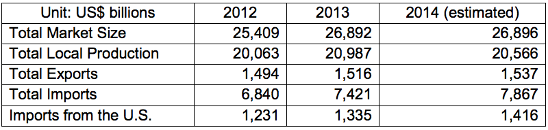
Total Market Size = US$26.892 billion
Data Sources: Sindusfarma
Total Local Production: US$20.987 billion
Total Exports: US$1.516 billion
Total Imports: US$7.421 billion
Imports from U.S.: U$1.335 billion
The Brazilian pharmaceutical industry is comprised of 540 local and international companies established in the country, representing total market value of approximately US$ 27 billion in 2013 and with an annual growth rate of 15%. Brazil is among the five largest pharmaceutical markets in the world in terms of unit sales, and the 8th largest market size. According to Brazil’s Pharmaceutical Industry Syndicate (SINDUSFARMA), Brazilian pharmaceutical product imports in 2013 reached US$7.42 billion, an 8.5 % increase over the previous year's level. US exports account for approximately 18% of Brazilian pharmaceutical imports.
About 80% of pharmaceutical companies operating in Brazil are national. However, they are only responsible for a minority of domestic sales. Foreign firms and their Brazilian subsidiaries, mostly from the United States and Europe, supply 70% of the market. This does not include direct sales to the Government of Brazil (GOB).
Taxes applied to medicines in Brazil are among the highest in the world. The GOB collects over US$ 1 billion in taxes from the pharmaceutical sector. The cascading tax method applied to manufactured goods in Brazil affects several industries, and is one of the most important topics that private industry has raised with the government. However, the process aimed at reducing taxes on pharmaceutical production remains slow and bureaucratic. According to government statements, taxes applied on pharmaceutical products are expected to decrease in order to make drugs more affordable for the population, although this applies primarily to state rather than federal taxes.
Generic Pharmaceutical Products
Currently, pharmaceutical patents are granted for a period of 11 years. U.S. firms seeking to enter the Brazilian market should be aware that the local generic drug market is growing rapidly. Generic drugs first entered the Brazilian market in 1999. Currently, generic drugs account for 25.6% of sales. Nearly all generic production is purchased by state public health care systems as part of the government’s program to distribute medicines to the country’s poorest citizens.
Sub-Sector Best Prospects
Return to top
Best prospects are related to modern life style, such as contraceptive, erectile dysfunction, cholesterol, weight control, diabetes and other medicines that treat chronic diseases. Nutritional supplements and Phytotherapeutic drugs as well as vitamins are also in high demand by Brazilian consumers.
Major imports of pharmaceutical products, in dollar amount, are classified under Harmonized System Code 30.04 as “Medicines with Cyclosporine A”, “Other Medicines with Heterocyclic Compounds in Doses” and “Other Medicines for Therapeutic Use”.
Opportunities
Return to top
Brazil’s pharmaceutical market represents an excellent opportunity for US firms wishing to enter the market. The size of the pharmaceutical market is significant and is expected to grow as the government lowers taxes on these products. Tax decreases will not only increase client sales for current patients, but will also attract new consumers who forego cost prohibitive medications and other treatments due to financial constraints.
Opportunities for US firms to export raw materials to Brazil are abundant. Approximately 85% of the raw materials used in the production of generic drugs in Brazil are imported. In addition, major demand for equipment and services associated with the construction of pharmaceutical manufacturing plants represents another opportunity for US exporters.
Due to the recent expiration of several drug patents, the market for generic drugs will present new opportunities for laboratories. Multinational companies are investing in the acquisition of local laboratories in order to establish a stronger presence in this segment and produce locally. Also, the GOB is stimulating the production of medicines locally to replace imports of drugs for treatment of Alzheimer’s, HIV, cerebral aneurysm, leishmaniasis and malaria.
Web Resources
Return to top
Brazilian Agency for Sanitary Health: www.anvisa.gov.br
Sindusfarma: www.sindusfarma.org.br
Major Trade Shows: FCE Pharma: www.fcepharma.com.br the largest technology event in the pharmaceutical industry, held each May in São Paulo.
Hospitalar: www.hospitalar.com the largest medical event in Latin America, also held each May in São Paulo.
For more information about export opportunities in this sector, contact US Commercial Service Industry Specialist Jefferson Oliveira at: jefferson.oliveira@trade.gov
Education
Overview
Return to top
The education sector in Brazil is ranked as the 10th largest sector in the economy, and generates about US$75 billion per year. Brazil has 51 million students in the basic education system (which includes pre-school, elementary and high school), and around 6 million students are enrolled in university courses. Approximately 75% of graduate students go to private institutions, generating US$12.5 billion per year. In 2015, 10 million students will be in universities, many of whom will be supported by Federal Government loans. With the Government of Brazil (GOB)’s “FIES” loans, students finance up to 100% of their education, while with “PROUNI” loans, public school students finance up to 50%.
The education sector is one of President Rousseff’s highest priorities. Brazil, a vast country with continental dimensions, faces many challenges and needs to deliver a high standard of education for its population so that the country can continue on its growth trajectory. For that reason, the GOB is investing in a wide range of educational programs.
The government's Scientific Mobility Program (formerly called “Science without Borders”), will provide 101,000 scholarships to undergraduate and graduate students from Brazil for one year of study at colleges and universities in the United States and other foreign countries. The program’s specific focus is on promoting scientific research, increasing international cooperation in science and technology and initiating and engaging students in a global dialogue through international education.
The education sector has grown exponentially in recent years in Brazil, and industry specialists project that growth will continue in the coming years, driven by a stabilizing economy and the growing middle class. In the past five years, 26.1 million Brazilians have risen from poverty and this newly emerging class is eager for training, higher education, and vocational courses.
The Ministry of Education’s budget for 2013 is 5.5% of Brazil’s GDP, or US$19 billion. The Ministry seeks to invest heavily in classroom infrastructure, learning technologies, textbooks, and other programs.
Beyond government purchases, the education sector in Brazil (including school supplies, materials and other goods and services related to education) is a US$4 billion industry, wherein lies many opportunities for U.S. companies. School materials comprise 44% of the total value of the education industry in Brazil. University books comprise 18%, basic education books 20%, and alternative educational systems 9%. Franchises for language schools comprise an additional 9%.
Studying abroad has become more attractive to Brazilian students, due to the number of students in universities and the favorable economy, as well as the Scientific Mobility Program described above. Brazil ranks 14th in the world as country of origin for foreign students who are studying at U.S. universities. According to a report by the Institute of International Education (IIE), 9,029 Brazilian students studied in the U.S. in 2012, a 6% increase from 2011.
The consensus is that these numbers will continue to increase over the next few years, due to the Scientific Mobility Program, which was created in 2010 by President Rouseff. By the end of 2012, 22,600 scholarships had been awarded to Brazilians, the majority of whom study in the U.S. Twenty-two percent of all Scientific Mobility students (almost 5,000) were placed in 238 U.S. universities. Most of these students (58%) are attending undergraduate courses.
The Brazilian Government has partnered with IIE to administer the Brazil Scientific Mobility Program for U.S. educational institutions. Accredited American colleges and universities interested in hosting students through the program should register with IIE at: http://www.iie.org/Programs/Brazil-Scientific-Mobility.
Sub-Sector Best Prospects
Return to top
Approximately 80% of Brazilian students who study abroad come from Brazil’s southern and central eastern states. São Paulo has the largest applicant pool, and also attracts the most talented students to its own university campuses. The capital city of Brasília, located in Distrito Federal (Federal District) has the country’s highest GDP per capita, at approximately US$25,000, over twice that of São Paulo, its closest competitor state. The state of Rio de Janeiro, home of the largest company in Latin America, Petrobras, is the country’s energy hub, attracting many engineering and science majors.
The main challenge for many Brazilian students applying for study abroad programs is their lack of English language skills. Institutions that can address this issue by providing conditional acceptance tied to English language training may have a competitive advantage in attracting Brazilian students.
For this reason, in 2012 the Ministry of Education launched “English without Borders”, an initiative to support university students that improves English language teaching in schools through a variety of learning methodologies. Approximately 2 million user accounts will be provided to an online English teaching course, over 250,000 TOEFL exams will be offered to assess students’ language ability, and classroom courses will be provided by public universities to those students who fit the profile for the Scientific Mobility Program.
The Brazil Scientific Mobility Undergraduate Program focuses on Science, Technology, Engineering, and Mathematics (STEM) fields. Engineering and computer science are by far the most popular majors; however, a number of students are enrolled in social science, business, and the arts (focused on products and processes for technological development and innovation). Below are the top 10 fields of study among Scientific Mobility students:
TOP TEN FIELDS OF STUDY
- Mechanical Engineering
- Electrical Engineering
- Computer Sciences Industrial Engineering
- Civil Engineering
- Computer Engineering
- Biology
- Medicine
- Environmental Science
- Engineering
Opportunities
Return to top
With sustained economic growth and increased availability of credit, Brazilian families have been able to plan and make longer term financial commitments, and are purchasing homes, cars, and other durable goods in higher numbers. As the lower income portion of the market becomes more sophisticated and families become more aware of the importance of quality education, opportunities for educational services will continue to grow. U.S. schools interested in recruiting in Brazil should provide creative financing options, since cost (along with proficiency in English language skills) will continue to be the biggest challenge for Brazilian students studying abroad.
Since 2007, the Education Ministry has been investing in “PROINFO”, a program that promotes information technology as an important teaching tool. The program provides installations of technology labs in public schools, laptops for teachers and students, digital boards, projectors and tablets. The budget will also be used to invest in classroom infrastructure and training for teachers. In 2013, the government will continue to invest in the technology program with additional purchases of tablets for teachers, computers for technology laboratories at schools and universities, smart and digital boards, projectors, and other learning technologies.
Brazil’s book purchasing program is also receiving increased attention. Currently, school books are purchased every three years, although the procurement process starts three years before the actual purchase. In May 2013, the Ministry of Education opened the process for book purchases for 2016; the budget allocated for 2016 school book purchases is US$800 million. The purchasing program is divided into three categories: books used in libraries, textbooks for students, and reference material books for teachers.
For the next decade, the fastest growing segment of the educational market in Brazil will be short term vocational courses, due to government investments in technical schools and courses for high schools students and adults. Over the past five years, demand for professional/vocational courses grew 50%. In 2011, the Government of Brazil launched “PRONATEC” (National Program for Technical Courses) and designated US$3.5 billion for the program. Since its inception, PRONATEC has funded technical and vocational courses and 2.5 million students, and expects to fund an additional 2.3 million students for 2013. It is projected that by the end of 2014, the program will fund an additional 8 million students’ courses. Those companies and educational institutions interested in participating in these programs should consider partnering with local companies or universities. The National Confederation of Industry (CNI) thru its Technical Schools SESI and SENAI is also offering the courses. Brazil recognizes the need to improve English language skills across the country. However, the majority of the population, including those employed in the tourism sector, lack basic English language skills. New government programs, both at the federal and local levels, are addressing this deficiency. For example, the Coordination for the Improvement of Higher Education Personnel (CAPES), a foundation within the Ministry of Education in Brazil whose central purpose is to coordinate efforts to improve the quality of Brazil’s faculty and staff in higher education through grant programs, recently launched a program providing scholarships for intensive English language training in the U.K. for Brazilians that are certified in teaching English. The State of Bahia is sponsoring free English classes for taxi drivers. Private English language schools throughout the larger cities are abundant.
The Ministry of Education is in the early stages of creating a system to recognize foreign university degrees. Once the system is established, foreign universities will have to register to be included on the Ministry’s list, intended to be a fast-track system for students to have their foreign diplomas recognized.
Education Fairs and Trade Shows
The country’s many education fairs are one of the most efficient means to recruit Brazilian students, including the annual “EducationUSA”, supported by the U.S. Department of State's Bureau of Educational and Cultural Affairs (ECA). This year’s fairs will take place in late August to early September 2014. Universities interested in participating and exhibiting at the fairs should contact the Education USA office in Brazil.
Web Resources
Return to top
U.S. Government:
- EducationUSA Brazil: http://educationusa.org.br
- Department of Commerce U.S. Educational Institutions and Intensive English Programs http://export.gov/mrktresearch/index.asp
Government of Brazil:
- Brazilian Ministry of Education: http://www.mec.gov.br
- English without Borders: http://isf.mec.gov.br/
- FNDE: http://www.fnde.gov.br/
- Proinfo: http://portal.mec.gov.br/index.php?Itemid=462
Other:
- Institute of International Education - Open Doors: http://www.iie.org
For more information about export opportunities in this sector, contact U.S. Commercial Service Industry Specialist Ligia Pimenetel:Ligia.Pimentel@trade.gov
Electrical Power, Civil Nuclear
Overview
Return to top
In 2013, the Brazilian market for power generation, transmission, and distribution (GTD) equipment was estimated at US$ 8.9 billion (**) including US$919 million worth of imports. Of the total, US$99 million came from U.S. suppliers.
Electricity consumption from the grid is expected to grow at an average rate of 4.2% per year, reaching 656 TWh in 2021. Compared to previous forecasts of the Brazilian government’s Energy Expansion Plan (PDE), the electricity load on the National Grid is lower, reflecting the lower economic growth rate and the downward revision in the forecast of the industrial load expansion. By consumer type, the commercial sector shows the highest electricity consumption growth rate. Industry, in turn, reduces its share in total consumption, growing at a slower rate than the average rate.
According to the PDE for 2011-2021, published by Brazil’s Power Energy Research Company (EPE), the per capita electricity consumption in Brazil will increase from 2.4 MWh per inhabitant in 2011 to 3.5 MWh per inhabitant in 2020.
Electricity supply is expected to reach 908 TWh in 2021, growing from the current estimated 589 TWh at an average rate of 4.9%.
Sub-Sector Best Prospects
Return to top
In the power generation subsector, best sales prospect opportunities include the supply of control and supervision equipment, rectifiers, converters, inverters, heat recovery steam generators and condensers, power generation sets, heat exchangers, gas and steam turbines and parts.
Best equipment sales prospects for the power transmission subsector include compact substations, SF6 – gas insulation transformers, glass and polymer insulators for 600 kV bipolar DC transmission lines, electrical switches to open circuits, circuit breakers, capacitor banks, relays, and electrical protection panels.
The power distribution subsector offers equipment sales potential for monitoring systems to upgrade underground vaults, switches (15kV tension capacity; 125 Bil, with open, closed and grounded positions), power transformers (500 kVA), lightning arresters, ground and surge protection systems, relays, insulated electric conductors, surge suppressors, and innovative technologies to reduce technical and commercial losses, including smart grid technologies.
Opportunities
Return to top
Generation
The 2012-2022 PDE estimates that the electric power generation installed capacity will increase 7.9 GW per year, going from 121 GW in 2012 to 200 GW in 2022. Of this new capacity, 63.4 GW ((81%) will be from renewable resources (wind, hydro and biomass). The remaining 19% will come from natural gas (15%), nuclear (2%) coal (1%) and industrial gas (1%).
This expansion in generation in the next 10 years will require US$ 90 billion in investments.
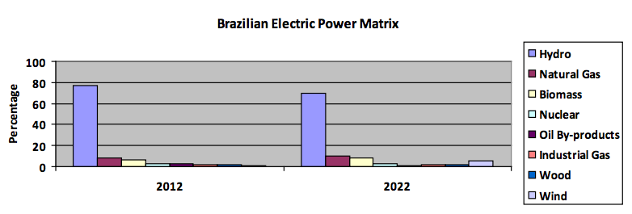
Transmission
Total investments in transmission from 2011-2020 will reach around US$23 billion, of which US$ 15 billion will be in transmission lines and US$ 8 billion in substations.
The interconnected transmission network currently in operation in Brazil surpasses the 100 thousand km extension. The 2020 PDE calls for an expansion in this network of around 42 thousand km, accounting for a 42% increase. The expansion in the transmission segment will involve 137 projects with tension equal or higher than 230kV and the extension equal or superior of 10 km. Of these projects, 118 are expected to be installed by 2015.
In the next ten years, three electrical grid systems are expected to be connected to the National Grid via the North subsystem: The Manaus system and the Amapá system in July 2013 and the Boa Vista system in February 2015. After this, all Brazilian state capitals will be connected to the National Grid. In addition, this integration will eventually enable the connection of hydropower plants on the left bank of the Amazon River - an important addition to overall power capacity given its hydrological inflow regime is complementary to the rest of the country
Distribution
The Brazilian energy distribution network is composed of high, medium and low tension lines. Even though some transmission companies also have lines with less than 230kv, most of the transmission lines between 69 kV and 138kV are under the responsibility of the electrical energy distribution companies (utilities). These lines are known within the sector as sub-transmission lines. Besides the sub-transmission network, the energy utilities also operate the medium and low voltage lines, called primary and secondary networks, respectively.
The Brazilian energy distribution sector is one of the most regulated in the electric power industry. The private sector is responsible for 67% of the total energy distributed in Brazil, while state-owned companies are responsible for the remaining 33%. According to ABRADEE (Brazilian Electric Power Utility Association), there are 64 electric power utilities in Brazil, with 74.1 million consumer and 2 million new connections every year. This sector has annual revenues of US$26 billion, which represents 2.2% of the national GDP, and annual investments around US$7 billion in new equipment, training, expansion of the system and others.
Several local power utilities have just completed their R&D projects in smart grids and are now ready to begin studying and implementing full-scale smart grid projects. Several technical questions are being raised and they are interested in learning from the U.S. experience, as well as consider U.S. suppliers.
With the Normative Resolution 582 that allows for micro-generation, smart grids may also signify a revolution in the consumers' role. In addition to choosing differentiated rates, the consumer may be able to generate his or her own energy at home and obtain credit from the system. In addition to making the use of energy more rational - which will increase productivity - and requiring less investment in new plants, it can also transform the user into a micro energy generator. This will reduce losses in the interconnected system, increase energy effectiveness, modify relations between public utility concessionaires and clients, and allow further progress regarding alternative sources, such as solar and wind power, in the matrix.
The major challenges faced by Brazil in the electrical energy distribution segment include the management and reduction of non-technical losses in several regions of the country as well as the question of reliability and interconnection.
Web Resources
Return to top
Trade Events:
Power Brasil: http://www.powerbrasilevents.com/en/index.html#leftinheritedbottom_tabs_0_3
SENDI: http://www.sendi.org.br/
Websites:
Government of Brazil:
EPE (Empresa de Pesquisas Energéticas) www.epe.gov.br
Ministry of Mines and Energy (MME) www.mme.gov.br
National Electrical Energy Agency www.aneel.gov.br
Other:
Brazilian Electrical and Electronics Industry Association www.abinee.org.br
Eletrobras www.eletrobras.com.br
For more information about export opportunities in this sector, please contact Industry Specialist Igly Serafim: Igly.serafim@trade.gov
Environmental
Overview
Return to top

Environmental experts estimate that Brazil’s environmental technologies market (including equipment, engineering / consulting services, instrumentation, construction and clean up services) is around US$ 12 billion, of which US$ 6.2 billion is related to the water and wastewater subsector; solid waste management at US$ 4 billion and air pollution control at US$ 1 billion. The actual market size is only a fraction of the market potential, which is estimated at 1 to 7% of Brazil’s GDP of US$ 2.3 trillion.
Sub-Sector Best Prospects
Return to top
Water/Wastewater
Water distribution in Brazil is available for 93% of Brazil’s population, whereas sewage collection services are currently available to only 48% of the population. Of the collected sewage, only 32% is treated, presenting a major pollution and basic sanitation challenge to Brazilian policy makers.
The Brazilian government has made sanitation, including water, wastewater, drainage and waste management, a top priority. The Attorney General’s Office is enforcing Federal legislation from 2007 and 2010 to strive towards adequate water, wastewater (W&WW) and solid waste management policies. Data received from the Brazilian Ministry of Cities show that average annual investments in basic sanitation are around US$ 4.5 billion. This is significantly less than the goal set by the government of Brazil (GOB) of US$ 7 Billion that is estimated to be required annually by 2030 in order to reach the GOB’s goal of providing basic sanitation services to every citizen. The funds made available by federal, state and municipal governments, multilateral development agencies and private sector companies should be invested in the expansion and replacement of existing water supplies, sewage collection and sewage treatment systems; as well as increased management efficiency, quality of service and technical capacity at all of the nation’s utilities. Currently there are 27 state-owned utilities serving 76% of the population, and municipal and private sector utilities serving about 10% of the population.
In Brazil, there is increasing demand for effluent treatment and energy/water saving technologies as well as for specialized consulting services. Such technologies include advanced water treatment, water loss prevention solutions, “intelligent valves”, efficient water distribution and reuse projects, water saving devices, and rain water systems. Suppliers of water treatment stations incorporate specific imported equipment. Laboratory and analytical equipment are also imported.
Opportunities for U.S. firms include solutions related to water distribution systems, including services and equipment. According to the Ministry of Cities, the water loss rate in Brazil corresponds to about 35% of the potable water produced in the urban areas (unofficial figures are of 40% to 50%), compared to 14% in the USA. Additionally, water reuse is increasingly important in Brazil, especially in the large centers where water scarcity represents high operational costs. Existing legislation that imposes charges for collecting and disposing effluents in water bodies increases the demand for specialized consulting services and effluent treatment technologies.
In addition to the municipal demand, private industry in the chemical, oil & gas, metallurgy, textile, automotive, sugar and ethanol, pulp and paper, and food and beverage sectors all are potential buyers of W & WW solutions.
Solid Waste Management
According to an IADB study, entitled “Solid Waste Management – an Opportunity for Municipal Development and for Small Business”, Brazil’s National Solid Waste Policy, which was announced in 2010 and is being implemented in Brazil, generates a variety of business opportunities for private sector companies, including:
- Using methane gas derived from sanitary landfills to generate electricity thereby increasing the landfill’s operating efficiency
- Using energy generated from animal manure (Brazil’s animal protein industry is among the world’s largest)
- Brazil’s National Solid Waste Policy determined that by mid-2014, municipalities will no longer be allowed to dispose waste in open dumps, so there is a need to install new sanitary landfills (50% of the 5,564 municipalities still have garbage dumps)
- Adopting methods to collect and return specific types of waste (i.e. electronic, batteries, tires, fluorescent lamps, lubricant oils, pesticides) from those manufacturers, importers, distributors and retailers who create the waste
- Installing and managing voluntary delivery points
- Implementing warehouses for recyclable waste, composting units, waste sorting areas, transshipment and recycling of debris and small sanitary landfills
- Consulting services for both public and private sector clients
Air pollution
According to CETESB, the state of Sao Paulo’s environmental authority, those technologies and services that are in highest demand related to air pollution includes:
- Continuous emission monitoring systems (note, very high demand due to the implementation of new waste incinerators).
- Analytical and laboratory testing goods and services.
- Air pollution control equipment.
- Fuel vapor control systems (note, new legislation is currently being drafted).
Opportunities
Return to top
According to the Brazilian Association of Urban Cleaning Companies (ABRELPE), solid waste generation in Brazil is estimated at 62 million metric tons per year, of which about 90% is collected. About 37% of the waste ends up in garbage dumps or “controlled landfills”, both of which are highly harmful to the environment and public health. IBGE - the National Institute of Geography and Statistics indicates that only 32% of the 5,565 municipalities in Brazil have some type of selective waste collection, and that only 10% met the August 2012 deadline to present their solid waste management plan to the Environmental Ministry, imposed by the National Solid Waste Policy of 2010. According to market analysts, it is unlikely that the municipalities will comply with other legal requirements, such as replacing garbage dumps with sanitary landfills and implementing selective waste collection and recycling programs, which is currently scheduled to be met by mid-2014.
Despite the slow pace of municipalities complying with these recommendations, the solid waste management business in Brazil offers significant business opportunities to private sector companies. ABRELPE estimates that there are currently 200 companies in the business, and that 80% of the solid waste management services are performed by private sector companies. The market for municipal urban cleaning in Brazil is estimated at US$10.5 billion (R$21 billion), and is expected to reach US$ 22.5 billion (R$45 billion) by 2016, once law 12.305 of August 2010 is actually enforced. Industrial companies are jointly addressing policy compliance through their respective industry trade associations, which typically contract feasibility studies, design reverse logistic methods, establish waste collection points and select appropriate waste treatment technologies.
The industry has an interest in the implementation of incinerators, or energy generation plants, in larger metropolitan cities as well as in mid-size municipalities.
Web Resources
Return to top
IBAMA – Brazilian Environmental Institute – www.ibama.gov.br
CETESB – Environmental Authority of the State of Sao Paulo - www.cetesb.sp.gov.br/
ABRELPE - Brazilian Association of City Cleaning and Waste Treatment Companies – www.abrelpe.org.br
ABETRE- Brazilian Association of Solid Waste Treatment Companies – www.abetre.org.br
Trade Shows
FENASAN - National Exhibition of Environmental and Sanitation Services
Date: July 30 to August 1, 2014
Site: Expocenter Norte – São Paulo
Organizer: Sao Paulo State Water Utility Engineers Association
Website: http://www.fenasan.com.br
Comments: FENASAN is the number one water & wastewater related event in Brazil and attracts a large audience and international exhibitors and visitors.
EXPOSUCATA - International Recycling Fair and Congress
Dates: August 19 to 21, 2014
Site: Imigrantes Exhibition and Convention Center – Sao Paulo
Organizer: Eco Brazil Editora
Website: http://www.exposucata.com.br/
Comments: Displays technologies and services involved in marketing, preparation and processing of recyclable materials.
RWM Brasil – Solid Waste Management Show
Dates: September 9 and 10, 2014
Site: Transamerica Expo Center – Sao Paulo, Brazil
Organizer: ABRELPE (Brazilian Association of Urban Cleaning Companies)
Website: http://www.abrelpe.org.br/detalhe_evento.cfm?id=1304&f=1
Comments: This event started in 2013. The exhibition takes place simultaneously with the ISWA Solid Waste Congress.
Food and Beverage
Overview
Return to top
While Brazil is a major agricultural country with a modern food processing sector, there are export opportunities for U.S. companies. In 2012, Brazil imported consumer-oriented food products valued at US$4.2 billion, up 4 percent from the previous year. Mercosul* countries and the European Union captured the lion’s share of this market, registering 44 percent and 24 percent market share, respectively. U.S. exports reached US$273 million, a seven percent market share. Although up a full point from 2011, the United States must establish a more aggressive approach toward the Brazilian market if U.S. companies are to significantly increase exports of food and agricultural product.
(*) MERCOSUL is the Southern Common Market, comprised of Argentina, Brazil, Paraguay, Uruguay, and Venezuela, which promotes free trade of goods, services, and production inputs.
Sub-Sector Best Prospects
Return to top
Products present in the market which have good sales potential
Importers are generally looking for well-known brands and high-end products. Brazilian importers/distributors usually prefer products with nine months shelf life or more. In addition to the product itself, packaging, status and level of innovation are important attributes. Products that combine these characteristics are more likely to successfully enter the market. Currently, the food categories that are most exported to Brazil from the United States are: meat products, eggs and products, dairy products, fresh fruit, processed fruit, processed vegetables, fruit and vegetable juices, tree nuts, chocolate and cocoa products, snack foods, breakfast cereals, condiments and sauces, prepared food, wine, beer, distilled spirits, non-alcoholic beverages (ex. juices) and fish products.
Opportunities
Return to top
Products not present in significant quantities, but which have good sales potential
Health foods, especially natural and organic products, have a limited presence in the Brazilian market. Although increasing at a fast pace of 30- 35 percent per year, the local industry has not directed consistent efforts to develop this segment. There are a limited number of local suppliers offering processed organic products in the market; consequently, prices for these items are still high for the average consumer. U.S. suppliers may find great opportunities within this niche. Brazil requires the use of the organic stamp on all organic products. In order to receive approval for its use, organic producers must comply with regulations, which mean that a local certifying agent, accredited by MAPA, must assure the product is produced according to MAPA’s standards. Other food categories being sought by local importers are lactose free products, kosher products, diet products, gluten free products, baby formula, and functional foods.
(*) Government of Brazil’s Ministry of Agriculture, Livestock and Food Supply
Web Resources
Return to top
U.S. Government:
Other:
Government of Brazil:
www.agricultura.gov.br/ (Brazil Ministry of Agriculture)
Medical Equipment
Overview
Return to top
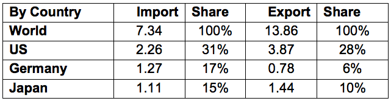
Total Market Size = US$ 6,830
Data Sources: ABIMED, ABIMO, ABIIS
Total Local Production: US$ 2,698
Total Exports: US$ 924
Total Imports: US$ 5,056
Imports from U.S.: US$1,516
Brazil is the largest medical equipment market in South America and should continue to expand. It is expected that this segment will regain double-digit annual growth in 2014, which was interrupted in 2012 due to the worldwide economic downturn and domestic strikes. Brazil is both a major medical equipment producer and importer. The industry is comprised of a number of related products and services, including:
- Medical equipment and devices
- Dental equipment and products
- Radiological and diagnostic imaging equipment
- Laboratory equipment
Brazilian medical equipment revenues in 2013 reached an estimated US$6.8 billion, which represents an increase of 9.4 % from the previous year. U.S. products account for approximately 30% of the import market, mainly sold through local agents, distributors and importers to hospitals and clinics. The market for electro medicine equipment is around US$200 million, which represents approximately 50% of total sales in Latin America. In 2013, imports for in vitro diagnostics reagents and devices increased approximately 10%, reaching sales of US$230 million.
There are few, high-quality Brazilian manufacturers producing advanced medical equipment, forcing Brazil to rely on imports, a trend that will continue for quite some time. Local buyers view U.S. and other foreign products (mainly Canadian and European) as having high quality and reliability. Thus, financing terms often become the differentiating criteria in making a sale.
Anvisa, Brazil’s Health Surveillance Agency is the country’s national agency of sanitary surveillance that regulates registration of medical related products. Risk class III, IV and some II may demand international inspections for Good Manufacturing Products (GMP). Electrical and battery powered devices must receive certifications and the Brazilian Conformity Mark from Inmetro, the National Institute of Metrology, Quality and Technology that issues.
Sub-Sector Best Prospects
Return to top
Brazil’s strengthened currency has provided greater purchasing power for private and public hospitals. With continued expansion of Brazil’s private health care sector, the market should continue to grow. Approximately 80% of all products used in hospitals in Brazil must be imported, because the country has no manufacturing of comparable products. New opportunities for US exporters abound, particularly for:
- More advanced medical equipment
- Disposables
- Diagnostic devices
- Implants and components
Opportunities
Return to top
The market for home health care products has been increasing in recent years. Brazilian health insurance companies are responsible for paying 99% of the costs related to home care treatment. As such, the U.S. Commercial Service sees the market for home health care products growing dramatically within the coming years.
The Government of Brazil is offering opportunities to companies that are interested in partnerships to transfer technology for domestic production through its public private partnership program, in an effort to reduce the deficit trade balance in the health care sector. U.S. exporters may consider the opportunities offered by Mercosur* for companies that manufacture or assemble medical devices in Brazil. It is possible to use it as a "spring board" for export into other South American countries.
Since compulsory product registration before sale is required for all of Mercosur countries, US exporters should consult a local lawyer/consultant before signing a contract with any agent/distributor.
(* ) Mercosur (Mercado del Sur) is composed of 5 sovereign member states: Argentina; Brazil; Paraguay; Uruguay; and Venezuela. Bolivia became an acceding member on 7 December 2012.
Web Resources
Return to top
ANVISA - Brazilian Agency for Sanitary Surveillance: www.anvisa.gov.br
ABIMO - Brazilian Assoc. of Dental, Medical and Hospital Equipment: www.abimo.org.br
ABIMED – Brazilian Assoc. of Importers of Medical Equipment and Devices www.abimed.org.br
Major Trade Shows:
- Hospitalar – www.hospitalar.com - The largest medical event in Latin America, held each May in São Paulo.
- MD&M – www.mdmbrazil.com – The largest medical tech show in Latin America, held each August in São Paulo.
Reabilitação – www.reabilitacao.com – Event for orthopedic and rehab products also held each August in São Paulo.
For more information about export opportunities in this sector, contact Industry Specialist Jefferson Oliveira: jefferson.oliveira@trade.gov.
Mining
Overview
Return to top
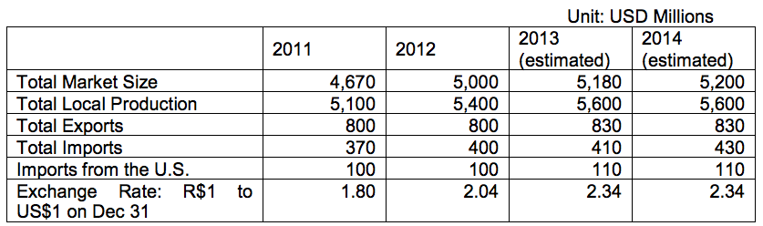
Total Market Size = (Total Local Production + Total Imports) – (Total Exports)
Data Sources: Total Local Production: Brazilian Mining Institute (IBRAM) and MDIC Brazilian Ministry of Industry and Commerce and press reports
Total Exports: MDIC Brazilian Ministry of Industry and Commerce
Total Imports: MDIC Brazilian Ministry of Industry and Commerce
Imports from U.S.: MDIC Brazilian Ministry of Industry and Commerce
Brazil is the world’s fifth largest mineral producer and, as a result, one of the world’s largest markets for mining equipment. The highest output for most minerals in Brazil was achieved in 2008. In 2009, a big recession followed in the international mining market, and while output of most minerals has since increased, the level is still below the record year of 2008. Prices for mineral commodities depend basically on the international market and have decreased significantly in the last few years, negatively impacting the financial situation of most Brazilian mining companies.
IBRAM released an estimate in March 2014, stating that local mining companies will invest US$53.6 billion in new projects between 2014 and 2018. This is considered a very low volume of investments, given the potential of the country, especially when compared to US$75 billion previously estimated for the period 2012 to 2016. Most of the cutbacks in the total volume of investment were in iron ore, which is Brazil’s main mineral and is responsible for nearly 60% of the total investments in mining in Brazil. Brazil’s iron ore operations have an output of nearly 500 million metric tons/year (Mt/y), representing 16% of the world’s total.
According to IBRAM, there are several reasons for the slowdown in this sector, notably falling prices for commodities, excessive bureaucracy for the necessary environmental permits, difficulty in raising local capital and a federal mining regulatory framework which is currently undergoing revision by Congress. The price per ton for iron ore has fallen from a peak of US$190 in 2011 to between US$110 - 115. The price for gold has fallen to 45% below its peak price in 2011. As of today, at least 14 gold projects or operations have been halted in Brazil, most by smaller companies. The price of aluminum likewise fell 60% during the last four years, and three big projects have been halted for this reason.
China has played a very important role for Brazilian mining companies. The nation has become the largest importer of Brazil’s minerals, especially iron ore. Most of the new projects developed or planned in Brazil are tied to China’s demand for Brazilian mineral resources.
The full potential for output of Brazilian minerals has not been fully surveyed, and significant discoveries of mineral deposits are expected in the future. Investments in geological exploration in Brazil in 2013 are estimated to have been US$ 300 million, very low when compared to US$1.6 billion in Australia.
The most important minerals in Brazil, with their respective production stated in millions of metric tons per year (Mt/y), or metric tons per year (t/y) in 2013, and the Brazilian share of the world production are:
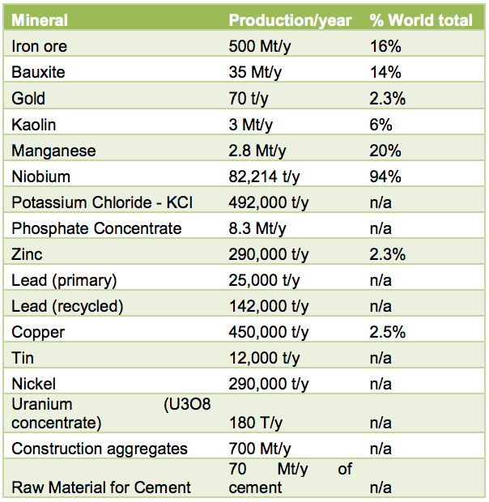
Brazil is the world’s largest producer of niobium, the second largest producer of iron ore and manganese, and the third largest producer of bauxite.
The total value of mineral commodities produced in Brazil in 2013 is estimated to be US$44 billion, concentrated in the central state of Minas Gerais (45% of the total), and in the northern state of Pará (in the Carajás mining area, in the Amazon region), with 30% of the total. Brazil’s coal production is small and has been stagnant for the last 20 years. The output in 2012 was only 6 Mt/y of steam coal (compared to 5 Mt/y in 1991), only 0.2% of the world’s total, but there are plans to increase its output to 12 Mt by 2017, in order to supply several new local coal power plants. Total Brazilian deposits of coal are estimated to be 32 billion metric tons, or only 0.3% of the world’s total. There are nine coal power plants currently in operation in Brazil, with a combined capacity of 3.205 MW, equivalent to only 2% of the total electricity consumption of the country. There are projects by local companies underway to start up several new coal power plants in Brazil in the next five years, for a combined capacity of 3,000 MW (megawatts).
Brazil is one of the largest importers of metallurgical coal, used by local steel manufacturers. It has imported approximately 16 million metric tons/year (US$2 billion) of metallurgical coal. Metallurgical coal totaled 40% of the total value of Brazilian mineral imports in 2012. The main supplying countries have been Australia, U.S.A., Canada, and South Africa. Vale, the largest Brazilian mining company, has made large investments in coal mining in Australia and in Mozambique in the last five years. It had an output of 8.8 Mt/y of coal in these countries during 2013. The total deposits are 2.5 billion metric tons, and the total output is planned to reach 40 Mt/year.
The U.S. has always been one of the largest exporting countries to the Brazilian mining equipment market, with a share of 20% to 30% of Brazilian imports. Official statistics show that the U.S. has exported hundreds of types of components for mining machinery in Brazil. Other very strong exporters competing with U.S. interests are Germany, Sweden, Canada, China, France, Italy, Finland, and Japan.
Gold: The total Brazilian output of gold in 2012 was 70 metric tons of gold metal. It is expected to expand to 90 t/y of gold metal in 2016, according to the Brazilian Mining Institute. The Canadian Kinross Group became Brazil’s largest gold producer in 2008, when it started up a new project of US$ 550 million and increased its output of gold metal from 5.4 to 17.2 metric tons / year. Other large producers of gold in Brazil are AngloGold Ashanti, Yamana Gold and Jaguar Mining. Individual prospectors have a share of nearly 13% of the total output.
Sub-Sector Best Prospects
Return to top
Brazil has a very limited market for turnkey machinery in general, as a large number of leading multinational manufacturers have their own factories in Brazil. In fact, many of them even export their products. These companies, though, provide excellent opportunities for U.S. manufacturers of hundreds of parts and components for most types of mining equipment, such as earth-moving machines, belt conveyors, crushers and grinding equipment, laboratory instruments, drill bits and geological survey systems.
Products (or components) that are not locally produced, either by foreign or local firms have the highest success rate for entry into the market. Otherwise, the imported product will need to offer much higher technology or cost/benefit compared to the locally-made ones, as local companies tend to prefer buying locally even if there is a difference in quality. Import taxes and fees in Brazil are very high in the mining sector, and import procedures complicated and bureaucratic, forcing buyers to favor local over imported products. Most of Brazil’s mines are open pit, so the market for underground mining equipment is very small, though more underground mines are expected to open in the future.
Opportunities
Return to top
The Brazilian market for mining equipment is very competitive. Most large multinational manufacturers have factories in Brazil, where they manufacture for the domestic market and frequently also export from Brazil to many other countries. Typically, these companies use 50% to 90% Brazilian-made components to build their equipment in Brazil, in terms of value of the final product. For example, Caterpillar has a huge factory in Brazil, with total sales of more than US$2 billion/year, and it exports more than 50% of its Brazilian- made machines all over the world. In 2012, Caterpillar, which has produced a traditional line of earthmoving machinery in Brazil for over 50 years, has added a locomotive factory.
Additional U.S. and other international firms with factories in Brazil include:
Australia Orica
Finland Metso, Outokumpu
France Michelin Tires, Saint Gobain
Germany Koch, Kuttner, Liebherr, MAN, Mercedes Benz, Schaeffler, Schenk Process, Siemens, Thyssen Krupp, Voith, WehrAlstom
Italy Case New Holland, FIAT, Iveco
Japan Komatsu, NSK, Toshiba
Sweden Asea BB, Atlas Copco, Sandvik, Scania, SKF, Tamrock, Volvo
UK JCB
USA 3M, Cummins, Eaton, GE, Goodyear, Ingersoll Rand, ITT, P&H
MinePro, Terex, Timken
There are many Brazilian manufacturers competing with similar technologies, or which have technology transfer agreements with foreign companies and dominate big shares of the domestic market. The largest ones include Bardella, Dedini, Isomonte, Jaraguá, Randon, and Villares. There are also hundreds of medium-sized Brazilian companies that specialize in manufacturing all types of parts and components for the suppliers of turn-key equipment.
Prospective Buyers:
VALE S.A. (Formerly known as Companhia Vale do Rio Doce) is Brazil’s largest, and the world’s second largest mining company. Privatized in 1997, VALE is responsible for nearly 50% of Brazil’s mineral output in terms of value, and represents an excellent opportunity for U.S. equipment suppliers. VALE produces nearly 80% of all Brazil’s iron ore output, 100% of potash, 85% of manganese, 43% of kaolin, 80% of bauxite, and is also the top player in aluminum, copper, and nickel production. The output of its main minerals in 2013 was 299.8 million metric tons (Mt) of iron ore, plus 39.0 Mt of iron ore pellets, 2.378 Mt of manganese ore, 260,000 tons of nickel (metal content in ore), 15 Mt of bauxite, 370,000 tons of copper (contents in ore), 492,000 tons of potassium chloride, 8.8 Mt of coal and 8.3 Mt of phosphate rock. VALE is also the top logistics player in Brazil, especially for ports and railroads, not only for its own use, but also as a supplier of logistics services to other companies. It is the largest Brazilian consumer of electricity. Over the last decade, VALE has diversified further, buying the Canadian company INCO (the world’s largest nickel producer), and increasing coal projects in Australia and Mozambique.
Anglo American has a large iron ore project located in Minas Gerais, which will start producing in 2014 with an output of 26 million metric tons. Since 2010, Anglo also has a big nickel project named “Barro Alto,” with an output of 36,000 t/year in Ferro-nickel alloys.
AngloGold Ashanti is the second largest gold producer in Brazil, with an output of nearly 500,000 troy ounces/year, and projects to increase its output in Brazil to 670,000 troy ounces in the next three years.
MMX started three large iron ore projects in Brazil in 2007, but most part of these projects have been either sold or postponed. Its output in 2012 was 9 million t/y of iron ore.
Usiminas, Brazil’s largest steel manufacturer has an output of currently 13 Mt of iron ore, and projects to expand to 29 Mt by 2017, in a joint-venture with Japanese-owned Sumitomo.
CSN operations yielded 30 Mt/y of iron ore in 2013, with a project to expand its output to 40 Mt/y. It is also the second largest Brazilian steel producer.
ArcelorMittal had an output of 4 Mt of iron ore in 2012, and projects expansion to 10 Mt by 2015. This company is Brazil’s third largest steel producer.
Samarco yielded 24 Mt of iron ore and 17 Mt/y of iron ore pellets in 2012. The company is a consortium between Vale and BHP Billiton. It started a new pelletizing mill in April 2014, increasing its capacity to 30 Mt of pellets.
Kinross Group of Canada became Brazil’s largest gold producer in 2008, when it started up a new project of US$ 550 million and increased its output of gold metal from 5.4 to 17.2 metric tons /year.
Votorantim is the only local producer of zinc, and has a share of approximately 40% of the local production of cement. This Brazilian group is a big producer of bauxite and aluminum.
MRN is the largest producer of bauxite in the world, with 18 Mt/y. The company is a consortium that includes Vale (40%), BHP Billiton Metals (14.8%), Alcan (12%), CBA (10%), Alcoa (13.58%), Norsk Hydro (5%), and Abalco (4.62%).
Market Entry:
It is absolutely necessary for foreign manufacturers of equipment to have some degree of local presence in Brazil. Most multinational manufacturers of mining equipment already have factories in Brazil. Smaller companies that cannot afford to establish a local subsidiary must at least have a good Brazilian representative that can supply or subcontract technical maintenance and some degree of local assembling.
Brazil’s mining companies, even the very large ones, prefer to contact a Brazil-based representative and do all the import procedures through them, instead of contacting the foreign suppliers directly.
Price and just-in-time delivery for components are key factors for most importers. Some large mining companies have their own bonded warehouses where they store imported products in Brazil, locked under customs’ agreement. These products will go through customs and be paid only when they really need to be used. Unskilled labor is relatively cheap in Brazil compared to the U.S., so equipment that eliminates large numbers of employees is not necessarily financially attractive to Brazilian companies. Highly qualified labors, especially engineers, earn wages that are competitive with those in the U.S.
Import taxes in Brazil are very high. Import duty on mining equipment is normally between 5 to 12%, calculated based on the CIF (cost, insurance and freight) price. These import duties are adopted as a single tariff structure for the Mercosul free trade area which also includes Argentina, Paraguay, Uruguay, and Venezuela. There are also three local taxes.
The following taxes apply to both local and foreign products:
IPI Industrialized Products Tax, federal tax calculated on top of the CIF price plus Import Tax, is 5% to 8% for most products
ICMS Merchandise and Services Circulation Tax, a state government value-added tax, is 18% of the final price in most Brazilian states and products
PIS/COFINS, Social Integration and Social Security Financing Contributions: 9.25% but can represent up to 12.63% of the CIF price due to complex calculation formula
Additional Miscellaneous Taxes and Fees: Warehousing, handling charges at port, transportation, etc.
Exposibram, the Brazilian mining show, is held every year in September, alternating between the cities of Belo Horizonte and Belem. It is sponsored and organized by IBRAM, with support from most local mining companies and manufacturers of mining equipment. This show is recommended for U.S. companies looking to understand or partner with Brazilian mining companies, and to make personal contact with related government entities that travel to the show from around the country. Kallman Worldwide is the representative of this show in the USA. Website: http://www.exposibram.org.br
Web Resources
Return to top
Government of Brazil:
Brazilian Geological Service http://www.cprm.gov.br
Ministry of Mines and Energy (MME) http://www.mme.gov.br
U.S. Government:
U.S. Commercial Service/Brazil http://www.buyusa.gov/brazil
U.S. Commercial Service Market Research Worldwide http://export.gov/mrktresearch/index.asp
Other:
ABIMAQ - Brazilian Association of Machinery Manufacturers, database of manufacturers http://www.abimaq.org.br
Brazilian Mining Institute (IBRAM) http://www.ibram.org.br
InfoMine Portal http://brasil.infomine.com
Magazine “Brazil Mineral” www.signuseditora.com.br
Magazine “In the Mine” www.inthemine.com.br
Magazine “Minerios” www.minerios.com
Professional Geologists Association www.geologo.com.br
VALE http://www.vale.com
For more information, contact Industry Specialist Mauricio Vasconcelos:mauricio.vasconcelos@trade.gov
Oil and Gas
Overview
Return to top
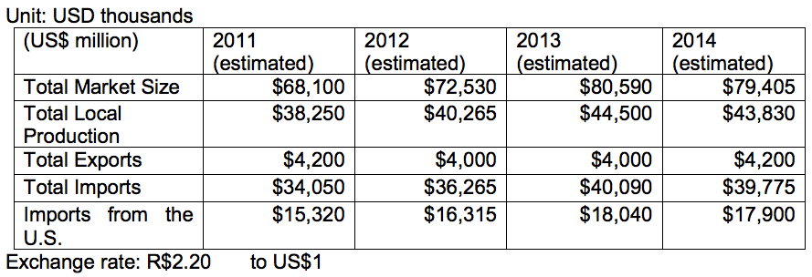
Total Market Size = (Total Local Production + Total Imports) – (Total Exports)
The 2014 estimate for purchases in Brazil’s oil and gas equipment and services market is approximately US$79.4 billion. Of that amount, nearly US$40 billion will likely be imported, with approximately US$17.9 billion being imported from the United States.
Data Sources: Statistics are based on national oil company Petrobras and other oil companies planned investments, and estimates based upon information available from oil and gas trade associations and from Brazil´s national oil regulator websites. A Booz & Company August 2010 sector study report predicted that total expenditures (investment and operation) in Brazil’s oil and gas E&P subsector will reach US$400 billion through 2020. The domestic industry will likely supply approximately 40-50 % of this total demand, depending upon how competitive their products and services are against those from international suppliers. In this regard, the Brazilian Petroleum Institute (IBP) hired Bain Company to conduct a new study about the domestic oil and gas industry’s capacity to meet ongoing and upcoming demands of oil companies. The IBP is using this study as a key component regarding its membership’s proposal to the Government of Brazil (GOB) regarding specific adjustments to Brazil’s current local content (LC) policy. As of the date of this publication, the Bain study was not yet available for public disclosure.
Although Brazil ranks 15th globally in proven oil reserves and 11th in oil production, it is not a member of the Organization of Petroleum Exporting Countries (OPEC). However, that will likely change with the large offshore oil and gas discoveries that Petrobras made in late 2007. These large finds, called the pre-salt fields, are located 200 miles off Brazil’s southern coast and lie approximately 7,000 feet below the ocean’s surface. As these logistically and technologically challenging discoveries are exploited, Brazil will likely become a major oil and gas exporter.
Brazil’s 2013 proven oil reserves reached 15.6 billion barrels, and proven gas reserves reached 458 billion cubic meters. Data included in BP Oil Company´s 2013 Statistical Review shows that Brazil ranks 3rd in Latin America for proven natural gas reserves, which is 0.2% of the world total reserves. (The Eurasia region has the world’s highest proven reserves of natural gas). However, Brazil is responsible for 0.9% of world gas consumption. Industry sources estimate that Brazil has possible reserves of 20 to 30 billion barrels and probable reserves of 60 to 80 billion of barrels. According to U.S. energy research firm PFC Energy/IHS Energy, Brazil accounted for 63% of all deep water world oil findings from 2005 to 2010. Once these oil fields are developed, Brazil will post the largest oil production growth among non-OPEC countries, sometime in the late 2020s. A recent “2030 Outlook" study, published by BP Oil Company, estimates that Brazil will be producing 5.3 million barrels per day by 2030.
In 2013, Brazil produced 2.1 million barrels of oil per day (bdp), two percent lower than in 2012; and 77.2 million cubic meters of gas per day, nine percent above 2012 levels. About 91% of Brazil’s oil production in 2013 came from offshore fields, lying mostly at extreme depths. Likewise, about 73% of Brazil’s gas production in 2013 came primarily from offshore fields. The pre-salt share accounted for 19.6% of Brazil’s oil production, reaching 412,000 bpd in 2013 -- a record in daily production -- 11% higher than 2012. By 2018, the pre-salt fields are expected to account for 52% of Brazil’s oil production.
Petrobras’ oil production accounts for 92% of Brazil’s total oil production. The company’s website states that its domestic and international proven oil and natural gas reserves were at 16 billion barrels in 2013. According to the March 2014 issue of Monitor IBP newsletter, the average oil production ranking in 2013 in Brazil by barrels per day (bpd) was:
- Petrobras 1,836,931 bpd
- Statoil 42,466 bpd
- BG 34,479 bpd
- Sinochem 28,311 bpd
- Shell 21,459 bpd
- Repsol Sinopec 12,435 bpd
- Petrogal 10,534 bpd
- BP 6,430 bpd
- Chevron* 5,668 bpd
*In the 2011 average ranking, Chevron was the third largest oil producer after Petrobras and Shell, but Chevron’s oil spill events in Brazil late that year impacted its production.
The same publication shows that as of February 2014, Petrobras had a total of 45 drilling rigs in operation (27 offshore and 18 onshore) out of a total of 56 rigs operating in Brazil. Read more of this issue of Monitor IBP Newsletter here: http://www.ibp.org.br/main.asp?View=%7BD1EE5277-8EDC-4FF6-9976-20F4199F82D4%7D&Team=¶ms=itemID=%7BD7A12031-214C-4C41-A933-2EBFD44DBA80%7D;&UIPartUID=%7BD90F22DB-05D4-4644-A8F2-FAD4803C8898%7D
Brazil’s drilling operations in 2013 were about 25% lower than the previous year, but industry contacts estimate that 2014 will close with an 18% increase in drilling activities vs. 2013. This growth will be supported by the oil companies’ exploratory commitments in connection with the oil licensing rounds that resumed in 2013. In any case, Petrobras is prioritizing investments in oil production development, optimization, and maintenance of existing large oil fields to monetize more oil. Petrobras expects its oil production in Brazil to grow by 7.5% in 2014, an ambitious target that industry contacts are skeptical about due to constraints that Petrobras is facing in the political arena. Additionally, a number of Petrobras’ projects have been delayed due to contract renegotiations and delivery issues with local equipment and service suppliers.
In 2013, Brazil exported 146,293,914 barrels of oil (approximately 400,805 bpd), against 211,215,673 barrels in 2012. About 27% of Brazil’s oil exports went to the United States (approximately 109,370 bpd), the largest consumer of Brazil’s oil. During the same period, Brazil refined about 2,073 million bpd, with 386,035 bpd being light oil that was imported to mix with Brazil’s predominantly heavy crude. Imports in 2013 totaled 146,694,740 barrels of oil (approximately 401,903 bpd), while they reached 113,066,150 barrels in 2012.
Petrobras’ sales of gasoline in the domestic market grew by 17% in 2012, and 4% in 2013, fueled by an increase in Brazil’s vehicle fleet and the reduction in ethanol consumption due to higher costs when compared to gasoline. This situation forced Petrobras to import 44,535 bpd of gasoline in 2013.
In February, 2014, Petrobras announced that it would invest US$220.6 billion (approximately US$44 billion/year) from 2014 through 2018, with 70% of this investment being destined for exploration and production (E&P). This new, five-year investment plan shows a 7% reduction of overall spending compared to the previous five year (e.g. 2013-2017) plan. According to the new plan, investments in downstream operations were cut by 30% compared to the previous plan, while E&P were increased by 4%. Upstream production targets remain the same. An additional US$63 billion will be invested by Petrobras’ partner companies in projects in Brazil, bringing the total to US$283.6 billion. However, because Petrobras will become the sole operator in the huge Libra field and other future offshore pre-salt field tenders, most business opportunities for U.S. firms lie in offering services or products to Petrobras.
Petrobras’ oil production targets in Brazil are 3.2 million bpd in 2018 and 4.2 million bpd in 2020. To achieve such production, Petrobras will invest US$153.9 billion in E&P in Brazil, 60% of which will go to the pre-salt and 40% to the post-salt. Post-salt refers to everything above the ocean's salt layer which can, however, be very deep, as most Petrobras offshore fields are. However, post-salt exploration and development entails less technological challenges than for the pre-salt layer.
Completion of the Abreu and Lima RNEST Refinery and of the first refining train at COMPERJ may be delayed due to current bid price audits that Petrobras is undergoing. Additionally, due to scandals involving a former Petrobras Downstream director, and the fact that 2014 is a presidential election year in Brazil, the partially state- owned Petrobras is in the spotlight for alleged project mismanagement. The result could adversely impact not only Petrobras’ downstream, but also their upstream projects in the near future.
In 2013, Brazil held three oil and gas licensing auctions. The 11th round (May 14, 2013) sold 142 blocks, an equivalent area of 100,372 square kilometers. The round generated a record US$1.4 billion in signature bonuses and a guaranteed minimum of approximately US$3.5 billion in new E&P investment spending. Petrobras bid successfully on 34 blocks, most of which were bid in partnership with other companies. In contrast to the pre-salt framework -- in which Petrobras must be the sole operator under a production-sharing agreement (PSA) model -- under these 11th round oil concession agreements, Petrobras’ partners can be the operators
This bid round and two others, including the Libra pre-salt, are expected to translate into substantial business opportunities for suppliers of oil and gas equipment and services. The Libra oil field, discovered off Brazil’s southeast coast, is estimated to contain recoverable resources ranging between 8 billion barrels to 12 billion barrels of oil, according to ANP, and could generate $1 trillion in public revenues over 30 years. Results and information on the 2013 rounds can be viewed at http://export.gov/brazil/industryhighlights/energy/eg_br_051813.asp or at the ANP website: http://www.brasil-rounds.gov.br/index_e.asp.
A few players in Brazil are beginning to drill pilot shale gas wells, but they face challenges related to operational inefficiencies in performing hydraulic fracking. These challenges include lack of good transportation infrastructure, few fracking trucks, high financial costs, and lack of large scale natural gas consumption in Brazil. For fracking to become economically viable there must be economies of scale in such activity (e.g. shale wells must be drilled in sequence). Such economies of scale may gradually start as a result of the recent (December, 2013) 12th oil and gas round that included non-conventional gas areas. Industry analysts also believe that if the GOB includes more natural gas in future electrical power auctions, it may help supply an increasing demand for the gas produced in non-conventional fields.
Lately, in addition to the gas imported from Bolivia and Brazil’s limited natural gas domestic production, the expansion of gas consumption in Brazil has been mostly supplied by Liquefied Natural Gas (LNG). Petrobras currently has three LNG regasification terminals in the States of Ceará, Rio de Janeiro, and Bahia and is planning to open one more in the state of Rio Grande do Sul. The Brazilian Association of Piped Gas (ABEGAS) also envisions a market for small LNG plants to be built near onshore gas fields as an alternative to bring gas to potential consumers that are not served by gas pipelines.
The first concession of a gas pipeline to be auctioned in Brazil will be for a stretch linking Guapimirim to Itaboraí, in Rio de Janeiro State, 11 kilometers long and with capacity of transporting 17.4 million cubic meters of natural gas per day. The R$112.3 million (about US$ 50 million) project is part of the Ten-Year Plan for the Expansion of the Pipeline Transport Network (PEMAT http://www.epe.gov.br/PEMAT/Forms/PEMAT.aspx), for the 2013-2022 period. The auction date has yet to be determined. ANP will coordinate this and future auctions to build gas transportation pipelines. Based on information provided by Brazil’s national energy research agency (EPE), ANP will set the maximum allowed annual revenue to investors. An overview of Brazil’s natural gas sector can be viewed in this report: http://buyusainfo.net/docs/x_1115840.pdf.
Market Challenges
The main impediments for U.S. companies wanting to operate in the Brazilian petroleum sector are regulations concerning domestic content and priority given to Petrobras. The Brazilian government has reserved a 30% equity share for Petrobras in all future pre-salt drilling and development concessions, according to a 2010 Brazilian law created specifically to address upcoming pre-salt auctions. This law also requires Petrobras to lead operations in both exploration and development on all pre-salt operations. The exploration of the fields will be done through consortia, where Petrobras will hold at least 30% equity in each oil block. The Libra pre-salt auction held on October 21, 2013 was the first bid under this new model (e.g. Production Sharing Agreement or PSA). In specific cases, as decided by the Brazilian National Energy Council, Petrobras may be called upon to explore selected pre-salt oil fields without a tender process. These regulations aim to exclusively promote Brazilian national interests in order to protect the industry from being dominated by foreign companies. The Brazilian government policy also promotes domestic industry clusters; that is, groups of manufacturing companies in related subsectors such as valves, pipes, vessels, etc. that support oil drilling.
However, despite local content requirements, industry contacts have been speculating about possible flexibility or compensation mechanisms that they can propose to the Brazilian oil regulator to deal with limited domestic industry supply capacity. For example, the oil industry would like to calculate their current investments in local R&D centers and labor training in their local content contractual obligations. Also, in the case of Petrobras, recent media reports noted that for selected oil production projects, Petrobras may increase purchase of specific foreign types of goods and services to speed up their projects and benefit from more competitive prices. Petrobras is pressed with achieving an ambitious oil production target, but its domestic fuel prices have been controlled by the Brazilian government to avoid inflation to rise in an election year. Hence, they are reportedly evaluating ways to mitigate risks of having main oil development projects postponed, due to limited domestic industry capacity.
Recently, the Brazilian Machinery Association (ABIMAQ), a strong lobbying arm for local manufacturers reported that Brazil has imported a total of US$141 billion in vessels, machines and parts in the last three years. In 2013 alone, ABIMAQ noted in an article, Brazil invested US$35 billion to import offshore support vessels and offshore rigs. The data, according to ABIMAQ, relates to vessels and materials imported under the special oil and tax regime (Repetro). Information on Repetro can be seen at the Brazilian Federal Income Agency http://www.receita.fazenda.gov.br/Legislacao/LegisAssunto/repetro.htm (in Portuguese).
Informal English translations can be seen at: http://www.ldccomex.com.br/english/services/control-systems/repetro-control-system/repetro-control-system http://www.nbcc.com.br/news/view/85 .
Sub-Sector Best Prospects
Return to top
The tables below show Petrobras’ demand for new equipment under their 2014-2018 Business Plan:
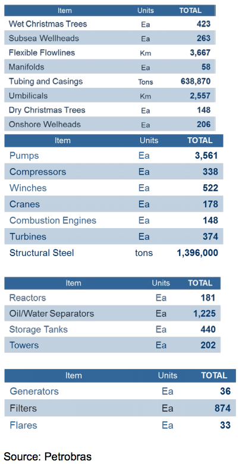
Source: Petrobras
Hydraulic fracking technologies might also present good opportunities for U.S. companies, if ANP continues to offer non-conventional areas for leasing. On April 11, 2014, ANP enacted Resolution No. 21/2014, which regulates hydraulic fracturing in unconventional reservoirs. It establishes mandatory adoption of an environmental management system that contains a plan for the control, treatment and disposal of the generated effluents, besides emergency response plans. Additionally, the resolution requires the performance of preliminary studies, which are necessary for the approval of the operations by ANP, such as fracturing simulations and risk analysis. The ANP resolution binds ANP´s approval to the environmental permitting conducted by the relevant state and/or federal environmental agencies. Due to these new ANP
requirements, specific environmental technologies and services should be in high demand and translate into promising prospects for U.S. suppliers.
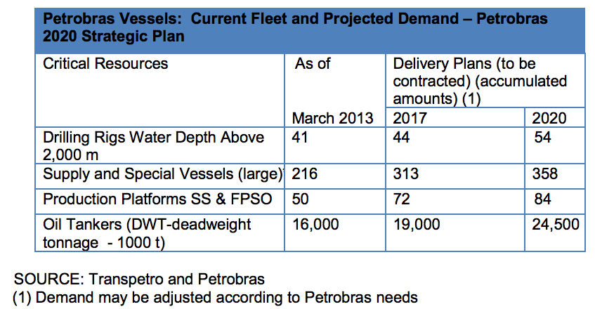
SOURCE: Transpetro and Petrobras (1) Demand may be adjusted according to Petrobras needs
**According to the Brazilian National Oil Industry Organization (ONIP), the following types of equipment that are part of the above platform supply and special vessels are not currently widely supplied by the Brazilian domestic industry. They can be considered best sales prospects for U.S. suppliers:
- 198 offshore cranes
- 198 vacuum sewage systems
- 396 Lifeguard vessels
- 55,700 manual valves
- 44,550 tons of tubing
- 4,800 tons of flanges and connections
Additionally, under the Petrobras Fleet Modernization and Expansion Program (Promef), Petrobras plans to continue to increase its fleet by 2020, as follows:
- Promef I and II: 49 oil tankers by 2020 (Suezmax, Panamax, Bunkers, etc.)
- EBN (Brazilian Shipping Company Program) I and II: 39 ships by 2017 (Gas tankers, etc.)
According to ONIP, the following types of equipment for oil tankers are not currently widely available in the Brazilian domestic industry and should be promising for U.S. suppliers:
- 60 vacuum sewage systems
- 60 inert gas generation units
- 122 lifeguard vessels
- 60 vessel accommodation modules
Opportunities
Return to top
Petrobras´ Importance: The 2014 IHS Energy 50 publication ranked Petrobras as the ninth largest energy company in the world, in contrast with its seventh position in the 2012 and fifth position in the 2011 ranking:
(http://www.ihs.com/info/en/a/energy50/50.aspx)
Still, on March 6, 2014, Petrobras announced a net income in 2013 of R$23.6 billion, 11% higher than in 2012. As widely publicized, in 2012 Petrobras announced its worst result in eight years. Its net income fell 36% in comparison to 2011. Industry analysts blamed the Brazilian government’s control over Petrobras’ fuel prices as the main cause for Petrobras’ weak results in 2012. They also believe that sourcing equipment and services locally, more than the domestic industry may have been able to deliver, also caused project delays and inflated the costs of a number of Petrobras’ projects, thus impacting their financial results.
According to Petrobras, better results in 2013 resulted from various internal restructuring programs. To more efficiently optimize costs, Petrobras has also been reevaluating the economic feasibility of several projects (e.g. some previously planned refineries) before they resume or start construction. In view of these factors, a number of local equipment and service suppliers and engineering procurement and construction companies have experienced two weak sales years and uncertainties, because Petrobras is their main client.
Petrobras’ investments in 2013 reached R$104.4 billion (or about US$43 billion), most of which went to exploration and production (58%). Petrobras ended 2013 with 86,111 full-time employees (1,200 more employees than in 2012). A summary of the new Petrobras investment plan for the period 2014-2018 can be viewed at: http://www.investidorpetrobras.com.br/en/presentations/presentation-to-analysts-2030-strategic-plan-and-2014-2018-business-plan-ceo-maria-das-gracas-silva-foster.htm
Market Entry
Since state-owned Petrobras’ monopoly ended in 1998, more than 70 firms - half of which are international companies - started doing business in Brazil and competed for the 1,034 oil blocks awarded through twelve annual oil-concession licensing rounds plus the first pre-salt round. With Petrobras winning the majority of these concessions, interested suppliers need to register at http://www.petrobras.com.br/en/supplier-channel/ “Suppliers Channel Guide” in order to sell to Petrobras. The registration requires that a foreign firm have a local representative. It is our recommendation that U.S. firms not established in Brazil consider partnering with a local firm that is registered as a supplier to Petrobras rather than attempting to register directly. Also important is to connect with major EPCs with contracts to Petrobras, including Queiroz Galvão, Keppel Fels, Odebrecht, and others.
Key Suppliers
Multinationals such as FMC Energy, Cameron, Marine/Oceaneering, National Oilwell Varco (NOV), Weatherford, GE Wellstream, the Norwegian Aker Kvaerner, and the British Rolls Royce, among others, have plants and service facilities in Brazil and hold a significant market share in their respective sub sectors. A good listing of such international companies, as well as of Brazilian oil and gas manufacturers, can be found in the Oil and Gas Directory published by Brasil Energia magazine. The translated listing can be found at this website http://www.guiapetroleo.com.br/ . The Brazilian National Organization Industry (ONIP) also has an extensive databank of local suppliers at http://www.onip.org.br/index.php
Web Resources
Return to top
Government of Brazil:
- ANP – National Petroleum Agency www.anp.gov.br
- Ministry of Mines and Energy (MME) www.mme.gov.br
U.S. Government:
- For more market research reports, please visit: http://export.gov/brazil/industryhighlights/energy/eg_br_051813.asp
Other:
- Brazilian Petroleum Institute www.ibp.org.br/main.asp
- Petrobras www.petrobras.com.br
- Petrobras slide presentations www.slideshare.net/petrobrasri.
- For more information about export opportunities in this sector, please contact Industry Specialist Regina Cunha:Regina.Cunha@trade.gov
Renewable Energy
Overview
Return to top
Brazil is South America’s largest clean energy market, generating nearly 80 percent of its electricity from renewable sources. Brazil’s commitment to renewable energy is strong, driven by both its immense renewable energy resource potential and rising energy demand.
New clean energy investments in Brazil totaled $5.34 billion in 2012, more than any other Latin American country. While no specific legislative targets exist, Brazil’s “Ten-Year Energy Plan,” published in 2011, envisions 18 GW of new, renewable energy capacity being brought online by 2020. Given Brazil’s existing manufacturing capacity, meeting this target will require the use of both imported and domestically produced technologies. However, many of the Brazilian Government’s incentives are geared towards supporting locally-sourced products, thus making export projections difficult.
According to the Brazilian National Energy Balance published by EPE (Energy Research Company), renewable energy in Brazil is registering an average annual expansion of 12%, with special emphasis on wind energy, biomass from sugarcane and small hydropower plants.
With growth occurring in almost every energy subsector, large-volume hydropower still accounts for the vast majority of Brazil’s energy capacity. Large hydropower dams account for 84 GW of Brazil’s total energy capacity. Other renewable energy technologies account for 15.8 GW of capacity, including 9.84 GW for biomass and waste-to-energy, 3.69 GW for small hydropower, and 2.46 GW of wind power.
Since the successful launch in 2002 of the “Program of Incentives for Alternative Energy Sources (PROINFA),” which resulted in 3.1 GW of new renewable energy generation, the Government of Brazil (GOB) has used a broad range of policies to encourage the deployment of renewable energy. These include guaranteed 20-year power purchase agreements, biofuel blending mandates, low-interest financing, and tax-based incentives.
In 2009, PROINFA was replaced by a reverse auction system, through which developers seeking to build renewable energy projects compete against proposed conventional energy projects in regular tenders. The reverse auctions have reduced the price paid by Brazilian consumers for renewable energy, as developers are incentivized to offer the lowest possible cost. The focus on price competition, however, has limited opportunities for solar or other higher priced technologies. Brazil has therefore held biomass- and wind-specific auctions to encourage the deployment of these technologies.
Sub-Sector Best Prospects
Return to top
Wind
The wind energy capacity installed in Brazil's 108 wind farms reached 2.46 GW during 2012, an increase of 73% versus 2011. Wind energy increased to make up 2% of the country's energy matrix.
By the end of 2013, it is estimated that installed capacity nationwide reached 6.05 GW, and will increase to 8.8 GW by 2017.
While local content requirements and import tariffs limit the opportunity for exporting wind products, service exporters may find some opportunities working with developers of these projects. Wind resource mapping, wind turbine design, and assessing environmental impacts of wind farms should all provide opportunities for U.S. exporters.
Notably, Brazil does not currently manufacture small wind turbines, a market segment that enjoys considerable U.S. competitiveness.
Solar
It is estimated that Brazil currently has about 20 MW of solar photovoltaic generating capacity installed, destined for the most part (99% as of 2011, according to the Atomic Energy Institute, or IEA) for supplying power to isolated and remote systems, mainly in situations where the extension of the electricity distribution network does not appear economically feasible. These systems are also used to power systems such as antennas and communications masts used for mobile phone networks and traffic radar systems.
Besides the high level of isolation, Brazil also has another important advantage: large deposits of silicon, the material used to manufacture solar panels. To take advantage, however, investment in technology is required; the country has not yet mastered the process for purifying the ore to the degree necessary to manufacture the panels.
In the first half of 2013 alone, Agencia Nacional de Energia Elétrica (ANEEL) received permit applications for 25 new solar projects totaling 967 MW. Since 2011, Bloomberg New Energy Finance reports that over 3.9 GW of solar permits have been requested. As these projects move to completion, some export opportunities should become available, although total solar exports to Brazil will remain limited into the medium-term.
Hydropower
Brazil offers opportunities for U.S. hydropower exporters. Large hydropower dams still account for the vast majority of Brazil’s energy capacity, accounting for 84 GW of Brazil’s total energy capacity. However, legal disputes surrounding the Belo Monte hydropower plant, currently under construction in the Amazon region, are likely to hinder the development of future large hydropower projects.
Two market segments likely hold the most promise for U.S. exports through 2015: small and medium hydropower equipment, and hydropower services. Though Brazilian and Argentine suppliers dominate the large hydropower market, U.S. exporters enjoy considerable market share in the small and medium-sized hydropower market.
Brazil’s hydropower reserves hit historically low levels in 2013. Ensuring that the country’s existing facilities are producing the most power possible, either through retrofits or system optimization, should provide American service exports with new opportunities.
Challenges and Barriers to Renewable Energy Exports
The need for developers to offer electricity at the lowest possible cost makes importing renewable energy technology from the United States commercially difficult. As a result, to date most U.S. exports have been in the form of services and high value-added products that are not available domestically.
The situation is aggravated by significant import barriers. Brazil maintains a 14 percent import tariff on wind turbines, component parts for the wind industry, and hydropower turbines. It also charges a 12 percent tariff on imported solar equipment, both PV and thermal.
The most important challenge, however, pertains to financing. The lending practices of Brazil’s development bank, Banco Nacional de Desenvolvimento Econ mico e Social (BNDES), pose a significant hurdle to U.S. exports. BNDES plays a major role in financing Brazil’s renewable energy growth and is among the largest lenders to the clean energy industry globally, disbursing nearly $29 billion for renewable energy projects between 2007 and 2011.
While there is no explicit local content requirement for participation in Brazil’s renewable energy power auctions, BNDES does use local content rules in determining which companies qualify for its low-cost credit. Since BNDES provides the most favorable financing terms, its financing therefore creates a de facto local content requirement for the Brazilian market. To illustrate this point, out of the 81 wind farms operating today in Brazil, only one has thus far been developed without BNDES financing – a project financed instead by the Chinese Development Bank and that used Chinese-manufactured turbines.
In December 2012, BNDES amended its local content requirements for wind projects, making them far more stringent. These requirements include a roadmap for compliance, with each phase requiring a higher percentage of local content. By 2016, BNDES aims to complete an entire Brazilian wind manufacturing value chain in-country – severely limiting the potential for wind product exports from the United States.
Some export deals are nevertheless possible, particularly when facilitated by Ex-Im Bank financing. Exporters will likely have to use similar methods to attract buyers, unless local content restrictions are removed or significantly weakened.
Opportunities
Return to top
Trade Events:
- Brazil WindPower; August 26-28, 2014 – Rio de Janeiro
- Intersolar South America; August 26-28, 2014 – São Paulo
- Fenasucro/Agrocana; August 26-28, 2014 – Sertãozinho
- HydroVision Brazil; October 21- 2014 – Sao Paulo
Web Resources
Return to top
Government of Brazil:
Brazilian Electrical and Electronics Industry Association www.abinee.org.br
Eletrobras www.eletrobras.com.br
EPE (Empresa de Pesquisas Energéticas) www.epe.gov.br
Ministry of Mines and Energy (MME) www.mme.gov.br
National Electrical Energy Agency www.aneel.gov.br
For more information about export opportunities in this sector, please contact Industry Specialist Igly Serafim: Igly.serafim@trade.gov
Safety and Security
Overview
Return to top

Brazil has an extensive and well-developed security market that registered an average annual growth of 10% for the last eight years with annual sales around US$26 billion, which includes private security services. Brazil’s market for electronic security equipment alone totals US$592 million and is expected to more than triple to US$1.8 billion by 2017. Foreign products account for approximately 50% of the electronic security total market share, with U.S. products representing half of these imports. The public and private sectors both have and continue to invest heavily in security equipment related to the 2014 World Cup and 2016 Summer Olympic Games.
For the past four years, while preparing for the Olympic Games, the state of Rio de Janeiro has been implementing an innovative safety program focused on so-called “UPP,” or Pacification Police Units, marking a radical shift in how Rio deals with violence and drug trafficking in the city’s “favelas” (shantytowns) . According to most statistics, the Pacification program has been positively received and the numbers relating to violence have been decreasing since 2008.
The largest clients in this market are the Government of Brazil (GOB), and financial and commercial institutions. For the Games and future major events, the federal government has created a specific agency under the Ministry of Justice, SESGE, charged with overall security planning and coordination for the World Cup and the Olympics.
At the state level, public security secretariats are promoting investments in the acquisition of new technologies in response to the increasing number of protests across the country. Command and control centers become the brain and the heart of the State Police agencies, which must simultaneously analyze and coordinate responses to ensure the safety of the general public. As in most other industry sectors, to be successful in Brazil foreign manufacturers must either establish themselves within the country or have a local representative. The GOB and private enterprise prefer to contact a local representative to handle all import procedures instead of contacting foreign suppliers directly.
Sub-Sector Best Prospects
Return to top
Below are the areas that currently present the best prospects in the Security market:
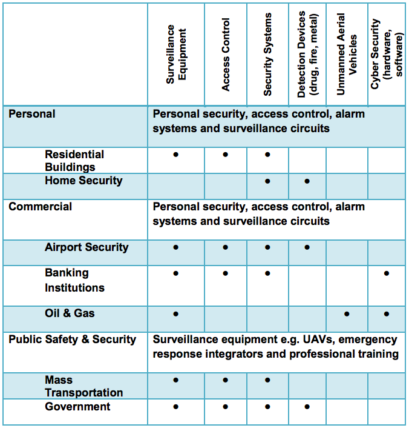
The Security Industry Association’s (SIA) online 2012 Brazil Security Market Report indicates the nation’s market for electronic security equipment is expected to be valued at US$1.8 billion by 2017. The current market breaks down as follows:
- Video Surveillance 39.6%
- Access Control 20.8%
- Intrusion Alarms 19.2%
- Fire Detection and Suppression 10.4%
- Electronic Surveillance 10%
Geographically, the market is concentrated in the South and Southeast regions of Brazil, where 63.4% of Security companies and 65.5% of personnel can be found. Outside these regions, other states such as Bahia, Ceará, Pernambuco, Goiás and the Federal District (due to purchases made by the GOB) also deserve some attention.
Cyber Security
Approximately 32% of businesses in Brazil claim to have been victims of cybercrime in 2012, the second most common form of economic crime. Brazil´s Computer Emergency Response Team (CERT) reported total cyber-attacks rose 16.5% to 466 million in 2012. The anti-virus firm Symantec estimates that losses due to cybercrime in Brazil in 2011 totaled R$15.9 billion (currently US$7.2 billion), with more than 28.3 million victims. Computer IT security experts at Norton, in 2011, named Brazil as one of the six countries in the world most affected by cybercrime due to a high incidence of phishing, malware, and “Trojan horse” virus attacks, often targeted at personal banking. Unfortunately, until recently, police efforts to fight cybercrime were complicated because it was not classified as a crime.
However, on November 30, 2012, President Rousseff passed two laws that designate cybercrime as a crime in the Penal Code as determined by (1) access of confidential commercial or private data through hacking or the sale of information obtained in this manner, and (2) the use of a credit card without the owner’s permission. These crimes are punishable by up to five years in prison. The Ministry of Defense is concerned about the risk of cyber-attacks during upcoming mega events such as the 2016 Olympics, and the current Minister of Defense, Celso Amorim, admitted before a public audience that Brazil suffers from fragility in the area of cyber security.
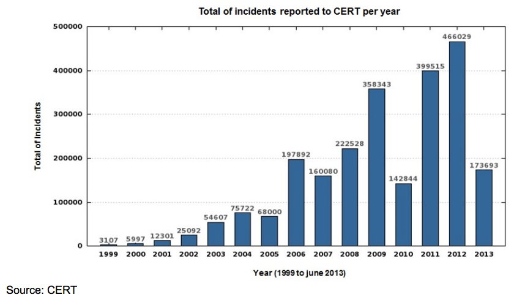
SESGE
The federal government has created a specific agency, SESGE, under the Ministry of Justice that is charged with overall security planning and coordination for the World Cup, the Olympics and other major events.
The best resources for information about public security, including announcement of public tenders, can be followed at the below website:
http://portal.mj.gov.br/data/Pages/MJ2774919DITEMID82884F3FB41C4E4E9CCC0E2B EAF60600PTBRNN.htm
Opportunities
Return to top
The Center of Cybersecurity (CDCiber) began operating in 2010, was officially inaugurated in 2012, and was created inside of the Brazilian Army by the Ministry of Defense to study cyberspace threats, establish national doctrine on the subject, improve and monitor the means of defense against these threats, including investments in hardware and software, and protect Brazilian cyberspace.
This organization works in collaboration with other government organizations including the president and federal police. The GOB has earmarked R$90 million (US$41 million) for cyber security; however as of July 2012, only R$8 million (US$3.6 million), or 8.9%, has been spent.
The Special Secretariat of Security for Major Events (SESGE) has an investment budget of R$1.17 billion (US$578 billion) for equipment that will include command and control centers, training, and security items such as mobile police stations, surveillance equipment and software.
In 2012 and 2013, SESGE announced international tenders for equipment and services such as manned observation platforms, unmanned observation platforms, anti-bomb robots, video-walls, radio communications, media intelligence monitoring, video-monitoring, geo-reference systems and cyber security software.
At the state level, local police agencies through the State Public Security Secretariats are investing in supplementing the acquisitions announced by SESGE. As a result, state fire departments and law enforcement agencies are upgrading their radio communication systems, armored vehicles fleets and video monitoring systems.
As a result of steady reduction of electronic monitoring devices’ prices, the Brazilian Association of Private Security Guards detected an increasing deployment of electronic security and monitoring devices in the field of private security as a way to leverage and support private security companies in providing their service -- in some cases, replacing the presence of a private guard.
Without considering the effectiveness of this market trend, local market experts indicate a potential opportunity in the use of electronic devices in support of local private security companies, especially for those companies that have a good critical mass of customers and could act as "cross selling " dealers of new products and services for their existing clients.
With the growth of the economy and the value of cargo transported, such as pharmaceuticals and electronics, there is increasing demand for armed logistics services.
The use of non-lethal weapons such as stun guns has been growing year by year, showing a market tendency across both the public and private sectors.
Market Entry
The largest clients in this market are financial and commercial institutions and the GOB, which supplies the national public security sector. As in most other industry sectors, to be successful in Brazil foreign manufacturers must either establish themselves within the country or have a local representative.
The GOB and the private sector prefer to contact Brazilian representatives and do all the import procedures through them, instead of contacting the foreign suppliers directly. It is also important to have a distributor who can offer after sales and maintenance services, replacement parts, and repairs.
Due to the size of the country, most distributors and systems integrators cover only specific regions. They are usually small to medium-sized companies that lack financial capability to invest heavily in product promotion, technical training, and translation of technical manuals. Therefore, it is often important that a U.S. company provide financial support for some of those activities as part of the terms and conditions of the partnership agreement. U.S. companies who have seen the greatest success in Brazil have worked closely with their agents and distributors, investing heavily in market development, product promotion, and personnel training.
The Brazilian Army, through its Supervisory Board of Controlled Products, exerts the control over activities involving the acquisition, transportation, importation and exportation of small arms and light weapons, ammunition, and other related public security products including non-lethal equipment as well. Prior to exporting any law enforcement related products, our office advises U.S. companies to contact the U.S. Department of Commerce for information regarding products that fall into the Brazilian Army control.
Prospective Buyers
The Brazilian government will invest heavily in high tech equipment to provide adequate security for major events such as the World Cup and the Olympic Games. Technical literature must be translated into Portuguese. Although there are no official regulations and technical standards for electronic security equipment, ABESE issues sector-specific certification called the “Yellow Stamp of Quality”. The certification is issued by ABESE to companies in the electronic security sector, including manufacturers, distributors, and service companies.
During the 2014 World Cup FIFA, through the Safety General Office of the 2014 Organizing Committee, was responsible for private security in the perimeter of private places such as: outer and inner perimeter of indoor stadiums; FIFA /COL offices; teams’ and FIFA members´ hotels; and official training fields. If, for any reason, the security inside a stadium or other place under FIFA's responsibility was not guaranteed by this entity, then public safety authorities took control of these areas.
The 2016 Rio Organizing Olympic Committee will also pay special attention to providing security for the Olympic venues, following the same security policy established by FIFA wherein private companies will be in charge of providing security services in the inner perimeter of the stadiums. The procurement process for the Olympic Games is available for viewing at the Rio 2016 Olympic Committee Website (http://www.rio2016.org/). U.S. Companies interested in participating in the bidding process are required to preregister at the Supplier Portal.
Web Resources
Return to top
- ABESE - Brazilian Association of Electronic Security Equipment http://www.abese.org.br
- ASIS International, Brazil Chapter http://www.asisbrasil.org.br/
- ABSEG – Brazilian Association of Security Professionals www.abseg.com.br
- FENAVIST – National Federation of Security Companies www.fenavist.org.br
- Security Center of Studies, Response, and Incidents http://www.cert.br
- Special Secretariat of Security for Major Events http://sesge.mj.gov.br/
- Justice Department http://portal.mj.gov.br/data/Pages/MJ2774919DITEMID82884F3FB41C4E4E9CC C0E2BEAF60600PTBRNN.htm
Sporting Goods and Recreation
Overview
Return to top
Brazil’s sporting goods and recreational equipment market today is mostly supplied by small to medium sized domestic manufacturers. Imports represent approximately 30% of the market. Imports from the United States, as well as from Europe and Japan, will grow as demand for quality and certified products accelerate. Although at a much smaller scale, imports from Asia may grow rapidly, due to aggressive pricing.
Sub-Sector Best Prospects
Return to top
Summer Olympic Games 2016
The U.S. Commercial Service believes that the 2016 Summer Olympic Games presents a strong possibility for U.S. exporters of sporting goods equipment and services. The 2016 Rio Olympic Organizing Committee will pay special attention to sustainable development in their procurement announcements. U.S. firms that are not invested in Brazil may still have a strong incentive to bid on these projects, especially firms that have had experience supplying sporting goods or specialized event-related services to previous Olympics or major sports events and can address Brazil’s sustainable development goals within their bids.
The Brazilian Constitution provides that all governmental purchases at Federal, State and Municipal levels should be contracted through public tenders. This is regulated by the Brazilian Bid Law (Law 8,666/1993). The procurement process with a timeline of when specific procurements are to be announced for the Olympic Games was announced by the Organizing Committee in mid-2013 on the Rio 2016 Olympic Committee Website http://www.rio2016.org/
The Rio 2016 Olympic Organizing Committee released a supplier registration site, known as the “Supplier Portal”: http://portaldesuprimentos.rio2016.com/sustentabilidade/ Foreign and domestic companies can pre-register at this website. The U.S. Commercial Service encourages U.S. companies to pre-register to alert the Committee to their interest in becoming an official supplier. Companies that are pre-registered through the portal will receive information as specific bids are announced.
The majority of requests for proposals will occur between 2014 and 2015. In order to ensure a transparent process, the Supplier Portal will be the only means for foreign and domestic companies to register and receive information about upcoming bid announcements.
Boats, Sailing and Water Sports
There is considerable potential for water sports equipment in Brazil. This segment is projected to grow at a rate of 10% over the next three years. Natural conditions such as good weather and the extensive Atlantic coast line (over 5,000 miles long), as well as inland waterways, make this a large market.
The Brazilian boat fleet is comprised of about 30,000 motorboats, and about 5,000 sailboats of over 4.8m (16ft). The estimated total figure for motorboats and sailboats docked in marinas across Brazil is 40,574 and 6,430, respectively. The majority of boats in Brazil are runabouts and yachts, representing 83.64% of the market; while the market share for sailboats is 16.36%. Roughly 60% of motorboats are in the range of 7.9m (26ft), while most craft in marinas range from 6m-7.9m (20ft-26ft). Over 50% of sailboats are up to 7.9m (26ft).
Brazil lacks a strong supply chain of parts and accessories. Electronics used in boats and sailboats, such as radar and GPS, is the most attractive market for U.S. companies. Over 90% of such products are imported from the United States.
The leisure marine infrastructure comprises 480 regulated marinas across Brazil’s five regions, of which 13% have opened in the last seven years. These represent 10% of berthing spaces available in the market. The majority of the marinas are small, most have been in operation for a long time, and some have invested in upgrades to meet growing demand. The Government of Brazil lacks a legal framework to oversee the construction of marinas, while high taxation on imported marine equipment such as travelifts and trailers is seen as a barrier for the development of marinas.
Boatbuilding companies are distributed across the country and focus on the domestic market. There are 120 registered boatbuilding companies manufacturing boats of 4.8m (16ft) or greater. Seventy percent of boatbuilding companies produce motorboats, and 15 percent of them have models ranging from 15m (50ft) and above. Only 13% of Brazilian boatbuilding companies produce sailboats.
Two great potential niches in water sports are surfing and diving. The local industry produces excellent equipment; however, this could prove to be an attractive market for U.S. companies due to superior designs and the prestige of U.S. brand names. Diving is an emerging sport and is increasingly popular among Brazilians as a result of beautiful natural locations where scuba diving is very popular. Tourist locations that offer various beach-related activities are also creating a demand for snorkeling equipment. Other high demand products include jet skis and equipment for windsurfing, water skiing and canoeing.
The water sports market is less-price sensitive than the larger sporting good segments because prospective consumers tend to belong to higher income brackets. These consumers also tend to have more leisure time. This market is expected to increase with the rising number of beach resorts being constructed along the north and northeastern coasts of the country.
ACOBAR - The Brazilian Boat Builders Association is generating interest with its “Venha Navegar” (Come Boating) outreach campaign to attract new boaters.
Fitness Equipment
Brazil is Latin America’s fitness industry leader, and currently ranks fourth in the world in terms of revenues. Less than 10% of Brazil’s population exercises regularly, whether at home or in gyms. However, this situation is slowly changing because of concerns about obesity and sedentary lifestyles. Gym membership is gaining greater priority in household budgets, and increasingly seen as a status symbol. Also, employers and health insurers are beginning to worry about employee health as it relates to their work-life balance, quality of life and on-the- job productivity. As a result, companies are purchasing equipment for in-house gyms and encouraging employees to take advantage of subsidized gym membership.
Brazil’s fitness market can be broken down into a number of sub-sectors:
Spas and Hotels - With 10-15% growth projections over the next three years, spas and hotels demonstrate potential for fitness equipment. More tourist spas and hotels are opening throughout Brazil as a response to heightened demand for the 2014 and 2016 major sporting events. In fact, a 6.8% growth in the number of hotels is anticipated for these events.
Fitness Centers / Social Clubs - Intense competition has prompted this segment to improve their facilities and invest substantially in new equipment and activities, especially in gyms, which represent approximately 92% of the total market. It should be noted that some 95% of gyms are locally-owned, signaling growth opportunities for US-based fitness facility companies. Additionally, large franchised gyms, some owned by foreign investors, are increasingly present in Brazil and should not be ignored by U.S. firms, whether in joint-ownership, partnership or franchise partnerships.
Home Market - The home market for exercise equipment has high growth potential. Time constraints, traffic and concern about crime are driving more Brazilians to opt for at-home exercise. This segment is also expanding because newly constructed apartment buildings are expected to offer sporting or exercise facilities as an amenity to attract tenants. U.S. equipment is often favored.
Hospitals - Though this segment has not been very well explored by U.S. companies, the potential for U.S. made treadmills and other specialized physical therapy equipment in health care and rehabilitation facilities may be an option.
Corporate - Multinational corporations are increasing their spending on fitness equipment to improve employee morale and health. These enterprises tend to purchase imported products as they look to purchase the highest quality equipment.
Safety Equipment
Participation in extreme sports such as mountain climbing, rock climbing, bicycling, skate boarding, roller skating, parachuting, and hang-gliding is increasingly popular. As a result, more safety equipment is necessary to support this market.
Opportunities
Return to top
The best means of entering the Brazilian market is by a tiered distribution channel agreement with a local established partner. Trade fairs are an excellent opportunity to meet potential business associates and should be attended by all who are considering entering the Brazilian sporting goods market. In choosing a partner, it is crucial to bear in mind the ability of the party to perform after- sales service such as maintenance of equipment. Additionally, companies should take into consideration the partner’s capacity for geographic distribution, as well as its ability to offer financing options to potential clients. Other strategies to penetrate the market include identification of an agent. However, these are rarely going to be exclusive, which might pose a conflict of interest.
Web Resources
Return to top
- ACOBAR – Brazilian Association of Boat Manufacturers - http://www.acobar.org.br
- IHRSA – http://www.ihrsa.org
- FIFA and Olympic Games Organizing Committee: http://portaldesuprimentos.rio2016.com/sustentabilidade/
- U.S. Commercial Service Brazil World Cup and Olympics reports: http://export.gov/brazil/games/index.asp
For more information, please contact Industry Specialist Patricia Marega: patricia.marega@trade.gov.
Patrick Levy is Commercial Specialist liaison for the Olympic Games. He can be contacted at Patrick.levy@trade.gov.
Telecommunications
Overview
Return to top
With approximately a third of the region’s population, Brazil is Latin America’s largest telecommunications market. The Brazilian telecom services market reached US$99 billion, up 6.3% versus the previous year. By 2017, the market is forecasted to reach US$120 billion.
Regulatory and legislative adjustments have been and will continue to be essential to sustained growth in the telecommunications sector. The approval of a new framework that allows telecommunications companies to offer cable and internet protocol television services is already reducing prices, accelerating adoption and increasing competition. Likewise, the National Government Broadband Plan is already spurring the expansion of broadband services throughout Brazil. However, high taxes are a persistent problem in hindering growth.
As for manufactured equipment, the market reached US$11.6 billion and industry expects 4% growth in 2014. Nearly all of the world's largest telecom OEMs have plants in Brazil, and most of them have global supply chains for items like components, instrumentation, processing and telecommunications equipment. Cutting edge technologies and solutions have demonstrated viable market opportunities.
The 2014 World Cup and 2016 Olympics assure that Brazil will continue to receive global attention. “4G” has already been launched, although the infrastructure needs improvement to raise the quality of services. The uptake of services, however, will begin gradually, with low initial adoption hampered by the high cost of devices.
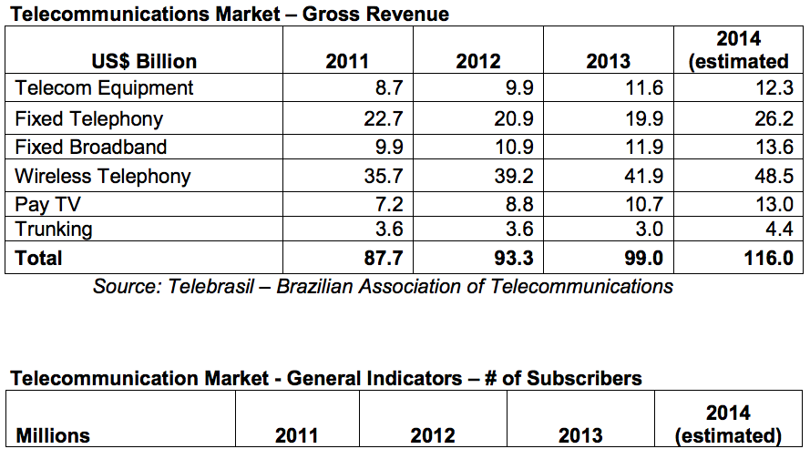
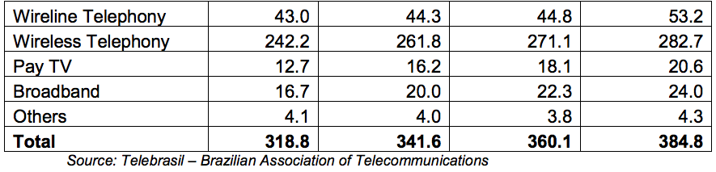
Sub-Sector Best Prospects
Return to top
Cellular Phone Services: 2013 represented a milestone year for the Brazilian mobile market, when it reached a density of more than 135 lines per 100 inhabitants. It was a year of transition, as well, with the voice market reaching maturity and operators increasing their focus on mobile broadband, which grew 48% in 2013. In the near future, mobile operators will not be able to count on the growth of their cellular base to leverage an increase in revenues. Voice revenues are likely to drop, pressured by decreases in the prices charged for on- net calls and by a drop in interconnection revenue determined by the Brazilian regulatory agency Anatel.
Considering this scenario, operators will continue to focus on data services to stimulate smartphone sales and expand their 3G and 4G networks. While GSM represents more than 55% of mobile lines, migration from GSM handsets to 3G will accelerate through 2014. Nevertheless, 3G handsets are not likely to overtake GSM devices until 2015. Competition may become stronger due to the introduction of Nextel’s 3G operations, whose biggest growth comes from the postpaid segment, which in 2013 increased at a faster rate than prepaid. Some new players like Virgin Mobile have just begun mobile virtual network operator services (MVNO) in Brazil, which could then entice other companies to enter the market and help to establish the MVNO market. However, the current market share ranking of the cellular operators is expected to remain the same with Vivo likely to keep its leadership, followed by TIM, Claro and Oi.
Wireline Market: For the fixed services market, which includes fixed telephony, broadband and Pay-TV services, the focus will be on increasing investments in Fiber-to-the- Home (FTTX)-based fixed broadband networks. Fixed broadband grew 12% in 2013 and is expected to continue growing at an annual rate of 10%. Pay-TV, which increased 16.8% in 2013 due to Direct-to-Home TV, is likely to keep this growth rate in 2014, together with large growth expected for cable TV and Internet Protocol TV services.
Broadband/Satellite: With a promising economic outlook and rising prosperity, demand for broadband in Brazil continues to soar. Broadband operators have been struggling to meet the growing demand, which has led to system overload problems. The Government of Brazil (GOB) has been drafting plans to spread broadband across the country in one of the world's largest infrastructure projects. Two major factors have inhibited the growth of broadband in Brazil: shortage of fixed-line infrastructure and broadband prices, which are too high for the Brazilian socio-economic environment. On the other hand, the growth of mobile broadband in Brazil is increasing at a rate of 12% this year. The largest wireless telecom carriers (with parent companies in parentheses) and respective market share are shown below:
Vivo (Telefônica) 28.6%
Tim (Telecom Itália) 27.0%
Claro (América Movil) 25.1%
Oi (Private Brazilian Funds & Portugal Telecom) 18.5%
In 2013, Brazil decided to form its own satellite company to provide a civil-military satellite communications system and to lay the groundwork for assuring Brazil’s future satellite autonomy. The GOB founded Visiona Tecnologia Espacial, a company jointly owned by Embraer (51%) and Telebras (49%). The initial objective is the integration of the government’s Defense and Strategic Communications Geostationary Satellite (SGDC) system, which addresses the satellite communications needs of the federal government. This includes the National Broadband Program (PNBL) and a broad spectrum of strategic and defense communications. The SGDC will also signal Brazil’s entry into the high-throughput satellite market, as it will carry 50 Ka-band transponders with an aggregate 80 gigabits per second of throughput capacity. Brazil’s Ministry of Communications will use this satellite to extend Internet access throughout the country.
Media: Free-on-the-air broadcast (non-cable) television companies are subject to a regulation that requires 80% of their programming content to be of Brazilian origin. Foreign cable and satellite television programmers are subject to an 11% remittance tax; however, the tax can be avoided if the programmer invests 3% of its remittances in co-production of Brazilian audio-visual services. President Rousseff signed a new law in September 2011 encompassing the subscription television market, including satellite and cable TV. Under the new law, telecom companies will now be allowed to offer television packages with their service. The law also removed the previous 49% limit on foreign ownership of cable TV companies.
Opportunities
Return to top
The use of social media is exploding in Brazil. It is the third largest market for Facebook, the fifth for Twitter, and first for LinkedIn with 6 million professional users. The Brazilian mobile consumer is eager to play games and use apps. Apple opened its first store in Rio de Janeiro at the end of 2013 and intends to open more stores in the largest cities of Brazil. The Apple App Store is already popular in Brazil; its year-on-year revenue growth outpaced that of the U.S. App Store. Brazilian app sales grew 83% in the last year, vs. 44% growth in the U.S. Brazil ranks sixth worldwide for App Store revenue growth.
Data cost prices are dropping in Brazil, as carriers offer competitive pricing plans. With prepaid plans as the most popular model, the major carriers are offering data plans from 20 to 25 cents per day. Some carriers are even offering no-charge access to data-heavy services like mobile video streaming. Thanks to government support in the form of auctions that encourage telecom carriers to purchase 4G bandwidth at competitive prices, Brazil is laying the groundwork for widespread 4G access. All four of Brazil’s major telecom companies obtained licenses for 4G high-speed Internet capabilities in the recent auction. Over the long run, these telecoms companies are expected to offer 4G in all Brazilian cities with a population of 100,000 or more by the end of 2016.
Brazil is developing the conditions to have a dominant mobile market: the government is supporting new initiatives, important OEMs have plants in the country, and the consumer base is massive. As its place in the global mobile market matures over the next few years, developers, entrepreneurs and investors would be wise to obtain a stake in this mobile frontier before the competitive landscape becomes saturated.
Web Resources
Return to top
Trade Events:
- SET EXPO Convention and Trade Show
August 24-27, São Paulo
- Futurecom International Congress and Trade Show
October 13-16, São Paulo
Websites:
Government of Brazil:
- ABINEE Brazilian Electrical and Electronics Industry Association http://www.abinee.org.br
- ANATEL Brazilian Telecommunications Agency http://www.anatel.gov.br
- Telebrasil Brazilian Association of Telecommunications http://www.telebrasil.org.br
For more information about export opportunities in this sector, please contact Industry Specialist Ebe Raso: ebe.raso@trade.gov
Transportation
Overview
Return to top
Brazilian transportation infrastructure faces many challenges. Roads and ports need to be upgraded. Trucks hauling cargo on roads are the most used method of transportation. Despite the existence of several rivers, waterways are rarely used, except in the Amazon region, where rivers are usually the only way to access many isolated points. Railroads are few and uncompetitive. The use of trains for long distance transportation of passengers is restricted to a few urban tourist routes, while cargo transportation is mostly restricted to raw minerals.
According to the Government of Brazilian (GOB), investments needed to reduce bottlenecks in the transportation sector in the medium and long term will total US$220 billion between 2008 and 2023. Investments include extension of highways, the interconnection of the North-South regions with the Southeast region, ferries to cover North-South regions, and port construction.
Major international sporting events including the 2014 World Cup and 2016 Olympics have spurred Brazil to act quickly to improve its transportation infrastructure. The government is developing new concessions and public-private partnerships, leveraging the private sector in a way that is mutually beneficial to investors and the government.
Between 2012 and 2013, President Rousseff launched the Logistics Investment Program, an initiative designed on the basis of strategic partnerships with the private sector and focused on renewal and integration of Brazil’s transportation network. The goal is to meet growth demands of a country with continental dimensions. The Logistics Investment Program consists of a wide concession set in transportation logistics, which implies large private investment in infrastructure. Since 2013, the GOB has been staging concession auctions for large projects such as highways (7,500 km), railways (10,000 km) and ports.
Sub-Sector Best Prospects
Return to top
Total investment for logistics for roads and railways will be as follows:
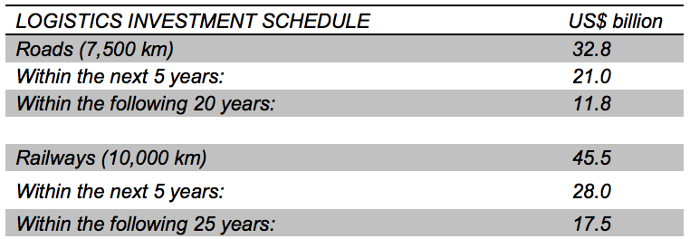
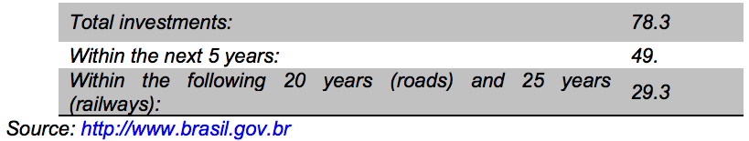
Logistics: Brazil has one of the highest logistics costs in the world. Market analysts estimate that the distribution cost structure represents approximately 31.8% of logistics cost. This includes management, warehousing, inventory, legal requirements and transportation costs. Logistical costs represent an average of 20% of Brazil’s gross domestic product (GDP), twice that of the United States. The objective of the GOB’s Logistics Investment Program is to provide Brazil with a transportation system that reflects its continental scale. The project faced some challenges initially, but will use an investment model that favors partnerships between public and private sectors. Concessions will be used for highway projects, while public-private partnerships will be developed for railway projects.
Roads: Highways represent more than half of all public transportation infrastructure in Brazil, followed by railways with 25%, waterways with 17% and others, such as air transportation. As the chart above indicates, the GOB plans to spend US$32.8 billion in the next five years, with another US$11.8 billion in the following 20 years. This amount will be used to create and improve roads in the five Brazilian regions (North, Northeast, Midwest, Southeast, and South). This process includes not only the construction of bridges and paths, but also their paving, duplication, maintenance and preservation. Brazil will also open concessions for some major highways in the northern and northeastern states of Minas Gerais, Bahia, Espírito Santo, Goiás and Tocantins.
Railways: Brazil has less than half as many kilometers of railroads as do either China or India. Transportation by roads represents 61% of total freight, while that of railroad comprises 21%. Rail transportation has proven to be up to 30% cheaper and more efficient than paved roads. To make the country more competitive, the federal government plans to invest US$46 billion to build, repair and modernize Brazil’s railroads. US$28 billion will be invested within the next five years and US$17 billion in the 25 years following (see above chart). Such investments would result in 10,000 kilometers of expanded capacity. The objective is to improve the connection between the North and South regions by connecting preexisting railways and by building new ones.
Ports: In the past year, the Brazilian Government announced a concession program to attract some US$25 billion in investments for Brazil’s aging port infrastructure within the next four years. The main objective is to increase Brazil’s competitiveness, reduce barriers to market entry, modernize port management, increase trade, and reduce the high cost of doing business in Brazil. The government plans to re-auction 55 public terminals whose operators entered into contracts with the GOB before the 1993 Ports Law was approved. The concessions will not be awarded on the basis of the highest bidder, but rather on the most cargo moved at the lowest price. Port operators will be allowed to end the practice of differentiating between their own cargo and that of a third party. In effect, this change will allow privately-owned port operators to compete for container traffic for the first time. A national dredging plan of US$1.8 billion was also announced in the same ceremony; this may offer opportunities to U.S.-based dredge manufacturers and service providers. All of these investments will enable the reduction of tariffs and freight cost, contributing in turn to reduced cargo transportation by road.
Waterways: Brazil’s use of transportation by waterways is small when compared to other countries. For example, 25% of cargo is transported by river in the United States and 35% in Canada. In Brazil, only 14% of cargo is transported by this method. Brazil has enormous potential for river traffic with approximately 63,000 km of rivers and lakes, of which 45,000 km are navigable. The potential is still largely untapped, however, with navigation occurring in only 15,000 km, with a greatest concentration in the Amazon region. Currently, the largest share of investments comes from the public sector, representing 97% of the funds (or about US$3 billion per year). This situation is expected to change by the end of 2022, when mixed investments (private and public) may reach an average annual investment of US$ 4.6 billion.
Public Transportation The current metropolitan rail system transports about six million people daily throughout all major Brazilian cities. Research indicates that that figure should equal the number of people transported by the metro system in the metropolitan area of São Paulo alone. According to a study done by ANTP (National Association of Public Transportation), the social cost incurred by the city of São Paulo due to its current insufficient public transportation system is about R$40 billion a year (US$22.22 billion). Furthermore, the study showed that 63% of cities with more than 300,000 residents use illegal, unsafe and unreliable means of transportation; millions of people spend three to six hours a day traveling to and from work or school. These many problems in the current system signal opportunities for growth and investment, including for U.S. companies.
Opportunities
Return to top
Brazil has historically invested in other sectors, to the detriment of infrastructure; resulting in an infrastructure deficit. Recent growth and new opportunities arising in Brazil are shifting the focus to infrastructure. The hosting of international events such as this year’s World Cup and the Summer Olympic Games in 2016 is compelling Brazil to develop a modern transportation infrastructure.
Despite the complexities of doing business in Brazil, the outlook is good for business development in the region; there is much room for growth between U.S. companies and Brazil in particular. The United States is Brazil’s third largest trading partner (after the EU and China).
Market analysts agree with the GOB’s approach of working with the private sector in order to improve the nation's roads, railways and ports. This approach could help Brazil focus on shorter-term goals, such as the Olympic Games, with long-term benefits. Today, only 14% of Brazil's roads are paved; traffic congestion in the large cities is a serious problem. Long queues of trucks outside of ports cause delays for imports and exports. In a recent study by the World Economic Forum, Brazil ranked 119th out of 142 countries in terms of road quality and 130th in terms of quality of its ports.
Although there are major export opportunities in Brazil, there are also substantial challenges, including relatively high tariffs with a heavy and complex customs system, tax structure, and regulatory framework. Additionally, U.S. exporters face expanding GOB involvement in the marketplace to promote the development or preservation of those Brazilian industries which the government deems to be strategic. This includes increased use of local content and technology transfer requirements.
Sales to the Government: GOB procurement rules apply to purchases by government entities and state-owned companies. Brazil has an open competition process for major government procurements. The Brazilian government may not make a distinction between domestic and foreign-owned companies during the tendering process; however, when two equally qualified vendors are considered, the law’s implementing regulations provide for a preference for Brazilian goods and services. Price is to be the overriding factor in selecting suppliers. However, the law's implementing regulations also allow for the consideration of non-price factors, giving preferences to certain goods produced in Brazil and stipulating local content requirements to be eligible for fiscal benefits. Additionally, nearly all bids require the establishment of a local representative for any foreign company bidding.
Web Resources
Return to top
Trade Events:
- Infraportos South America
http://www.infraportos.com.br/
October 28-30, 2014 Sao Paulo
- TranspoQuip Latin America
October 28-31, 2014 Sao Paulo
- NT Expo / Rail Expo
http://ntexpo.com.br/en/
November 11-13, 2014 Sao Paulo
- Intermodal South America
http://www.intermodal.com.br/en/
April 7-9, 2015 São Paulo
Websites:
ANTP - National Association of Public Transportation www.antp.org.br
ANTF – National Association of Railway Transport http://www.antf.org.br
ABIFER – Brazilian Association of Railroad Industry http://www.abifer.org.br
ABTP –Brazilian Association of Port Terminals http://www.abtp.org.br
For more information about export opportunities in this sector, please contact Industry Specialist Ebe Raso: ebe.raso@trade.gov
Travel and Tourism
Overview
Return to top
Brazil has recently surpassed Germany as the 3rd largest source of overseas visitors to the United States (excluding Canada and Mexico), and is the top arrivals market from South America. Brazil accounts for more than 30% of all arrivals in the United States from that continent.
With both the fifth largest land mass and population in the world, recent economic growth, and a growing middle class, the nation of Brazil accounts for ever-increasing numbers of visitors to the US; totals are expected to continue significantly increases for years to come. At a major travel and tourism awards event in Brazil in 2013, the U.S. was recognized as the #1 destination of choice for first-time Brazilian international travelers and the destination of choice for Brazilians that have yet to make their first trip abroad.
In 2010, the U.S. Department of Commerce’s Office of Travel and Tourism Industry (OTTI) reported that Brazil had a 34% increase in the number of arrivals to the United States, reaching a record 1,197,000 visitors. The rate of growth continued in 2011, when 1,508,279 Brazilians visited the United States, representing an increase of 26% over the previous year. Arrivals from Brazil in 2012 reached 1,791,103 visitors, an 18.8% increase over 2011. In 2013, more than 2 million Brazilian travelers visited the U.S., a 15% increase over 2012:

Spending by Brazilian visitors to the United States continues to grow every year. In 2012, Brazilians accounted for US$9.3 billion in expenditures while staying in the U.S., or more than US$5,000 per visitor. Expenditures by Brazilians in the United States in 2013 reached a record-breaking number of $10.5 billion.
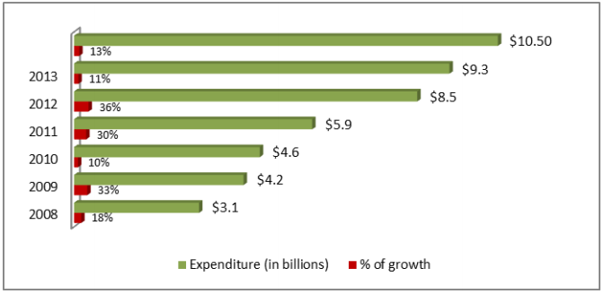
The US Department of Commerce expects the total number of Brazilian visitors to the U.S. will increase to even higher levels by the end of 2014. In 2012, the State Department added more consular officers at its visa issuing posts in Brazil to speed up the visa application process.
It is notable that São Paulo is one of the top three visa issuing U.S. Embassy/consulate posts in the world. In 2013, Brazil issued more than 1.1 million U.S. visas; more than 50% of those visas were adjudicated at Consulate São Paulo.
The table below shows the top 20 countries that sent tourists to the United States in 2013:
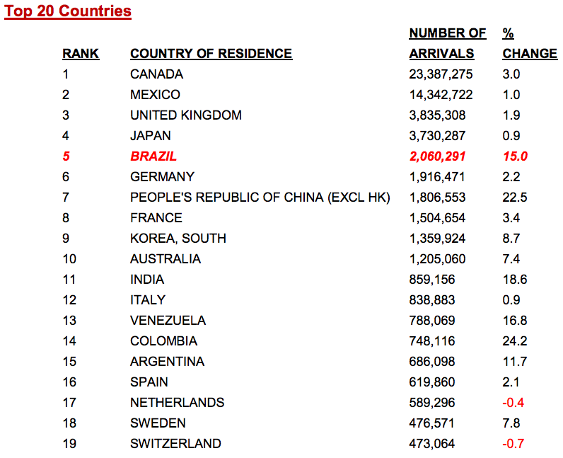
Sub-Sector Best Prospects
Return to top
The U.S. is Brazil’s second most popular travel destination, just behind neighboring Argentina. More Brazilians are traveling to the U.S. because of promotions offered by U.S. companies and the increasing spending power of the Brazilian middle class.
Brazil ranked fifth worldwide in country of origin of visitors to the U.S. during 2013. The Brazilian tourist’s most preferred activities when visiting the U.S. (showing percentage of activities preferred) include:
- Shopping 95%
- Dining in restaurants 89%
- Historical sites 51%
- Amusement/theme parks 47%
- Sightseeing 40%
- Art Gallery/Museums 32%
- Concerts/Plays/Musicals 30%
- Small towns 21%
- Cultural heritage sites 21%
- National parks 19%
The most popular destinations for Brazilian visitors in the U.S. are Florida (Miami and Orlando), New York City, Los Angeles, and Las Vegas. Washington, DC, New Orleans, Massachusetts, San Francisco and Texas are popular secondary destinations.
The high season for Brazilian travel to the U.S. is December through January, and July during school holidays. Shorter trips during public holidays are also very popular. Fly and drive trips are becoming increasingly attractive to Brazilian families wishing to drive through Arizona, California, Nevada, Colorado, Florida, Louisiana or New England.
Brazil’s Travel & Tourism Distribution System
While wholesalers are key travel distributors, Brazil’s has 10,000 travel agencies with 60% of agencies issuing international tickets. Many travel agencies also serve as tour operators. As a result, the competition is stiff, prompting many agencies to upgrade technologies to improve efficiency.
Associations are important in Brazil’s travel industry. The Brazilian Tour Operators Association (Braztoa), formed by 70 operators, is the main association of tour operators. The Brazilian Travel Agencies Association (ABAV) has approximately 3,500 members responsible for just over 80% of travel sales. The majority of Brazil’s visitors to the U.S. go through a travel agency, while others go directly to airlines to purchase tickets through the Internet. Others use state/city travel offices.
Opportunities
Return to top
Travel and tourism promotion in Brazil has seen success over the past two decades. Brazil’s large and diverse population means the country has a broad set of interests from which U.S. destinations can recruit travelers. For a U.S. destination, finding the hook for potential Brazilian travelers could lead to great returns.
Those working in tourism may want to capture some of the increasing niche markets of Brazilian travelers to the United States. Among Brazilians traveling with the specific aim of shopping, agents should consider tours specifically designed to cater to soon-to-be mothers and wedding shoppers. Officers also indicated that modest Brazilian shoppers find inexpensive accommodations in the outskirts of major cities and even take advantage of outlet shopping. Another growing market is the adventurous traveler who aspires to trek the famous Route 66 or participate in motorcycle road tours in the South.
Among first time travelers, Florida remains a popular destination, but some are making New York City, Los Angeles, San Francisco, New Orleans or Las Vegas their first destination as well. Within this group, many have specific intentions to drive along the California coast, or drive from Los Angeles to Las Vegas. Married Brazilian couples have also renewed their vows in various themed wedding chapels in Las Vegas.
Amongst young professional and business travelers, many opt to use their 30 days of vacation for an extended stay in the United States. Many take a light load of English language courses as incidental to tourism. Hours spent outside of class are dedicated to exploring a major city and getting a taste of American living before returning home. Agents should also take note of hobbyists and professional shoppers traveling to the U.S. specifically to purchase equipment, i.e., photographers, disc jockeys, artists, and farmers. Chicago, for example, is a major destination for architects and building lovers.
Several Brazilian travelers obtain U.S. visas with the specific purpose of transiting to destinations in Canada, Mexico, Japan and Caribbean cruises with the intention of adding a quick stay in the U.S. for shopping. Agents may want to capture this market to facilitate the needs of these travelers, who simply want quick and easy access to shopping and dining.
Each year, the U.S. Commercial Service in Brazil organizes the VISIT USA shows. This is the most effective and affordable vehicle for the U.S. travel trade industry to increase its market exposure in Brazil. VISIT USA 2014 Brazil took place in Rio de Janeiro, São Paulo and Campinas (interior of the state of São Paulo) in May 2014, and was visited by over 1,600 select travel agents, tour operators and media visitors in all three cities.
Web Resources
Return to top
For more market research reports, please visit: http://export.gov/mrktresearch/index.asp
For more information about export opportunities in this sector, please contact Industry Specialist Jussara Haddad: jussara.haddad@trade.gov
Return to table of contents
Chapter 5: Trade Regulations, Customs and Standards
Import Tariffs
Trade Barriers
Import Requirements and Documentation
U.S. Export Controls
Temporary Entry
Labeling and Marking Requirements
Prohibited and Restricted Imports
Customs Regulations and Contact Information
Standards
Trade Agreements
Web Resources
Import Tariffs
Return to top
Imports are subject to a number of taxes and fees in Brazil, which are usually paid during the customs clearance process. There are three taxes that account for the bulk of import costs: the Import Duty (II), the Industrialized Product tax (IPI) and the Merchandise and Service Circulation Tax (ICMS). In addition to these taxes, several smaller taxes and fees apply to imports. Note that most taxes are calculated on a cumulative basis.
Brazil and its Southern Common Market (Mercosul) partners, Argentina, Paraguay, and Uruguay implemented the Mercosul Common External Tariff (CET) on January 1, 1995. Venezuela became a full member of Mercosul in 2012. Each country maintains a separate exceptions list of items for tariffs.
In 1995, Brazil implemented the Mercosul Common Nomenclature, known as the NCM (Nomenclatura Comum do Mercosul), consistent with the Harmonized System (HS) for tariff classification. Information about the NCM can be found at:
http://www.brasilglobalnet.gov.br/frmprincipal.aspx
The Government of Brazil (GOB) established a computerized information system to monitor imports and to facilitate customs clearance known as the Foreign Trade Integrated System (SISCOMEX). SISCOMEX has facilitated and reduced the amount of paperwork previously required for importing into Brazil. Brazilian importers must be registered in the Foreign Trade Secretariat’s (SECEX’s) Export and Import Registry and receive a password given by Customs to operate within the SISCOMEX system. SECEX is a branch of the Ministry of Industrial Development and Commerce (MDIC). The SISCOMEX online registry creates electronic import documents and transmits information to a central computer. More information is available at:
http://www.receita.fazenda.gov.br/Principal/Ingles/VerSão2/default.asp
Import Duty
The Import duty (abbreviated in Portuguese as II) is a federally-mandated product-specific tax levied on a CIF (Cost, Insurance, and Freight) basis. In most cases, Brazilian import duty rates range from 10% to 35%. MDIC publishes a complete list of NCM products and their tariff rates on its site: http://www.brasilglobalnet.gov.br/frmprincipal.aspx
Industrialized Product Tax (IPI)
The IPI is a federal tax levied on most domestic and imported manufactured products. It is assessed at the point of sale by the manufacturer or processor in the case of domestically produced goods, and at the point of customs clearance in the case of imports. As part of the federal government’s efforts to support local producers, IPI rates between imported and domestically produced goods within the same product category may differ. The IPI tax is not considered a cost for the importer, since the value is credited back to the importer. Specifically, when the product is sold to the end user, the importer debits the IPI cost.
The Government of Brazil levies the IPI rate by determining how essential the product may be for the Brazilian end- user. Generally, the IPI tax rate ranges from 0% to 15%. In the case of imports, the tax is charged on the product's CIF value plus import duty. A product’s IPI rate is directly proportional to its import tariff rate. As with value-added taxes in Europe, IPI taxes on products that pass through several stages of processing are reduced to compensate for IPI taxes paid at each stage. Brazilian exports are exempt from the IPI tax. Brazilian Customs publishes the complete list of NCM products and their IPI tariffs at: http://www.receita.fazenda.gov.br/Principal/Ingles/VerSão2/default.asp
Merchandise and Service Circulation Tax (ICMS)
The ICMS is a state government value-added tax applicable to both imports and domestic products. The ICMS tax on imports is assessed ad valorem on the CIF value, plus import duty, plus IPI. Although importers have to pay the ICMS to clear the imported product through Customs, it is not necessarily a cost item for the importer because the paid value represents a credit to the importer. When the product is sold to the end user, the importer debits the ICMS, which is included in the final price of the product and is paid by the end user.
Effectively, the tax is paid only on the value-added; the tax is generally passed on to the buyer since it is included in the price charged for the merchandise. The ICMS tax due to the state government is based upon taxes collected on sales by a company, minus the taxes paid in purchasing raw materials and intermediate goods. The ICMS tax is levied on both intrastate and interstate transactions and is assessed on every transfer or movement of merchandise. The rate varies among states: in the State of São Paulo, the rate varies from 7% to 18%. On interstate movements, the tax will be assessed at the rate applicable to the destination state. Some sectors of the economy, such as mining, electricity, liquid fuels and natural gas can be exempt from the ICMS tax. Most Brazilian exports are exempted.
Trade Barriers
Return to top
Brazil ranked 116 out of 189 countries in the World Bank’s 2014 Doing Business Report. U.S. exporters to Brazil face challenges. U.S. companies cite high tariffs, an uncertain customs system, high and unpredictable tax burdens, and an overburdened legal system as major hurdles they must overcome to do business in Brazil. U.S. exporters in regulated industries (e.g., medical devices, health, and safety products) have a particularly challenging time navigating Brazilian rules and regulations.
As the Government of Brazil has implemented the Brasil Maior (Greater Brazil) plan, a rise in trade protections has been observed, such as tax breaks to benefit local manufacturers, increased tariffs, and local content requirements. U.S. companies will increase their chances of success by working with strategic Brazilian partners and highlighting their commitment to the Brazilian market. U.S. companies may face market access challenges in Brazil over the next several years, such as increasing pressures on the GOB to raise tariffs and impose non-tariff barriers. Brazil’s “Buy Brazil” policy is one such measure.
Import Requirements and Documentation
Return to top
U.S. exporters and Brazilian importers must register with the Foreign Trade Secretariat (SECEX), a branch of the Ministry of Industrial Development and Commerce (MDIC). Depending on the product, Brazilian authorities may require more documentation. For instance, the Brazilian FDA equivalent, Brazilian Health Surveillance Agency (ANVISA), which is part of the Ministry of Health controls all products that may affect the human body, including pharmaceuticals, vitamins, cosmetics and medical equipment/devices. Such products can only be imported and sold in Brazil if the foreign company establishes a local Brazilian manufacturing unit or local office, or the foreign company appoints a Brazilian distributor who is authorized by the Brazilian authorities to import and distribute medical products. Such products must be registered with ANVISA.
The registration process can sometimes be complex and/or time consuming. More details about documentation can be found at:
http://www.fedex.com/us/international/irc/profiles/irc_br_profile.html?gtmcc=us
U.S. Export Controls
Return to top
At this time, the U.S. Government maintains no export controls specific to Brazil. Normal controls are maintained on military equipment, high-tech information systems, and equipment of a highly sensitive nature. Items on the Munitions Control List are also a controlled export to nearly all countries worldwide, including Brazil, requiring special licenses from the State Department or Commerce Department depending upon the item. You can see the current list of export controls at the U.S. Bureau of Industry and Security (BIS) website:
For information on controls on exports of defense articles, see the State Department’s Directorate of Defense Trade Controls (DDTC) at: http://www.pmddtc.state.gov
Temporary Entry
Return to top
Since 2000, the GOB has made an allowance for temporary importation of products that are used for a predetermined time period and then re-exported. Brazil has already ratified the International Convention for the Temporary Admission of Goods. Under Brazil’s temporary import program, the II and IPI are used to determine the temporary import tax. Products must be used in the manufacture of other goods and involve payment of rental or lease fees from the local importer to the international exporter.
The GOB is studying the adoption of the ATA Carnet, an international customs document that allows importers to temporarily import goods up to one year without payment of normally applicable duties and taxes, including value-added taxes. The adoption of ATA Carnet use in Brazil would have a huge impact on customs clearance for U.S. trade show exhibitors that currently face difficulties and delays in getting these temporary imports into Brazil. Admission of Brazil to the carnet system would ease costly trade barriers between the U.S. and Brazil.
The 2016 Olympic Organizing Committee has received assurance from the GOB and State of Rio de Janeiro government that no taxes will be levied on those products and services to be temporarily imported into Brazil for use during the 2016 Summer Olympic Games. In order to qualify, U.S. companies must document that the product or service will only remain in the country temporarily. However, this will also be accounted for in the procurement guidelines published by the Olympic Committee.
Under Brazil’s temporary import program, the Import Duty (II) and Industrialized Product tax (IPI) are used to determine the temporary import tax. Products must be used in the manufacture of other goods and involve payment of rental or lease fee from the local importer to the international exporter.
There are very strict rules regarding the entry of used merchandise into Brazil. An example of products falling under this program would be the temporary importation of machine tools. The example in the table below shows that taxes due are proportional to the time frame during which the imported product will remain in Brazil. This also applies to temporary entry of personal belongings.
Labeling and Marking Requirements
Return to top
The Brazilian Customer Protection Code requires that product labeling provide the consumer with precise and easily readable information about the product’s quality, quantity, composition, price, guarantee, shelf life, origin, and risks to the consumer’s health and safety. Imported products should bear a Portuguese translation of this information. Products should be labeled in metric units or show a metric equivalent.
More information can be found regarding required and recommended labeling and marking in USCS Brazil’s report on standards at: http://www.ita.doc.gov/td/standards/Markets/Brazil.htm
Prohibited and Restricted Imports
Return to top
The GOB has eliminated most import prohibitions with certain exceptions. In general, all used consumer goods are prohibited from being imported. Used capital goods are allowed only when there is no similar item produced locally. Aviation parts, for example, are one of the few used products allowed to enter Brazil. Remanufactured goods are still considered used goods. The country prohibits the imports of beef derived from cattle administered with growth hormones, fresh poultry meat and poultry products coming from the U.S., and color prints for the theatrical and television market. There is also specific legislation that prohibits the importation of products that the Brazilian regulatory agencies consider harmful to health, sanitation, national security interest, and the environment.
For a more detailed list of prohibited and restricted items, access:
http://www.fedex.com/us/international/irc/profiles/irc_br_profile.html?gtmcc=us
Customs Regulations and Contact Information
Return to top
It is essential to have all Customs documents in complete order. Products can get delayed for various reasons, including minor errors or omissions in paperwork. Products held at customs in Brazil can be assessed high fees. Brazilian Customs frequently seizes shipments that appear to have inaccurate documentation. Customs has the right to apply fines and penalties at its discretion.
For further information on customs regulations in Brazil, visit the Customs website (in Portuguese): http://www.receita.fazenda.gov.br
Standards
Return to top
Overview
Standards Organizations
Conformity Assessment
Product Certification
Accreditation
Publication of Technical Regulations
Contacts
Overview
Return to top
Brazil has strict rules regarding standards and an active group of standards organizations. The National Institute of Metrology, Quality, and Technology (INMETRO) is a government entity and is the operating arm of Brazil’s standards regime, led by the National Council of Metrology, Standardization and Industrial Quality, CONMETRO. The council is formed by a group of eight ministries and five governmental agencies. The Council is the regulatory body of The National System of Metrology, Standardization and Industrial Quality (SINMETRO).
More information about the Council can be found at: http://www.inmetro.gov.br/inmetro/conmetro.asp
INMETRO is the main national accreditation body and is in charge of implementing the national policies regarding quality and metrology established by CONMETRO, the Council that oversees INMETRO’s activities. INMETRO is responsible for certification of products, services, licensing, and testing labs, among other duties. More information about INMETRO can be found at http://www.inmetro.gov.br/english
The Brazilian Association of Technical Standards (ABNT) is also a recognized standards organization. More information about ABNT can be found at: http://www.abnt.org.br/
NIST Notify U.S. Service
Member countries of the World Trade Organization (WTO) are required under the Agreement on Technical Barriers to Trade (TBT Agreement) to report to the WTO all proposed technical regulations that could affect trade with other Member countries.
Notify U.S. is a free, web-based e-mail subscription service that offers an opportunity to review and comment on proposed foreign technical regulations that can affect your access to international markets. Register online at: http://www.nist.gov/notifyus/
Conformity Assessment
Return to top
Conformity assessment includes all activities needed to demonstrate compliance with specified requirements relating to a technical regulation or voluntary standard. In Brazil, the conformity assessment system follows ISO guidelines. Conformity assessment includes test and calibration laboratories, product certification bodies, accreditation bodies, inspection and verification units, quality system registrars, and others.
Conformity assessment can be voluntary or mandatory (done through a legal instrument to protect the consumer on issues related to life, health and environment). Interested
U.S. parties can be accredited by INMETRO to perform conformity assessment activities.
Product Certification
Return to top
Mandatory Testing and Mandatory Product Certification
For regulated products, the relevant government agency generally requires that entities engaged in product testing and mandatory certification be accredited by INMETRO. Generally, testing must be performed in-country, unless the necessary capability does not exist in Brazil.
INMETRO is a signatory to the mutual recognition arrangement (MRA) of the International Laboratory Accreditation Cooperation (ILAC), which can facilitate acceptance of test results from U.S. laboratories that are accredited by U.S. organizations and are also signatories.
For a complete list of MRAs to which INMETRO belongs, visit the following website: http://www.inmetro.gov.br/english/international/mutual.asp
A complete list of products subject to mandatory certification can be found at: http://www.inmetro.gov.br/qualidade/prodCompulsorios.asp
Non-Mandatory Testing and Product Certification
There is no legal mandate as of yet to retest non-regulated products that have been approved in their country of origin. For non-regulated products, some U.S. marks and product certification may be accepted. As with all voluntary standards, any certification that may be required in non-regulated sectors is a contractual matter to be decided between buyer and seller. Market forces and preferences sometimes require a specific certification.
To facilitate U.S. product acceptance in Brazil by recognizing existing certifications, agreements between U.S. and local certifiers/testing houses are encouraged. Also, there is no impediment for the establishment of U.S. certification organizations in Brazil. If your product has been certified in the U.S. or Europe, it probably will not need to be re-certified (see MRA above).
If your product is not certified, please refer to the mandatory product certification link: http://www.inmetro.gov.br/qualidade/prodCompulsorios.asp
A list of certified products (both mandatory and voluntary) in Brazil is available at the following website: http://www.inmetro.gov.br/prodcert/Produtos/busca.asp
Accreditation
Return to top
The General Coordination for Accreditation (CGCRE) of INMETRO is responsible for accrediting certification bodies, quality system registrars, inspection bodies, product verification and training bodies, as well as testing and calibration laboratories.
Information about accreditation requirements and currently accredited bodies is available at: http://www.inmetro.gov.br/credenciamento/index.asp.
Publication of Technical Regulations
Return to top
INMETRO and CONMETRO use their websites to inform the public about updates to technical regulations. Please see the Contacts section below for the site address.
Contacts
Return to top
Contacts of main Standards organizations in Brazil can be found on the following web sites:
National Institute of Metrology, Standardization and Industrial Quality – INMETRO http://www.inmetro.gov.br/
National Council of Metrology, Standardization and Industrial Quality – CONMETRO http://www.inmetro.gov.br/inmetro/conmetro.asp
National System of Metrology, Standardization and Industrial Quality – SINMETRO http://www.inmetro.gov.br/inmetro/sinmetro.asp
Trade Agreements
Return to top
Brazil is a member of the Mercosul trading bloc, which has its own regional standards organization that issues and harmonizes standards. Technical committees write and recommend standards in selected areas. Each country must ratify the standard before they are adopted in that country. A number of standards have already been adopted as Mercosul standards. Adopted and proposed Mercosul standards are listed on Mercosul’s website: http://www.amn.org.br.
The Executive Secretariat of the Mercosul Standards Organization is located in São Paulo.
Web Resources
Return to top
U.S. Government:
For technical regulations of international markets: https://tsapps.nist.gov/notifyus/data/index/index.cfm
U.S. export control information: http://www.bis.doc.gov/
Government of Brazil:
List and description of mutual recognition agreements between Brazil and USA: http://www.inmetro.gov.br/english/international/mutual.asp
Brazilian Foreign Trade Integrated System: http://www.receita.fazenda.gov.br/aduana/siscomex/siscomex.htm
Information about Mercosul Common Nomenclature: http://www.brasilglobalnet.gov.br/frmprincipal.aspx
Brazilian Ministry of Foreign Trade: http://www.mdic.gov.br/sitio/interna/interna.php?area=1&menu=434
Brazilian IPI and other tax rates: http://www.receita.fazenda.gov.br/guiacontribuinte/consclassfiscmerc.htm
Brazilian Common External Tariffs: http://www.desenvolvimento.gov.br/sitio/interna/interna.php?area=5&menu=1848
Other:
Brazilian country profile with useful customs and standards information: http://www.fedex.com/us/international/irc/profiles/irc _br_profile.html?gtmcc=us
Brazil’s most widely-read newspaper, Folha de São Paulo: http://www.uol.com.br/fsp
Return to table of contents
Chapter 6: Investment Climate
Executive Summary
Openness to, and Restrictions upon, Foreign Investment
Conversion and Transfer Policies
Expropriation and Compensation
Dispute Settlement
Performance Requirements and Incentives
Right to Private Ownership and Establishment
Protection of Property Rights
Transparency of Regulatory System
Efficient Capital Markets and Portfolio Investment
Competition from State Owned Enterprises
Corporate Social Responsibility
Political Violence
Corruption
Bilateral Investment Agreements
OPIC and Other Investment Insurance Programs
Labor
Foreign-Trade Zones/Free Ports
Foreign Direct Investment Statistics
Contact at Post
Executive Summary
Return to top
Brazil is open to and encourages foreign direct investment (FDI). According to the United Nations Conference on Trade and Development (UNCTAD), Brazil was the sixth largest destination for global FDI flows in 2013. New FDI into Brazil reached approximately USD 64 billion in 2013 and Brazil typically receives close to half of South America’s total incoming FDI. The United States is a major foreign investor in Brazil; according to the Central Bank of Brazil, the United States had the highest stock of FDI in Brazil as of 2010, with $104 billion. While Brazil is generally considered a friendly environment for foreign investment, complex tax, local content, and regulatory requirements exist. In most cases, these impediments apply without discrimination to both foreign and domestic firms. The Government of Brazil (GOB) generally makes no distinction between foreign and national capital in cases of direct investment.
The Brazilian economy disappointed in 2013 with a meager 2.5 percent GDP growth, and market participants surveyed by the Central Bank of Brazil expect just 1.7 percent in 2014. Medium - and long-term prospects remain favorable, however, supported by strong domestic demand, global demand for commodity exports, a growing middle class, anticipated investments in infrastructure and development of offshore oil reserves, and prudent macroeconomic policies.
Openness To, and Restrictions Upon, Foreign Investment
Return to top
FDI is prevalent across Brazil’s economy, although certain sectors are subject to foreign ownership limitations. A 1995 constitutional amendment terminated the distinction between foreign and local capital in general, but there are laws that restrict foreign ownership within some sectors, notably aviation, insurance, and media.
Aviation: The Government of Brazil currently restricts foreign investment in domestic airline companies to a maximum of 20 percent. A bill in the Chamber of Deputies (PL6716) that would increase the ceiling to 49 percent has been pending since 2009.
On March 19, 2011, representatives from the U.S. and Brazilian governments signed an Air Transport Agreement that will lead to an Open Skies relationship between the United States and Brazil, eliminating numerical limits on passenger and cargo flights between the two countries. If it is approved by Brazil’s Congress, the agreement will take effect in October 2015. Both parties also signed a Memorandum of Consultation (MOC) that incrementally increases flight limits in the meantime. For example, in October 2013, the maximum number of weekly passenger flights was increased by 42 flight frequencies for Brazilian airlines and 42 for U.S. airlines, including 14 frequencies that can be used in the São Paulo metropolitan area. At the same time, the maximum number of cargo flights allowed rose by 14 per week for each country’s airlines. Additional increases will take effect in October 2014.
Insurance: U.S. companies wanting to enter Brazil’s insurance and reinsurance market must establish a subsidiary, enter into a joint venture, or acquire or partner with a local company. Market entry for banks may occur on a case-by-case basis. The Brazilian reinsurance market was opened to competition in 2007. In December 2010 and March 2011, however, the Brazilian National Council on Private Insurance (CNSP) effectively rolled back market liberalization through the issuance of Resolutions 225 and 232, which disproportionately affect foreign insurers operating in the Brazilian market. Resolution 225 requires that 40 percent of all reinsurance risk be placed with Brazilian companies. Resolution 232 allows insurance companies to place only 20 percent of risk with affiliated reinsurance companies. In December 2011, the CNSP issued Resolution 241, which walked back some of the restrictions of Resolution 225 by allowing the 40 percent requirement to be waived if local reinsurance capacity does not exist.
Media: In September 2011, President Rousseff signed into force a law covering the subscription television market, including satellite and cable TV that will remove the previous 49 percent limit on foreign ownership of cable TV companies. Under the law, telecom companies will be allowed to offer television packages with their service. Content quotas will require every channel to air at least three and a half hours per week of Brazilian programming during primetime. Additionally, one- third of all channels included in any TV package will have to be Brazilian. In order to gauge public opinion regarding the telecom sector before proposing revisions to existing regulations, the Brazilian Telecommunications Agency (ANATEL) organized public consultations in February 2013. It was anticipated that revisions to regulations would be enacted in 2013, but no changes were made. While the results of these consultations are being considered, the previously existing law still prevails.
Foreign investment restrictions remain in a limited number of other sectors, including highway freight (20 percent) and mining of radioactive ore. Foreign ownership of land within 150 km of national borders remains prohibited unless approved by Brazil’s National Security Council. In October 2009, the Chamber of Deputies approved legislation that would further restrict foreign ownership of land along Brazil’s borders and within the Amazon. The proposed legislation (PL 4440/2001) still requires passage by the Brazilian Senate, followed by presidential approval before it can become law. The Senate has not yet brought the bill up for a vote.
On August 23, 2013, the National Land Reform and Settlement Institute (INCRA) published a set of new rules covering the purchase of Brazilian land by foreigners. These rules follow an August 2010 Attorney General’s opinion that similarly limited foreign agricultural land ownership. Under the new rules, the area bought or leased by foreigners cannot account for more than 25 percent of the overall area in any municipal district. Additionally, no more than 10 percent of the land in any given municipal district may be owned or leased by foreign nationals from the same country. The rules also make it necessary to obtain congressional approval before large plots of land can be purchased by foreigners, foreign companies, or Brazilian companies with the majority of shareholders from foreign countries. There are several proposed bills -- PL 2289/2007, PL 2376/2007, PL 3483/2008, PL 4240/2008 and PL 4059/2012 -- pending in the Brazilian Congress which would clarify the process for foreigners who want to purchase land.
In the state of São Paulo, due to a judicial impasse, foreigners have been able to buy unrestricted amounts of land since the end of 2013. Companies controlled by foreign entities have been taking advantage of the opportunity and have been seeking investment properties.
Infrastructure Concessions: Brazil has begun an ambitious USD 240 billion Logistics Investment Program (PIL) to draw in private capital and managerial expertise to upgrade the nation’s infrastructure, including projects in roads, ports, airports, energy, and urban mobility. All of the infrastructure concessions are open to foreign companies. In fact, in the airport concessions, foreign companies have not only been encouraged to bid, but the auction criteria have been defined in a way that has the effect of requiring the participation of foreign airport operators. The bidding process is non-discriminatory, transparent, and performed without political interference.
Domestic Investment Goals: In addition to the PIL mentioned above, between January 2011 and December 2013, the government’s Program to Accelerate Growth (PAC) disbursed R$773 billion to fund transportation, energy, housing, and sanitation projects, representing 76.1 percent of total spending projected by the end of 2014. Under the program, an estimated R$959 billion was allocated for the period of 2011 through 2014.
In August 2011, Brazil announced a new industrial policy, Plano Brasil Maior (the “Bigger Brazil” plan), to support domestic producers, encourage investment, and spur innovation. The plan, covering the period of 2011-2014, sets targets for investment spending to reach 22.4 percent of GDP by 2014, up from a 2010 baseline of 18.4 percent. Private investment in R&D is to reach 0.90 percent of GDP by 2014, up from the 2010 figure of 0.59 percent. Brasil Maior also sets targets for making the economy more energy-efficient, reducing the amount of petroleum used per unit of GDP by 9 percent, and nearly tripling broadband internet penetration from 13.8 million households in 2010 to 40 million households in 2014. No mid-term progress reports have been released.
The latest OECD Economic Survey for Brazil was released in 2013. The Survey applauds Brazil’s efforts to promote inclusive growth and to sustainably manage natural resources, but recommends continued fiscal consolidation, more aggressive monetary policy to bring inflation closer towards the center of the target band, and improvements to productivity and competitiveness. The OECD report can be found at: http://www.oecd.org/eco/surveys/Brazil_2013_Overview_ENG.pdf.
TABLE 1: Brazil’s International Ranking
Measure Year Rank or value Website Address TI Corruption Perceptions Index 2013 72 of 175 http://cpi.transparency.org/cpi2013/results/ Heritage Foundation’s Economic Freedom Index 2013 114 of 178 http://www.heritage.org/index/ranking World Bank’s Doing Business Report “Ease of Doing Business” 2013 116 of 189 http//doingbusiness.org/rankings Global Innovation Index 2013 64 of 142 http://www.globalinnovationindex.org/conte nt.aspx?page=gii-full-report- 2013#pdfopener World Bank GNI per capita 2012 $ 11,630 http://data.worldbank.org/indicator/NY.GNP. PCAP.CD
| Tables | Are | Cool |
|---|---|---|
| col 3 is | right-aligned | $1600 |
| col 2 is | centered | $12 |
| zebra stripes | are neat | $1 |
Conversion and Transfer Policies
Return to top
There are few restrictions on converting or transferring funds associated with a foreign investment in Brazil. Foreign investors may freely convert Brazilian currency in the unified foreign exchange market where buy-sell rates are determined by market forces. All foreign exchange transactions, including identifying data, must be reported to the Central Bank. Foreign exchange transactions on the current account have been fully liberalized.
Foreigners investing in Brazil must register their investment with the Central Bank within 30 days of the inflow of resources to Brazil. Registration is done electronically. Investments involving royalties and technology transfer must be registered with Brazil’s patent office, the National Institute of Industrial Property (INPI). Investors must also have a local representative in Brazil. Portfolio investors must have a Brazilian financial administrator and register with the Brazilian Securities Exchange Commission (CVM).
All incoming foreign loans must be approved by the Central Bank. In most instances, the loans are automatically approved. Automatic approval is not issued when the costs of the loan are “not compatible with normal market conditions and practices.” In such instances, the Central Bank may request additional information regarding the transaction. Foreign loans obtained abroad do not require advance approval by the Central Bank, provided the recipient is not a government entity. Loans to government entities, however, require prior approval from the Brazilian Senate as well as from the Finance Ministry’s Treasury Secretariat, and must be registered with the Central Bank.
Interest and amortization payments specified in a loan contract can be made without additional approval from the Central Bank. Early payments can also be made without additional approvals, if the contract includes a provision for them. Otherwise, early payment requires notification to the Central Bank to ensure accurate records of Brazil’s stock of debt.
Foreign investors, upon registering their investment with the Central Bank, are able to remit dividends, capital (including capital gains), and, if applicable, royalties. Remittances must also be registered with the Central Bank. Dividends cannot exceed corporate profits. The remittance transaction may be carried out at any bank by documenting the source of the transaction (evidence of profit or sale of assets) and showing that applicable taxes have been paid.
Capital gain remittances are subject to a 15 percent income withholding tax, with the exception of the capital gains and interest payments on tax-exempt domestically issued Brazilian bonds. Repatriation of the initial investment is also exempt from income tax. Lease payments are assessed a 15 percent withholding tax. Remittances related to technology transfers are not subject to the tax on credit, foreign exchange, and insurance, although they are subject to a 15 percent withholding tax and an extra 10 percent Contribution of Intervention in the Economic Domain (CIDE).
The Government of Brazil imposes a tax on financial operations, the IOF, on portfolio capital inflows. The main goal of the tax is to discourage short- term, speculative capital flows that could lead to excessive currency volatility or place significant appreciation pressure on the Brazilian currency. In June 2013, the GOB lowered to zero the IOF on fixed income portfolio flows and derivatives in order to attract more foreign portfolio capital. The government retained the ability to increase the IOF at a later date.
Expropriation and Compensation Return to top
There have been no expropriation actions in Brazil against foreign interests in the recent past, nor have there been any signs that the current government is contemplating such actions. In the past, some claims regarding land expropriations by state agencies have been judged by Brazilian courts in U.S. citizens’ favor. However, compensation has not always been paid as states have filed appeals to these decisions and the Brazilian judicial system moves slowly.
Dispute Settlement Return to top
The Brazilian court system, in general, is overburdened, and contract disputes can be lengthy and complex. The 2013 World Bank “Doing Business” survey found that on average it takes 44 procedures and 731 days to litigate a contract breach at an average cost of 15.3 percent of the claim.
Article 34 the 1996 Brazilian Arbitration Act (Brazilian Law 9307) defines a foreign arbitration judgment as any judgment rendered outside the national territory. The law established that the Brazilian Federal Supreme Court must ratify foreign arbitration awards. Law 9307 also stipulates that the foreign arbitration award is to be recognized or executed in Brazil in conformity with the international agreements ratified by the country and, in their absence, with domestic law. (Note: A 2001 Brazilian Federal Supreme Court ruling established that the 1996 Brazilian Arbitration Act, permitting international arbitration subject to Federal Supreme Court ratification of arbitration decisions, does not violate the Federal Constitution’s provision that “the law shall not exclude any injury or threat to a right from the consideration of the Judicial Power.”)
Brazil has ratified the 1975 Inter-American Convention on International Commercial Arbitration (Panama Convention), the 1979 Inter-American Convention on Extraterritorial Validity of Foreign Judgments and Arbitration Awards (Montevideo Convention) and the 1958 U.N. Convention on the Recognition and Enforcement of Foreign Arbitration Awards (New York Convention). Brazil, however, is not a member of the International Center for the Settlement of Investment Disputes (ICSID), also known as the Washington Convention.
Brazil has a commercial code that governs most aspects of commercial association, except for corporations formed for the provision of professional services, which are governed by the civil code. In 2005, bankruptcy legislation (Law 11101) went into effect creating a system, modeled on #Chapter 11 of the U.S. bankruptcy code, which allows a company in financial trouble to negotiate a restructuring with its creditors outside of the courts. In the event a company does fail despite restructuring efforts, the reforms improve creditors’ ability to recover their debts.
Brazil has both a federal and a state court system, and jurisprudence is based on civil law. Federal judges hear most disputes in which one of the parties is the State and rule on lawsuits between a foreign State or international organization and a municipality or a person residing in Brazil. Five regional federal courts hear appeals of federal judges’ decisions.
Performance Requirements and Incentives Return to top
The Brazilian government uses a variety of tax incentives and attractive financing through the National Bank for Economic and Social Development (BNDES) to actively encourage both domestic and foreign investment. In 2013, BNDES disbursements rose 22 percent to reach R$190 billion, making it one of the largest development banks in the world, outpacing the lending of even the World Bank. BNDES funding in 2013 was focused on infrastructure and industry, accounting respectively for 33 and 30 percent of total disbursements. The agriculture and livestock sector saw the largest growth in lending, with total disbursement of R$18.6 billion, a 64 percent increase over the previous year. One of the BNDES’ highlights in 2013 was a 27 percent increase on disbursements to micro-, small- and medium-sized enterprises, with a record disbursement of R$63.5 billion, equivalent to 33% of the bank’s total disbursements.
The Government of Brazil extends tax benefits for investment in less developed parts of the country, such as the Northeast and the Amazon regions, with equal application to foreign and domestic investors. These incentives have been successful in attracting major foreign plants to areas like the Manaus Free Trade Zone, but most foreign investment remains concentrated in the more industrialized southern part of Brazil. Individual states have sought to attract investment by offering ad hoc tax benefits and infrastructure support to specific companies, negotiated on a case by case basis. These benefits have spurred a so-called “fiscal war” between the states, with some states challenging the tax benefits as harmful fiscal competition. In June 2011, the Brazilian Supreme Court ruled that the benefits granted by 14 states on interstate commerce are unconstitutional, since they were implemented without unanimous consent from the National Council of Fiscal Policy (Confaz). In November 2012, the Ministry of Finance proposed to Congress an end to the “fiscal war” by setting the interstate tax rate on goods at 4 percent for all states, thus limiting states’ ability to offer special tax incentives to attract investment away from other states. On October 2013, a Confaz meeting was held and state finance secretaries were unable reach consensus on the tax rate exemptions proposal. It had been hoped that the law would be voted on by the Senate, and although the Senate announced that an effort would be made to vote on the law by November 2013, no further progress was made.
In October 2012, the GOB announced Decree 7819 in support of domestic auto manufacturers. The decree raised the Industrial Products Tax (IPI) by 30 percentage points of the price of the vehicle on all vehicle sales in the Brazilian market on or after January 1, 2013. This change affected all vehicles: domestically-produced, imports from other Mercosul member countries, imports from Mexico within quota, and all other foreign imports. Auto manufacturers are able to apply for a tax credit based on their ability to meet certain criteria, including the number of manufacturing processes performed in Brazil, enhancing fuel efficiency, committing to invest in research and development in Brazil or to use Brazilian engineering services, and agreeing to participate in a fuel-efficiency labeling scheme. This decree is the successor to the September 2011 decree (No. 7567) which called for a 30 percentage point increase in the IPI on any car not sourced with at least 65 percent of its parts from Mercosul countries or Mexico, with which Brazil has an auto sector trade agreement. Decree 7567 expired on December 31, 2012. Both decrees are clear moves to encourage manufacturers to manufacture cars in Brazil rather than export them to Brazil.
In December 2011, the Government of Brazil passed Law 12546, which introduced the Special Regime for the Reinstatement of Taxes for Exporters, dubbed the Reintegra Program. Exporters of products covering 8,630 tariff codes – representing R$80 billion of exports – received a subsidy of 3 percent of the value of their exports, to be used either as a credit against their income tax or as a cash payment. To qualify, the imported content of the exported goods must not exceed 40%, except in the case of high-tech goods, such as pharmaceuticals, electronics, and aircraft and parts, which are permitted to have up to 65% of inputs imported. In addition, Reintegra exempts exporters from so-called indirect taxes on capital expenditures, including the PIS/Cofins social contribution taxes and the IOF tax on financial transactions. The Reintegra Program expired on December 31, 2013, with many private sector organizations lobbying for it to be reinstated in 2014. To date, this has yet to happen.
In May of 2010, the government placed state-owned communications firm Telebras at the head of a National Broadband Plan, which incorporates fiscal incentives, private sector participation, and regulatory reform to build out Brazil’s next generation communication infrastructure network. While the plan provides commercial opportunities for the private sector, including foreign investors, the government seeks to leverage the plan to advance Brazilian technology. This includes favorable BNDES financing for acquisition of telecom equipment that utilizes Brazilian technology, tax exemptions on the purchase of IT equipment that uses Brazilian technology, as well as favoring domestic technology in the procurement process.
To promote Brazilian industry, the Special Agency for Industrial Financing (FINAME) of BNDES provides financing for Brazilian firms to purchase Brazilian-made machinery and equipment and capital goods with a high level of domestic content. The interest rates charged by BNDES are often significantly lower than the prevailing market interest rates for domestic financing.
Government Procurement: Brazil is not a signatory to the WTO Agreement on Government Procurement (GPA). U.S. companies seeking to participate in Brazil’s public sector procurement effectively need to partner with a local firm or have operations in Brazil. Foreign companies are often successful in obtaining subcontracting opportunities with large Brazilian firms that win government contracts.
Law 8666 (1993) covers most government procurement other than information technology/telecommunications and requires non-discriminatory treatment for all bidders regardless of nationality or origin of the product or service. Brazilian government procurement rules apply to purchases by government entities and state-owned companies. Brazil has an open competition process for major government procurements. The Brazilian government may not make a distinction between domestic and foreign-owned companies during the tendering process; however, when two equally qualified vendors are considered, the law’s implementing regulations provide for a preference for Brazilian goods and services. Price is to be the overriding factor in selecting suppliers. However, the law's implementing regulations also allow for the consideration of non-price factors, giving preferences to certain goods produced in Brazil and stipulating local content requirements in order to qualify for tax benefits. Additionally, nearly all bids require establishment of a local representative for any foreign company bidding.
Government procurement is just one of thirty-five components under Brasil Maior intended to support Brazilian industry and protect domestic producers, particularly the labor-intensive sectors threatened by imports. The textile, clothing and footwear industries – among the few industries to have lost jobs during the current growth period
– were the first to benefit from Brasil Maior when, in November 2011, the Ministry of Development, Industry and Commerce implemented an 8 percent preference margin for domestic producers in these industries when bidding on government contracts. In April 2012, Decrees 7709 and 7713 expanded the use of preference margins to pharmaceuticals and medicine (8 or 20 percent) and excavators and bulldozers (15 and 25 percent). The preference margins for these goods are valid until December 31, 2015.
Decree 7174 (2010), which regulates the procurement of information technology goods and services, requires federal agencies and parastatal entities to give preferential treatment to domestically produced computer products and goods or services with technology developed in Brazil based on a complicated price/technology matrix.
Right to Private Ownership and Establishment Return to top
Foreign and domestic private entities may establish, own, and dispose of business enterprises. Protection of Property Rights Return to top
Mortgages: Brazil has a system in place for mortgage registration, but implementation is uneven and there is no standardized contract. Foreign individuals or foreign-owned companies can purchase real property in Brazil. These buyers frequently arrange alternative financing in their own countries, where rates may be more attractive. Law 9514 (1997) helped spur the mortgage industry by establishing a legal framework for a secondary market in mortgages and streamlining the foreclosure process, but the mortgage market in Brazil is still underdeveloped, and foreigners may have difficulty obtaining mortgage financing. Large U.S. real estate firms, nonetheless, are expanding their portfolios in Brazil.
Intellectual Property Rights: Brazil is a signatory to the GATT Uruguay Round Agreements, including the Trade Related Aspects of Intellectual Property (TRIPs) Agreement, which it signed in 1994. Brazil is a signatory of the Bern Convention on Artistic Property, the Patent Cooperation Treaty, the Convention on Plant Variety Protection, and the Paris Convention on Protection of Intellectual Property.
Brazil is not a party to the WIPO Copyright Treaty or the WIPO Performances and Phonograms Treaty (collectively, the "WIPO Internet Treaties"). In 2006, Brazil announced plans to join the Madrid Agreement Concerning the International Registration of Marks ("Madrid Protocol"), but the executive branch has yet to submit this proposal to the Brazilian Congress for approval.
In most respects, Brazil’s 1996 Industrial Property Law (Law 9279) meets the international standards specified in the TRIPs Agreement regarding patent and trademark protection. However, the law permits the grant of a compulsory license if a patent owner has failed to locally manufacture the patented invention in Brazil within three years of patent issuance, a form of compulsory licensing that the United States believes would be inconsistent with Articles 27.1 and 28.1 of TRIPs. On May 4, 2007, invoking TRIPS provisions for public health emergencies, Brazil issued a compulsory license for an anti-retroviral drug used in treating HIV/AIDS.
The United States continues to raise concerns regarding article 229-C of law 9279, as amended by Law 10196 (2001), which includes a requirement for the National Health Surveillance Agency (ANVISA) to grant an approval prior to the issuance of a pharmaceutical patent by the National Industrial Property Institute (INPI). ANVISA has had a “prior consent” role in initially reviewing pharmaceutical patent applications before Brazil’s Patent Office, INPI (Provisional Act 2006/1999). While consolidated by Law 10196/2001, it has since been legally contested. No other industrial sector is treated in this way. For all other patent applications, INPI is the sole arbiter of whether or not a patent is granted, and other agencies regulate market access. In October 2009, the Brazilian Federal Attorney General (AGU) issued an opinion (No. 210/PGF/AE/2009) ruling against ANVISA's practice of reviewing patentability requirements. In January 2011, the AGU issued another opinion (No. 337/PGF/AE/2010) reaffirming the terms of its previous decision and noting ANVISA’s limited role. The AGU’s opinions, however, were non-binding.
An additional ongoing concern is the backlog of pending patent applications at INPI. INPI claims it takes an average of five years to receive a patent in Brazil; independent sources report that it takes six to seven years. INPI has increased its hiring and training of new patent examiners in an effort to decrease the backlog of pending cases. In March 2013, ANVISA held a public hearing and in April 2013, ANVISA implemented the new regulation. ANVISA continues, for now, to examine some pharmaceutical patent applications to determine if the invention described is patentable. In a February 2014 meeting, ANVISA representatives clarified ANVISA does not review all pharmaceutical patents – those determined by the Ministry of Health every two years, and most recently in December 2013. This review process may have an effect on both product availability and capital inflows for the sector and may also diminish the likelihood that newer “on patent” medications will be produced or even sold in Brazil.
In October 2013, the Brazilian Chamber of Deputies released a report on revising patent legislation in Brazil. One recommendation is for Brazil’s Congress to approve Bill 5402/2013, first introduced in April 2013, which would reinforce the ANVISA “prior consent” mechanism. It would reaffirm ANVISA’s duty to analyze patent applications from a public health perspective, namely (1) to determine if a pharmaceutical product or process poses a health risk or (2) to determine if a pharmaceutical patent application meets the patentability requirements in cases where the processes or products are of interest to Brazil’s national health system (SUS).
In the U.S. Trade Representative's 2007 Special 301 Report, Brazil was downgraded from “Priority Watch List” to “Watch List,” in recognition of its improved anti-piracy enforcement efforts. Since then, Brazil has remained on the “Watch List” of the Special 301 Reports. Anti-piracy enforcement has continued to improve, especially in the major cities of Sao Paulo, Rio de Janeiro, and Brasilia. The 2014 FIFA soccer World Cup and 2016 Summer Olympic Games are expected to continue to drive strong anti-piracy and anti-counterfeiting efforts by local, state, and federal police.
For additional information about treaty obligations and points of contact at local IP offices, please see WIPO’s country profiles at http://www.wipo.int/directory/en/.
Embassy point of contact: Albert Keyack, U.S. Patent and Trademark Office, Rio de Janeiro, Albert.Keyack@trade.gov
Local lawyers list: http://brazil.usembassy.gov/lawyers.html
Transparency of Regulatory System Return to top
In the 2013 World Bank “Doing Business” report, Brazil ranked 116th out of 189 countries in terms of overall ease of doing business, an improvement of fourteen places compared to the 2012 report (the 2012 report ranked four fewer countries). According to the study, it takes an average of 13 procedures and 107.5 days to start a new business, significantly longer than the OECD high-income economies’ average of 11.1 days. The study noted that the annual administrative burden to a medium-size business of tax payments in Brazil is an average of 2,600 hours versus 176 hours in the OECD high-income economies. According to this same study, the total tax rate for a medium- sized business in Brazil is 68.3 percent of profits, compared to 41.3 percent in the OECD high-income economies. Business managers often complain of not understanding tax regulations, despite their investments in large tax and accounting departments. Tax regulations, while burdensome and numerous, do not differentiate between foreign and domestic firms. However, there have been instances of complaints that the value-added tax collected by individual states (ICMS) favors local companies. Although the tax is designed to be refunded when goods are exported abroad, exporters in many states have had difficulty receiving their ICMS rebates. Taxes on commercial and financial transactions are particularly burdensome, and businesses complain that these taxes hinder the international competitiveness of Brazilian-made products.
Of Brazil’s ten federal regulatory agencies, the most prominent include ANVISA (the Brazilian equivalent of the U.S. Food and Drug Administration), which has regulatory authority over the production and marketing of food, drugs and medical devices; ANATEL, the country's telecommunication agency, which handles licensing and assigning of bandwidth; ANP, the National Petroleum Agency, which regulates oil and gas contracts and oversees the bidding process for oil blocks, including for pre-salt oil; and ANAC, the agency which oversees the civil aviation industry. In addition to these federal regulatory agencies, Brazil has 23 state-level agencies and eight municipal-level agencies.
The Office of the Presidency’s Program for the Strengthening of Institutional Capacity for Management in Regulation (PRO-REG), created in 2007, has tried to introduce a broad program for improving the regulatory framework in Brazil including via a 2014 Work Plan with the White House Office of Information and Regulatory Affairs to exchange best practices in developing regulations.
Pursuant to the Rousseff administration’s priority to improve transparency, the general public has online access to both approved and proposed federal legislation, via websites for the Chamber of Deputies, Federal Senate, and the Office of the Presidency. Brazil is seeking to improve their public comment and stakeholder input process.
Foreign investors have encountered obstacles engaging with regulatory agencies. Notable examples include companies in the electric power sector that have complained about the high level of regulatory risk, including the tariff review process. Additionally, some industries have reported challenges in obtaining licenses from IBAMA, the environmental regulator, citing unclear licensing requirements, though the process was reportedly streamlined in 2008. There have also been examples of federal agencies levying significant fines on U.S. companies.
Regulatory review of mergers and acquisitions are carried out by the Administrative Council for Economic Defense (CADE). In October 2012, Brazil performed its first-ever pre-merger review of a pending merger, bringing Brazil in line with U.S. and European practices. Brazil had previously performed only post -merger reviews. This shift in merger review was a result of 2011 legislation (Law 12529) which was adopted to modernize Brazil’s antitrust review and to combine the antitrust functions of the Ministry of Justice and the Ministry of Finance into those of the so-called Super CADE. This new government body will be responsible for enforcement of competition laws, consumer defense, and combating abuse of economic power.
Efficient Capital Markets and Portfolio Investment Return to top
The Brazilian financial sector is large and sophisticated. Banks lend at Brazilian market rates which remain high. Reasons cited by industry observers include high taxation, repayment risk, concern over inconsistent judicial enforcement of contracts, high mandatory reserve requirements, and administrative overhead.
The financial sector is concentrated, with Central Bank data indicating that the 10 largest commercial banks (excluding brokerages) account for approximately 81 percent of the commercial banking sector’s roughly USD 2 trillion in assets. Three of the five largest banks (in assets) in the country, Banco do Brasil, Caixa Economica Federal, and BNDES, are partially or completely federally owned. Lending by the large banking institutions is focused on the largest companies, while small- and medium-sized banks primarily serve small- and medium-sized companies.
The Central Bank has strengthened bank audits, implemented more stringent internal control requirements, and tightened capital adequacy rules to better reflect risk. It also established loan classification and provisioning requirements. These measures are applied to private and publicly owned banks alike. The Brazilian securities and exchange commission (CVM) independently regulates the stock exchanges, brokers, distributors, pension funds, mutual funds, and leasing companies with penalties against insider trading.
Credit Market: Brazil’s credit market has grown significantly over the past several years. Real interest rates, once among the highest in the world, fell dramatically in 2012, driven by continued decreases in the Central Bank’s benchmark overnight Selic lending rate and a concerted effort by the GOB to reduce lending spreads charged by public and private banks. The Central Bank initiated a cycle of monetary policy tightening in April 2013, which has continued into 2014, and real interest rates have increased again. While local private sector banks are beginning to offer longer credit terms, BNDES, the state-owned national development bank, is the traditional Brazilian source of long-term credit, and also provides export credits. FINAME (the Special Agency for Industrial Financing) provides foreign- and domestically- owned companies operating in Brazil financing for the manufacturing and marketing of capital goods. FINAMEX (Export Financing), which finances capital good exports for both foreign and domestic companies, is a part of FINAME. One of the goals of these financing mechanisms is to encourage the purchase of domestically produced over imported equipment and machinery.
Equity Market: All stock trading is performed on the Sao Paulo Stock Exchange (BOVESPA), while trading of public securities is conducted on the Rio de Janeiro market. In 2008, the Brazilian Mercantile & Futures Exchange (BM&F) merged with the BOVESPA to form what is now the fourth largest exchange in the Western Hemisphere, after the NYSE, NASDAQ, and Canadian TSX Group exchanges. BOVESPA has launched a "New Market" in which the listed companies comply with stricter corporate governance requirements. A majority of initial public offerings (IPOs) are now listed on the New Market. Until October 2013, nine new IPOs and follow-ons raised R$ 16 billion in capital.
At the end of 2013, there were 452 companies traded on the BM&F/BOVESPA. Total daily trading average volume has risen from R$ 2.4 billion in 2006 to R$ 7.4 billion in 2013, and the number of trades has increased more than 10 times over the same period.
The BM&F/BOVESPA currently has no competition, but that may change soon. In January 2013, DirectEdge, the fourth-largest stock exchange operator in the United States, applied for a license to launch its services in Brazil in 2013. Direct Edge’s position in the Brazilian market may be strengthened after its proposed merger with BATS Global Markets in 2014. Direct Edge is expected to begin operations in Brazil in 2015.
Foreign investors, both institutions and individuals, can directly invest in equities, securities and derivatives. Foreign investors are required to trade derivatives and stocks of publicly held companies on established markets. At year-end 2013, foreign investors accounted for 43.7 percent of the total turnover on the BOVESPA. Domestic institutional investors were the second most active market participants, accounting for 32 percent of activity. Individual investors comprised 15.2 percent of activity, followed by financial institutions (7.4 percent), and public and private companies (1 percent). Law 10303 of 2001 limits preferred shares to 50 percent of new issuances.
Wholly owned subsidiaries of multinational accounting firms, including the major U.S. firms, are present in Brazil. As of 1996, auditors are personally liable for the accuracy of accounting statements prepared for banks.
In recent years the government has sought to manage short-term capital inflows and appreciation of the Brazilian currency with the introduction of new taxes on capital inflows (see “Conversion and Transfer Policies” in section 2).
Competition from State Owned Enterprises Return to top
In the 1990’s and early 2000s, the Brazilian government privatized state-owned enterprises across a broad spectrum of industries, including mining, steel, aeronautics, banking, energy, and electricity generation and distribution. While the government has divested itself from many of its state-owned companies, it maintains partial control (at both the federal and state level) of some previously wholly state-owned enterprises. Notable examples of partially federally-controlled firms include energy giant Petrobras and power utility Eletrobras. Both Petrobras and Eletrobras include non-government shareholders, are listed on both the Brazilian and NYSE stock exchanges, and are subject to the same accounting and audit regulations as all publicly traded Brazilian companies.
The 2010 “pre-salt” legislation gives Petrobras sole operator status for the development of the new oil discoveries. The terms and conditions of the new regime favor Petrobras as the sole operator, although foreign firms are still anticipated to play a role in the pre-salt oil fields.
In addition to major players like Petrobras and Eletrobras, the Brazilian government, at both the federal and state levels, maintains ownership interests in a variety of other smaller enterprises. Typically, corporate governance is led by a board comprised of directors elected by the state or federal government with additional directors elected by non-government shareholders. Brazilian enterprises with state ownership are concentrated in the energy, electricity generation and distribution, transportation, and banking sectors. Many of these firms are also publically traded companies on the Brazilian and other stock exchanges.
Corporate Social Responsibility Return to top Most state-owned and private sector corporations of any significant size in Brazil pursue corporate social responsibility (CSR) activities. Many corporations support local education, health and other programs in the communities where they have a presence. Brazilian consumers, especially the local citizenry where a corporation has or is planning a local presence, expect CSR activity. It is not uncommon for corporate officials to meet with community members prior to building a new plant or factory to review what types of local services the corporation will commit to providing. Foreign and local enterprises in Brazil often advance United Nations Development Program (UNDP) Millennium Development Goals (MDGs) as part of their CSR activity, and will cite their local contributions to MDGs, such as universal primary education and environmental sustainability.
The U.S. diplomatic mission in Brazil supports American business CSR activities through the +Unidos Group (Mais Unidos), a group of more than 100 American companies established in Brazil. Additional information on how the partnership supports public and private alliances in Brazil can be found on its website: www.maisunidos.org.
Political Violence Return to top
Strikes and demonstrations occur occasionally in urban areas and may cause temporary disruption to public transportation. Occasional port strikes also impact commerce. Large, widespread protests occurred in June 2013 during the Confederations Cup, an international soccer tournament held in six cities. The protests started in response to a hike in bus fares and later grew to include complaints regarding the government’s perceived inability to tackle corruption and improve public services, such as education and healthcare. Despite dire warnings in advance of the 2014 World Cup, Brazil has been widely celebrated for hosting a safe and well-organized event. For the latest U.S. State Department guidance on travel in Brazil, please consult www.travel.state.gov.
Corruption Return to top
In 2013, Brazil ranked 72nd (out of 175 countries) in Transparency International's Corruption Perceptions Index. In South America, Brazil ranked behind Chile and Uruguay, and ranked ahead of Colombia, Peru, Argentina, Suriname, Bolivia, Ecuador, Guyana, Paraguay and Venezuela. With regard to major emerging economies in the BRICS grouping, Brazil ranked ahead of China (80th), India (94th), and Russia (127th), and tied with South Africa (72nd).
Politics for the past two years have been shaken by Penal Case 470, more commonly known as the “Mensalão” case, under which defendants, including some past and present members of the Brazilian Congress, were found guilty of participating in a pay-for-votes scheme. A former president of the Chamber of Deputies, former President Lula’s chief of staff, and 24 other current and former public officials were convicted in the highly-followed trial, which was viewed as a positive step in the fight against corruption.
Brazil is a signatory to the Organization for Economic Cooperation and Development (OECD) Anti-Bribery Convention and a participating member of the OECD Working Group on bribery. It was one of the founders, along with the United States, of the intergovernmental Open Government Partnership, which seeks to help governments increase transparency. Brazil has laws, regulations and penalties to combat corruption, but their effectiveness is inconsistent. Bribery is illegal, and a bribe by a local company to a foreign official is a criminal act. A company cannot deduct a bribe to a foreign official from its taxes. While federal government authorities generally investigate allegations of corruption, there are inconsistencies in the level of enforcement among individual states. Corruption has been reported to be problematic in business dealings with some authorities, particularly at the municipal level. U.S. companies operating in Brazil are subject to the U.S. Foreign Corrupt Practices Act.
Anti-Corruption Resources
Some useful resources for individuals and companies regarding combating corruption in global markets include the following:
Information about the U.S. Foreign Corrupt Practices Act (FCPA), including a “Lay-Person’s Guide to the FCPA” is available at the U.S. Department of Justice’s Website at: http://www.justice.gov/criminal/fraud/fcpa.
Information about the OECD Antibribery Convention including links to national implementing legislation and country monitoring reports is available at: http://www.oecd.org/department/0,3355,en_2649_34859_1_1_1_1_1,00.html. See also new Antibribery Recommendation and Good Practice Guidance Annex for companies: http://www.oecd.org/dataoecd/11/40/44176910.pdf.
General information about anticorruption initiatives, such as the OECD Convention and the FCPA, including translations of the statute into several languages, is available at the Department of Commerce Office of the Chief Counsel for International Commerce Website: http://www.ogc.doc.gov/trans_anti_bribery.html.
Transparency International (TI) publishes an annual Corruption Perceptions Index
publishes an annual Global Corruption Report which provides a systematic evaluation of the state of corruption around the world. It includes an in-depth analysis of a focal theme, a series of country reports that document major corruption related events and developments from all continents and an overview of the latest research findings on anti-corruption diagnostics and tools. See http://www.transparency.org/publications/gcr.
The World Bank Institute publishes Worldwide Governance Indicators (WGI). These indicators assess six dimensions of governance in 213 countries, including Voice and Accountability, Political Stability and Absence of Violence, Government Effectiveness, Regulatory Quality, Rule of Law and Control of Corruption. See http://info.worldbank.org/governance/wgi/index.asp. The World Bank Business Environment and Enterprise Performance Surveys may also be of interest and are available at: http://data.worldbank.org/data-catalog/BEEPS.
The World Economic Forum publishes the Global Enabling Trade Report, which presents the rankings of the Enabling Trade Index, and includes an assessment of the transparency of border administration (focused on bribe payments and corruption) and a separate segment on corruption and the regulatory environment. See http://www.weforum.org/s?s=global+enabling+trade+report.
Additional country information related to corruption can be found in the U.S. State Department’s annual Human Rights Report available at http://www.state.gov/g/drl/rls/hrrpt/.
Global Integrity, a nonprofit organization, publishes its annual Global Integrity Report, which provides indicators for 106 countries with respect to governance and anti-corruption. The report highlights the strengths and weaknesses of national level anti-corruption systems. The report is available at: http://report.globalintegrity.org/.
Bilateral Investment Agreements Return to top
Brazil does not have a Bilateral Investment Treaty with the United States. In the 1990’s Brazil signed BITs with Belgium and Luxembourg, Chile, Cuba, Denmark, Finland, France, Germany, Italy, the Republic of Korea, the Netherlands, Portugal, Switzerland, the United Kingdom and Venezuela, but none of these have been approved by the Brazilian Congress. In 2002, an inter-ministerial working group decided to withdraw the agreements from Congress for approval, so they have not and will not be voted on any time soon. Brazil also has not approved the Mercosul investment protocol.
Brazil does not have a double taxation treaty with the United States, but it does have such treaties with 31 other countries, including, among others, Japan, France, Italy, the Netherlands, Canada and Argentina. Brazil signed a Tax Information Exchange Agreement (TIEA) with the United States in March 2007, and that agreement entered into force on May 15, 2013, signed by President Dilma Rousseff in Decree 8003/2013.
OPIC and Other Investment Insurance Programs Return to top
Programs of the Overseas Private Investment Corporation (OPIC) are fully available, and activity has increased in recent years. In July 2014, OPIC announced a $480 million program with Itaú and Wells Fargo, its largest-ever disbursement in Latin America. Brazil has been a member of the Multilateral Investment Guarantee Agency (MIGA) since 1992.
Labor Return to top
The Brazilian Ministry of Labor estimates that 19.3 million jobs were created in Brazil from January 2003 to October 2013. In 2013, a net 1.1 million jobs were created, compared to 1.3 million in 2012 and 1.9 million in 2011. The 2013 results were the worst annual performance since 2003, when the country created only 645,433 formal jobs.
According to a 2011 Brazilian Institute of Geography and Statistics (IBGE) report, the Brazilian labor force has 92.5 million workers. Roughly 58% were located in the services sector, 15% in agriculture, and 21% in the construction and manufacturing sectors. Brazil has signed on to a large number of International Labor Organization (ILO) conventions. Brazil is party to the UN Convention on the Rights of the Child and major ILO conventions concerning the prohibition of child labor, forced labor and discrimination.
The labor code is highly detailed and relatively generous to workers. Formal sector workers are guaranteed 30 days of annual leave and severance pay in the case of dismissal without cause. Brazilian employers are required to pay a “thirteenth month” of salary to employees at the end of the year. Brazil also has a system of labor courts that are charged with resolving routine cases involving unfair dismissal, working conditions, salary disputes, and other grievances. Labor courts have the power to impose an agreement on employers and unions if negotiations break down and either side appeals to the court system. As a result, labor courts routinely are called upon to determine wages and working conditions in industries across the country. The system is tantamount to compulsory arbitration and does not encourage collective bargaining. In recent years, however, both labor and management have become more flexible and collective bargaining has assumed greater relevance.
The Ministry of Labor estimates that there are nearly 15,000 labor unions in Brazil, but Ministry officials note that these figures are inexact. Labor unions, especially in sectors such as metalworking and banking, tend to be well-organized and aggressive in advocating for wages and working conditions and account for approximately 19 percent of the official workforce according to a recent IBGE release. Strikes occur periodically, particularly among public sector unions. Unions in various sectors engage in industry-wide collective bargaining negotiations mandated by federal regulation. While some labor organizations and their leadership operate independently of the government and of political parties, others are considered to be closely associated with political parties.
In firms employing three or more persons, Brazilian nationals must constitute at least two-thirds of all employees and receive at least two-thirds of total payroll. Foreign specialists in fields where Brazilians are unavailable are not counted in calculating the one-third permitted for non-Brazilians.
The IBGE statistical agency estimated unemployment in the six major metropolitan areas to be 5.4% at the end of 2013, the lowest level since the survey began in 2002. With low unemployment, there is currently a shortage of highly-skilled workers. Unemployment levels range significantly across regions.
Employer federations, supported by mandatory fees based on payroll, play a significant role in both public policy and labor relations. Each state has its own federation, which reports to the National Confederation of Industries (CNI), headquartered in Brasília.
Foreign-Trade Zones/Free Ports Return to top
The federal government has granted tax benefits for certain free trade zones. Most of these free trade zones aim to attract investment to the country’s relatively underdeveloped North and Northeast regions. The most prominent of these is the Manaus Free Trade Zone, in Amazonas State, which has attracted significant foreign investment, including from U.S. companies. In October 2011, President Rousseff signed a constitutional amendment which extends Manaus’s status as an industrial zone for another 50 years. This measure must be approved by the Congress, however, and has yet to enter into force as of the end of 2013.
Foreign Direct Investment Statistics Return to top
According to the Central Bank's most recent foreign-capital census (2010), the United States had the largest share of accumulated foreign-capital stock in Brazil, with 18.0 percent of the total. Spain had 14.7 percent, Belgium 8.7 percent, and Brazil 8.3 percent. Net foreign direct investment inflows between 2006 and 2011 totaled approximately USD 377 billion after subtracting depreciation and capital repatriation.
According to the UN, in 2012 Brazil was the fourth largest destination of foreign direct investment, trailing only the United States, China, and Hong Kong. The same criteria placed Brazil in fifth in 2011 and seventh in 2010.
According to data published by the Central Bank, FDI inflows to Brazil are anticipated to have reached more than USD 64 billion in 2013, a figure almost 2 percent lower than 2012. According to the U.S. Bureau of Economic Analysis, the stock of FDI from the United States in Brazil was USD 79.3 billion in 2012.
For more information on investing in Brazil, contact the Brazilian Trade and Investment Promotion Agency, ApexBrasil: http://www.apexbrasil.com.br.
TABLE 2: Key Macroeconomic Data, FDI in Brazil
host GDP
Host country data sourced from the Brazilian Central Bank. TABLE 3: Sources and Destination of FDI, Brazil, 2012
Direct Investment from/in Counterpart Economy Data
From Top Five Sources/To Top Five Destinations (US Dollars, Millions)
TABLE 4: Sources of Portfolio Investment, Brazil 2012
Portfolio Investment Assets
Top Five Partners (Millions, US Dollars)
Contact at Post Return to top
Economic Counselor U.S. Embassy, Brasília SES – Av. Das Nações, Quadra 801, Lote 03 70403-900 – Brasília, DF Brazil
Tel: +55-61-3312-7000
Return to table of contents Return to table of contents
Chapter 7: Trade and Project Financing
How Do I Get Paid (Methods of Payment)
How Does the Banking System Operate
Foreign Exchange Controls
U.S. Banks and Local Correspondent Banks
Project Financing
Web Resources
How Do I Get Paid (Methods of Payment) Return to top
Imports to Brazil are primarily handled using traditional letters of credit (L/C) or collections through established banks with correspondent banking agreements overseas. To a lesser extent, U.S. exporters may choose to operate on an open account or cash in advance basis once they have established a trustworthy relationship with their Brazilian buyers. (Note: given high interest rates and intermediary spreads, Brazilian buyers are likely to push for an open account or cash up front. We highly recommend that U.S. companies work with Ex-Im Bank insurance or guarantees to ensure payment).
For more information, please visit http://www.exim.gov.
Credit and Collection
Credit information on Brazilian companies is available for a fee from Dun & Bradstreet (http://www.dnb.com.br), Equifax (http://www.equifax.com.br) or SERASA, a Brazilian commercial information service company (http://www.serasaexperian.com.br) (SERASA recently merged with the Irish firm EXPERIAN, which has a strong presence in the U.S.). In the event of a commercial dispute or non-payment by a Brazilian importer requiring legal action, the U.S. exporter should contact a reputable legal firm with experience in international collections. Local collection agencies do not handle international disputes. The U.S. Commercial Service in Brazil can furnish lists of law firms through our Customized Contact List (CCL) or International Partner Search (IPS) services.
How Does the Banking System Operate Return to top
The Brazilian banking system today is very efficient. Most banks have sophisticated Internet sites offering most, if not all, of their products and services. Bank branches are numerous and nearly all cities in the country have at least one major bank branch. The five largest banks have approximately 15,000 branches throughout Brazil. International operations are centralized at the bank’s headquarters, usually in São Paulo or Rio de Janeiro, although major branches at larger cities may handle routine operations involving trade finance. All Brazilian banks have a number of affiliated banks around the world.
Number of Foreign Banks and Origins
According to the Brazilian Central Bank, of the top 10 banks in Brazil ranked in December 2013 by net equity, three are state owned banks (Banco do Brasil, Caixa Econômica Federal, and BNDES, though latter is not a commercial bank), five are privately- held Brazilian banks (Bradesco, Itaú-Unibanco, Votorantim, Safra and BTG Pactual); and two are foreign (Banco Santander based in Spain and HSBC Bank based in England). U.S.-based Citibank ranks 11th.
Of the top 50 banks in Brazil, 20 are owned or controlled by foreign interests. The foreign banks are ranked by net equity as follows (as of December 2013):
In Brazil, accounts can only be kept in local currency (Brazilian Reais, R$). For a Brazilian importer to remit funds to a seller in the U.S., the importer must purchase the corresponding foreign funds (U.S. dollars) by means of an exchange contract at any bank authorized by the Brazilian Central Bank. The exchange rate and related fees are negotiated directly between the purchaser of the foreign currency (the importer) and the authorized bank.
The Brazilian Central Bank is the federal agency entrusted to implement the federal government’s National Monetary Council (Conselho Monetario Nacional) policies to improve and stabilize the national financial system. Its functions include the control of foreign capital flows. (More information in #Chapter 3, “Selling Financial Services”)
U.S. Banks and Local Correspondent Banks Return to top
Following the acquisition of BankBoston by Brazil- based Itaú Unibanco in May 2006, U.S. presence in the Brazilian banking system was reduced to commercial activities by Citibank, investment banking by JP Morgan, Merrill Lynch, Morgan Stanley and BNY Mellon; consumer credit for automobiles and agricultural machinery and goods; and IT purchases by such U.S. corporations as General Motors (Banco GMAC), IBM (Banco IBM), Caterpillar (Banco Caterpillar), John Deere (Banco John Deere), Cargill (Banco Cargill), Ford (Banco Ford) and remittances (Western Union).
Brazil’s strong foreign trade sector and its increasing trade activities have led the country’s larger banks to increase their numbers of correspondent banks around the globe, in both new and expanding markets as well as with such traditional trading partners as the U.S.
Ex-Im Bank provides export insurance and working capital for U.S. exporters as well as guaranteed loans for Brazilian importers. Ask your bank’s international department about their affiliations with banks in Brazil, and inquire whether they work with Ex -Im Bank. Ex-Im also provides contact information for insurance brokers and guaranteed lenders.
Project Financing Return to top
Direct Loan to Buyer by Brazilian Development Bank (in foreign currency)
Local companies can arrange at-market or even below-market direct loans with the Brazilian Development Bank (BNDES). In many cases, the funds can be used to purchase goods from U.S. exporters. Some companies observe that the loan approval process can be bureaucratic and consequently slow.
Import Finance by a Latin American Bank (in foreign currency)
Generally, a bank located in a Latin American country pays a U.S. exporter in advance for goods to be shipped to a buyer in the region. The bank is essentially providing the buyer a loan, which buyer will then repay per their financing agreement. In Latin American banks, this type of financing usually has a six-month grace period, after which the buyer must begin repaying the lending bank. Although extremely expensive for Latin American buyers, this option is frequently the only alternative available to them, particularly when they are purchasing major capital equipment. Ex-Im also offers a variety of trade and project finance options. Web Resources Return to top
U.S. Government:
Export-Import Bank of the United States (ExIm Bank) http://www.exim.gov
o ExIm Bank Country Limitation Schedule http://www.exim.gov/tools/country/country_limits.html OPIC (Overseas Private Investment Corporation) http://www.opic.gov
SBA (Small Business Administration) Office of International Trade http://www.sba.gov/oit/ USAID (U.S. Agency for International Development) http://www.usaid.gov
USDA (U.S. Department of Agriculture) Commodity Credit Corporation http://www.fsa.usda.gov/ccc/default.htm
USTDA (U.S. Trade and Development Agency) http://www.ustda.gov/
Brazil Government:
Brazilian Central Bank www.bcb.gov.br Brazilian Development Bank (BNDES) http://www.bndes.gov.br/SiteBNDES/bndes/bndes_en/
Return to table of contents Return to table of contents
Chapter 8: Business Travel
Business Customs
Travel Advisory
Visa Requirements
Telecommunications
Transportation
Language
Health
Local Time, Business Hours and Holidays
Temporary Entry of Materials and Personal Belongings
Web Resources
Business Customs Return to top
Business visitors should be aware of several customs specific to Brazil. Compared to the United States, the pace of negotiations is slower and is heavily based on personal contact. It is rare for important business deals to be concluded by telephone, email, or letter. Many Brazilian executives do not react favorably to quick and infrequent visits by foreign sales representatives, or to changes in the negotiating team. They prefer a more continuous working relationship, ideally involving multiple visits/meetings with the same person or group of people. The Brazilian buyer is also concerned with after-sale service provided by the exporter.
The Brazilian approach to time is somewhat flexible, with scheduled meetings often starting late and/or running later than expected. Prepare your agenda in order to accommodate these possible changes. Persistent traffic issues in most major Brazilian business centers mean that sufficient time should be scheduled for transportation, as well. It is advisable to be punctual, and to not show signs of frustration or impatience with delays.
During a first visit to a company it is customary to give a gift, usually promotional items without great material value. Expensive gifts can be misunderstood as bribes and are not welcome. Be aware that business dress is often formal and conservative, in spite of the apparent informality while conducting business.
Personal space standards in Brazil are different than those in the U.S. It is not uncommon for a local contact to stand very close while speaking, pat a business contact on the shoulder, or even hug that person. In spite of the difference in personal space, it is better to act more formal rather than less during an initial meeting. Also, communication in Brazil happens in an overlapped manner, with people interrupting each other constantly – this is a sign of interest in the subject, not of disrespect.
Brazilians are very proud of their country and their culture. It is appreciated when visitors can comment intelligently on culture during meetings. Also, refrain from making cultural references to other countries and cultures in Latin America. Brazilian culture is unique and is regarded as distinct from Spanish-speaking nations.
Lastly, don’t be afraid to share personal information that can help establish a good relationship up front.
It is advisable not to use brochures in Spanish or translate presentations from Spanish. While many Brazilian executives speak some level of English, they will be more comfortable and open in Portuguese. Having an interpreter available is recommended. English is not widely used by service workers, such as drivers or restaurant staff.
Travel Advisory Return to top
U.S. Department of State travel advisory on Brazil:
http://travel.state.gov/content/passports/english/country/brazil.html
In general, crime rates throughout Brazil are high, especially in large cities. The incidence of crime against tourists is greater in areas surrounding beaches, hotels, bars, nightclubs, and other similar establishments that cater to visitors and is especially prevalent during Carnaval (Brazilian Mardi Gras). Occasionally, crime against tourists has been violent and has led to some deaths. While the risk is greater at dusk and during evening hours, street crime can occur any time and areas considered “safer” are not immune. Incidents of theft on city buses are frequent, and such transportation should be avoided. Several Brazilian cities have established specialized tourist police units to patrol areas frequented by tourists.
“Express kidnappings,” where victims are abducted and forced to withdraw money from ATMs, occur often enough to warrant caution. At airports, hotel lobbies, bus stations, and other public places there is much pick-pocketing, and the theft of carry-on luggage, briefcases, and laptop computers is common (including some reports of thefts on domestic flights). Travelers should "dress down" when outside and avoid carrying valuables or wearing jewelry or expensive watches. "Good Samaritan" scams are common. If a tourist looks lost or seems to be having trouble communicating, they may be victimized by a seemingly innocent and helpful bystander. Care should be taken at and around banks and internationally connected automatic teller machines that take U.S. credit or debit cards. Poor neighborhoods known as "favelas" are found throughout Brazil. These areas are sites of criminal activity and are often not patrolled by police. U.S. citizens are advised to avoid these unsafe places.
While the ability of Brazilian police to help recover stolen property is limited, it is nevertheless strongly advised to obtain a "boletim de ocorrência" (police report) at a "delegacia" (police station) whenever any possessions are lost or stolen. This will facilitate insurance claims and the traveler's exit from Brazil.
Visa Requirements Return to top
A passport and visa are required for U.S. citizens traveling to Brazil for any purpose. There are no "airport visas," and immigration authorities will refuse entry to Brazil to anyone not possessing a valid visa. All Brazilian visas, regardless of the length of validity, must initially be used within 90 days of the issuance date or will no longer be valid. The U.S. Government cannot assist travelers who arrive in Brazil without proper documentation.
Minors (under 18) traveling alone, with one parent, or with a third party, must present written authorization by the absent parent(s) or legal guardian specifically granting permission to travel alone, with one parent, or with a third party. The authorization (in Portuguese) must be notarized and then authenticated by the Brazilian Embassy or Consulate.
For current entry and customs requirements for Brazil, travelers may contact the Brazilian Embassy at http://washington.itamaraty.gov.br/en-us/.
Travelers may also contact Brazilian consulates in Atlanta, Boston, Chicago, Hartford, Houston, Miami, New York, Los Angeles, or San Francisco. Addresses, phone numbers, web and e-mail addresses, and jurisdictions of these consulates can be found at: http://washington.itamaraty.gov.br/en-us/brazilian_consulates_in_the_us.xml.
U.S. companies that require travel of foreign businesspersons to the United States should be advised that visa adjudications are handled via an interagency process. Visa applicants should go to the following links:
State Department Visa Website: usvisas.state.gov
U.S. Embassy in Brazil: http://brazil.usembassy.gov/nonimmigrant-visas.html
Telecommunications Return to top
Within metropolitan areas, the telecommunications system is robust and reliable. The major cell phone service providers in Brazil are Vivo (Telefónica from Spain), TIM (Telecom Italia from Italy), Claro (América Móvil from Mexico), and Oi (Brazil) . Cell phone penetration in Brazil is about 135%. Internet can easily be found in most hotels as well as at Internet cafes in most cities and towns. Internet penetration is just under 50%.
Transportation Return to top
Brazil has numerous international and domestic airports, and American, Delta, TAM, and United offer direct flights between Brazil and the U.S., with Azul having just announced that flights to the U.S. will begin shortly. The country’s taxi services run very well, though U.S. citizens are recommended, for safety reasons, to meet one at a taxi stand or to call a radio-dispatched taxi, not to simply hail a taxi on the street. Public transportation, such as busses and subways, is also available, though in major metropolitan areas, it can often be unsafe.
Language Return to top Portuguese is Brazil’s official language. English proficiency varies among Brazilian business persons. It is usually a good idea to have an interpreter accompany you to meetings and on business calls. Correspondence and product literature should be in Portuguese, and English is preferred as a substitute over Spanish. Specifications and other technical data should be in the metric system.
Health Return to top
Yellow fever vaccination is recommended by the World Health Organization if the traveler’s destination in Brazil includes any of the following states: Acre, Amazonas, Amapá, Federal District (Brasília), Goiás, Maranhão, Mato Grosso, Mato Grosso do Sul, Pará, Rondônia, Roraima, and Tocantins. Beyond yellow fever, insect-borne illnesses such as malaria and dengue are also present in Brazil. There is a low risk for malaria outside of the Amazonian region and it can be prevented through medication. There is currently no vaccination for dengue.
A polio vaccination certificate is mandatory at the port of entry in Brazil for children between the ages of three months and six years.
Local Time, Business Hours, and Holidays Return to top
Most of Brazil observes daylight savings time from October to February – with the exception of the Northeast region, which does not observe daylight savings. Note, however, that the U.S. and Brazil do not change daylight savings at the same time. When daylight savings is in effect in the United States, i.e. March to November, Brazilian time is one hour ahead of Eastern Daylight Time. When daylight savings is in effect in Brazil, i.e., October to February, Brazilian time is three hours ahead of Eastern Standard Time.
While office hours in Brazil are generally 8 am to 6 pm, decision-makers begin work later in the morning and stay later in the evening. The best times for calls on a Brazilian executive are between 10 am and noon, and 3 pm and 5 pm, although this is less the case for São Paulo where appointments are common throughout most of the day. Lunch often lasts two hours.
January, February, and July are difficult months in which to schedule business meetings with high-level decision-makers. Schoolchildren are on vacation; hence many families choose this time to take their long vacations. Brazilians go back to work after the Carnaval holiday (which usually falls in late February or early March).
Temporary Entry of Materials and Personal Belongings Return to top
Since 2000, the Government of Brazil has made an allowance for temporary importation of products that are used for a predetermined time period and then re-exported. Brazil has already ratified the International Convention for the Temporary Admission of Goods. Under Brazil’s temporary import program, the import duty (II) and industrialized product tax (IPI) are used to determine the temporary import tax. Products must be used in the manufacture of other goods and involve payment of rental or lease fees from the local importer to the international exporter.
The Brazilian Government is in the process of adopting the ATA carnet, an international customs document that allows importers to temporarily import goods up to one year without payment of normally applicable duties and taxes, including value-added taxes. The adoption of the ATA carnet in Brazil will have a huge impact on customs clearance for U.S. trade show exhibitors that currently face extreme difficulties and delays in getting these temporary imports into Brazil, often writing off the imports as a complete loss. The GOB selected a Brazilian agency to issue and guarantee ATA carnets in April 2014; however, as of this writing, implementation of the program is pending.
The federal and Rio de Janeiro state governments have approved a request by the 2016 Olympic Organizing Committee to not levy taxes on products and services that will be temporarily imported into Brazil for the Olympics. In order to qualify, U.S. companies must document that the product or service will only remain in the country temporarily.
However, this will be accounted for in the procurement guidelines that will be published by the Olympic Committee.
There are very strict rules regarding the entry of used merchandise into Brazil. An example of products falling under this program would be the temporary importation of machine tools. The example in the table below shows that taxes due are proportional to the time frame the imported product will remain in Brazil. This also applies to temporary entry of personal belongings.
Web Resources Return to top
U.S. Government:
CIA World Factbook https://www.cia.gov/library/publications/the-world-factbook/geos/br.html
U.S. Embassy in Brazil http://brazil.usembassy.gov/
U.S. Department of State Travel Advisory on Brazil http://travel.state.gov/content/passports/english/country/brazil.html State Department Visa Website http://travel.state.gov/visa/visa_1750.html
Government of Brazil:
Brazilian Embassy in the U.S. http://washington.itamaraty.gov.br/en-us/
Other:
Brazilian Business Culture http://www.worldbusinessculture.com/Brazilian-Business-Style.html
Return to table of contents Return to table of contents
Chapter 9: Contacts, Market Research and Trade Events
Contacts
Market Research
Trade Events
Contacts Return to top
U.S. Commercial Service Belo Horizonte
Devin Rambo, Principal Commercial Officer Ph: 011-55-61-3312-7403
Devin.Rambo@trade.gov
U.S. Commercial Service Brasília
Brian Brisson, Senior Commercial Officer Ph: 011-55-61-3312-7330 U.S. Embassy Brasília
Brian.Brisson@trade.gov
U.S. Commercial Service Recife
Eric Olson, Principal Commercial Officer Ph: 011-55-81-3416-3075 U.S. Consulate in Recife Eric.Olson@trade.gov
U.S. Commercial Service Rio de Janeiro
Mark Russell, Principal Commercial Officer Ph: 011-55-21-3823-2000 U.S. Consulate General Rio de Janeiro Mark.Russell@trade.gov
U.S. Commercial Service São Paulo
Steve Knode, Deputy Senior Commercial Officer Ph: 011-55-11-3250-5429 U.S. Consulate General São Paulo Steve.Knode@trade.gov
Market Research Return to top
To view market research reports produced by the U.S. Commercial Service, please visit: http://www.export.gov/mrktresearch/index.asp and click on “Country and Industry Market Reports”. Please note that these reports are only available to U.S. citizens and U.S. companies. Registration on the site is required, and is free.
Trade Events Return to top Please click on the link below for information on upcoming trade events worldwide, including Brazil: http://www.export.gov/tradeevents/index.asp The Department of Commerce organizes trade missions throughout the world; for more complete information, please visit http://export.gov/trademissions/index.asp The Department of Commerce also brings International Buyers to U.S. Trade Shows through its International Buyers Program. Learn more about this worldwide service at http://export.gov/ibp/eg_main_018009.asp
Web Resources
Department of Commerce
International Buyers Program http://export.gov/ibp/eg_main_018009.asp
Market Research Reports http://www.export.gov/mrktresearch/index.asp
Trade Events http://www.export.gov/tradeevents/index.asp
Trade Missions http://export.gov/trademissions/index.asp
Return to table of contents Return to table of contents
Chapter 10: Guide to Our Services
The President’s National Export Initiative aims to double exports over five years by marshaling Federal agencies to prepare U.S. companies to export successfully, connect them with trade opportunities and support them once they do have exporting opportunities.
The U.S. Commercial Service offers customized solutions to help U.S. exporters, particularly small and medium sized businesses, successfully expand exports to new markets. Our global network of trade specialists will work one-on-one with you through every step of the exporting process, helping you to:
Target the best markets with our world-class research
Promote your products and services to qualified buyers
Meet the best distributors and agents for your products and services
Overcome potential challenges or trade barriers
Gain access to the full range of U.S. government trade promotion agencies and their services, including export training and potential trade financing sources
To learn more about the Federal Government’s trade promotion resources for new and experienced exporters, please click on the following link: www.export.gov For more information on services the U.S. Commercial Service offers to U.S. exporters worldwide, visit: http://export.gov/salesandmarketing/index.asp
U.S. exporters seeking general export information/assistance or country-specific commercial information can also contact the U.S. Department of Commerce's Trade Information Center at (800) USA-TRAD(E).
To the best of our knowledge, the information contained in this report is accurate as of the date published. However, The Department of Commerce does not take responsibility for actions readers may take based on the information contained herein. Readers should always conduct their own due diligence before entering into business ventures or other commercial arrangements. The Department of Commerce can assist companies in these endeavors.
Return to table of contents